Identification task qtqm – run 2 of 5
Generated: 2026-10-08 00:45 UTC
Finished by the agent after 41 turns, 943 s of execution time and 2.78 USD. 6 models delivered, 6 evaluated.
1 Models
| Model | Fitted parameters | Training error of y | Validation error | Test error of y | |
|---|---|---|---|---|---|
| CubicSparse | 15 | 0.02829 | 0.03658 | 0.02381 | recommended by the agent |
| RationalQuadratic | 11 | 0.02823 | 0.03799 | 0.02706 | |
| HingeSpline | 10 | 0.02814 | 0.0383 | 0.02324 | lowest test error |
| LogFeedback | 5 | 0.03357 | 0.03984 | 0.02805 | |
| BilinearPower | 5 | 0.03298 | 0.04108 | 0.02915 | |
| SigmoidRate | 6 | 0.03883 | 0.04208 | 0.03468 |
The models are listed in the agent's order. Errors: root mean squared error between simulated and measured y. Training data: 1 trajectory of 1452 samples (1451 scored samples). Test data, which the agent cannot access: 1 trajectory of 1210 samples (1209 scored samples). A simulation error grows with the length of the trajectory, and the training and the test trajectories differ in length, so the two errors are not directly comparable. The agent recommends a model from the training data. The model with the lowest test error is found with the test data, in hindsight, among the 6 models of this run; the agent could not make this choice.
uone = 60 U_1 (fixed), utwo = 20 U_2 (fixed), yref = 1 U_y (fixed), ys = 1 U_y (fixed), c1 = -0.003995 U_y/s (fitted), c2 = -0.2039 U_y/s (fitted), c3 = 0.02113 U_y/s (fitted), c4 = 0.05174 U_y/s (fitted), c5 = 0.1103 U_y/s (fitted), c6 = 0.04871 U_y/s (fitted), c7 = -0.03206 U_y/s (fitted), c8 = -0.0138 U_y/s (fitted), c9 = 0.02243 U_y/s (fitted), c10 = -0.02352 U_y/s (fitted), c11 = -0.03655 U_y/s (fitted), c12 = 0.01462 U_y/s (fitted), c13 = 0.01246 U_y/s (fitted), c14 = 0.0003011 U_y/s (fitted), c15 = -0.008762 U_y/s (fitted)y: 0.02829 · validation error: 0.03658 · test error: 0.02381Equations as written in the model file
dy = c1 + c2*((y-yref)/ys) + c3*(x1/uone) + c4*((y-yref)/ys)**2 + c5*((y-yref)/ys)*(x1/uone) + c6*((y-yref)/ys)*(x2/utwo) + c7*(x1/uone)**2 + c8*(x1/uone)*(x2/utwo) + c9*(x2/utwo)**2 + c10*((y-yref)/ys)**3 + c11*((y-yref)/ys)*(x1/uone)*(x2/utwo) + c12*(x1/uone)**3 + c13*(x1/uone)**2*(x2/utwo) + c14*(x1/uone)*(x2/utwo)**2 + c15*(x2/utwo)**3
Equations with the values substituted
Every parameter is replaced by its value with 4 significant digits.
Parameters and estimation
| Name | Value | Unit | Type | Description |
|---|---|---|---|---|
uone | 60 | U_1 | fixed | U_1 is a round input scale chosen before fitting, comparable to the training input magnitude, solely for conditioning; it is not a fitted threshold. |
utwo | 20 | U_2 | fixed | U_2 is a round input scale chosen before fitting, comparable to the training input magnitude, solely for conditioning; it is not a fitted threshold. |
yref | 1 | U_y | fixed | U_y is a convenient fixed expansion origin near the lower observed training state, chosen rather than estimated; it is not an asserted equilibrium. |
ys | 1 | U_y | fixed | U_y is a chosen numerical state scale, making the centered state dimensionless without changing its numeric value. |
c1 | -0.0039946 | U_y/s | fitted | Coefficient of 1; estimated jointly with the other coefficients using the candidate-specific criterion below. |
c2 | -0.203878 | U_y/s | fitted | Coefficient of ; estimated jointly with the other coefficients using the candidate-specific criterion below. |
c3 | 0.0211347 | U_y/s | fitted | Coefficient of ; estimated jointly with the other coefficients using the candidate-specific criterion below. |
c4 | 0.0517438 | U_y/s | fitted | Coefficient of ; estimated jointly with the other coefficients using the candidate-specific criterion below. |
c5 | 0.110255 | U_y/s | fitted | Coefficient of ; estimated jointly with the other coefficients using the candidate-specific criterion below. |
c6 | 0.0487075 | U_y/s | fitted | Coefficient of ; estimated jointly with the other coefficients using the candidate-specific criterion below. |
c7 | -0.0320602 | U_y/s | fitted | Coefficient of ; estimated jointly with the other coefficients using the candidate-specific criterion below. |
c8 | -0.0138001 | U_y/s | fitted | Coefficient of ; estimated jointly with the other coefficients using the candidate-specific criterion below. |
c9 | 0.0224287 | U_y/s | fitted | Coefficient of ; estimated jointly with the other coefficients using the candidate-specific criterion below. |
c10 | -0.0235239 | U_y/s | fitted | Coefficient of ; estimated jointly with the other coefficients using the candidate-specific criterion below. |
c11 | -0.0365485 | U_y/s | fitted | Coefficient of ; estimated jointly with the other coefficients using the candidate-specific criterion below. |
c12 | 0.0146195 | U_y/s | fitted | Coefficient of ; estimated jointly with the other coefficients using the candidate-specific criterion below. |
c13 | 0.0124619 | U_y/s | fitted | Coefficient of ; estimated jointly with the other coefficients using the candidate-specific criterion below. |
c14 | 0.000301067 | U_y/s | fitted | Coefficient of ; estimated jointly with the other coefficients using the candidate-specific criterion below. |
c15 | -0.00876243 | U_y/s | fitted | Coefficient of ; estimated jointly with the other coefficients using the candidate-specific criterion below. |
- Criterion minimized
Minimize the unweighted sum of squared predicted-minus-logged
dyresiduals over both files. This directly uses the supplied derivative target and was selected over rollout-only and joint criteria by the internal suffix simulation comparison.- Data
Final parameter estimation uses every derivative row of data/train.csv and data/val.csv as two separate trajectories. Where rollout residuals enter, it also uses all states after the first of each trajectory. Initial structural searches fitted data/train.csv only and compared free-running simulation on data/val.csv. A subsequent criterion comparison fitted the full training file plus zero-based validation rows 0 through 727 and evaluated rows 728 through 1453, with an independent measured initialization at row 728. The suffix was then included in the final refit to use all supplied identification information. No test data were accessed. No rows were discarded in the final fit.
- Method
Initial coefficients were obtained by ordinary least squares with scipy.linalg.lstsq; linear solves need no starts and no random seed. Backward elimination refitted all remaining coefficients jointly after each removal. The final derivative least-squares refit used scipy.optimize.least_squares, trust-region reflective, the common driver for the criterion comparison, although a direct linear solve would suffice for this particular selected criterion. The final solver starts were , , , , , , , , , , , , , , , taken from sparse3_15_der in fit_polys_results.json because the prior derivative fit was already in a reasonable local basin. Final and criterion-comparison fits use scipy.optimize.least_squares with trust-region reflective,
x_scale = "jac", maximum 800 function evaluations, and dimensionless tolerances , , . Nonlinear least squares supports the free-running residual criterion, for which a linear coefficient solve is not available. No random numbers enter this final step. Criterion selection compared derivative-only least squares, rollout-only least squares, and joint least squares with derivative residuals multiplied by s for dimensionless trial weights and . The 10 s residual scale is a chosen conditioning/tradeoff scale, not an identified time constant. The criterion with smallest suffix rollout RMSE was selected. Every rollout uses classical RK4 with 5 s steps, logged inputs held constant, and a single first-state initialization, never later measured-state resets. All fitted parameters are jointly reestimated at each fitting stage; intermediate estimates are not frozen.- Script
final_fit.py
The agent's explanation
Sparse polynomial continuous-time state-space vector field, estimated by backward subset selection rather than genetic programming or SINDy. General identification reference: L. Ljung, System Identification: Theory for the User, second edition, Prentice Hall, 1999 (bibliographic reference recalled from memory, not externally checked).
The state y, inputs x1 and x2, and target dy are the logged columns. Their physical units are unknown. U_y, U_1 and U_2 below denote unspecified native units of y, x1 and x2; dy has units . The full expression is . Input-only monomials give additive input response; monomials involving the centered state change local restoring or amplifying feedback; products with an input make that feedback input-dependent. These are mathematical effects, not identified physical mechanisms. Each coefficient and its exact multiplier are specified in the parameter rows.
The initial affine model was inadequate. Complete polynomial libraries through total degree five were explored, using the normalized inputs and centered state. Cubic terms improved derivative and rollout validation errors, whereas degree four and five gave poorer validation or an unstable training rollout. Starting from the complete cubic library, greedy backward elimination repeatedly removed the term giving the least increase in refitted training derivative SSE; the retained fifteen-term structure preserved essentially the full cubic validation performance. No physical law supplied any monomial. The structure came from this deterministic library search; centering and scales were numerical choices. In the internal criterion comparison, the best suffix rollout RMSE was 0.049425261 U_y on rows 728 through 1453 of data/val.csv, initialized only at row 728 (zero-based rows). This suffix was excluded from that fitting stage but had already been inspected in exploratory validation, so this is not a pristine independent estimate. After refitting on both complete files, the training and validation rollout RMSE values are 0.028287847 and 0.036584843 U_y; these final values are in-sample, not unseen-data scores. Final predicted-minus-logged derivative residual lag-one correlations are 0.45406 and 0.381647 (dimensionless) on training and validation, respectively.
There is no supplied physical description or intended use; no term is assigned a physical mechanism. This is a scalar autonomous-in-state, memoryless-in-input approximation, not evidence that omitted dynamics are absent. It cannot represent input histories, disturbances or time-dependent hidden states. Observed derivative residual correlation motivated nonlinear feedback and input-rate interactions, but remained after these extensions. Sampled derivatives need not be exact continuous-time derivatives, and integration-method effects are absorbed into fitted values. Extrapolation beyond the sampled state/input ranges is unverified; uncertainty intervals were not estimated. The cubic state terms and unconstrained interactions do not guarantee global attraction or RK4 stability outside the identification range.
Plots of simulated and measured y, and errors per trajectory
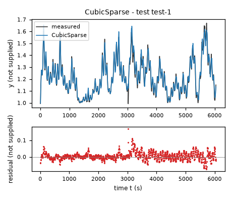
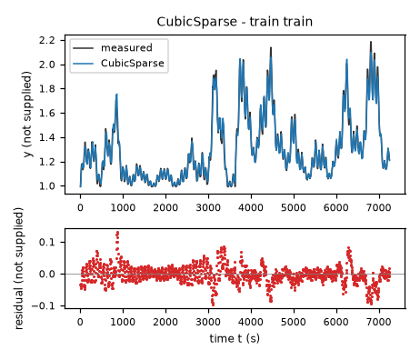
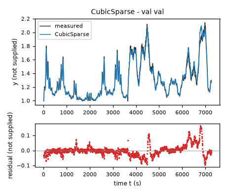
| Data | Trajectory | Scored samples | RMSE | NRMSE | R² | Failure |
|---|---|---|---|---|---|---|
| training data | train | 1451 of 1451 | 0.02829 | 0.1085 | 0.9882 | none |
| validation data | val | 1453 of 1453 | 0.03658 | 0.1394 | 0.9806 | none |
| test data | test-1 | 1209 of 1209 | 0.02381 | 0.1708 | 0.9708 | none |
RMSE of y; NRMSE = RMSE / σ and R² = 1 − SSE / Σ(y[k] − μ)², with μ and σ the mean and the population standard deviation of the measured output on the scored samples.
uone = 60 U_1 (fixed), utwo = 20 U_2 (fixed), yref = 1 U_y (fixed), ys = 1 U_y (fixed), c1 = -0.001113 U_y/s (fitted), c2 = -0.256 U_y/s (fitted), c3 = -0.009852 U_y/s (fitted), c4 = 0.01515 U_y/s (fitted), c5 = -0.005568 U_y/s (fitted), c6 = 0.1583 U_y/s (fitted), c7 = 0.02079 U_y/s (fitted), c8 = 0.008444 U_y/s (fitted), c9 = -0.004278 U_y/s (fitted), c10 = 0.004743 U_y/s (fitted), d = 0.6014 (fitted)y: 0.02823 · validation error: 0.03799 · test error: 0.02706Equations as written in the model file
dy = (c1 + c2*((y-yref)/ys) + c3*(x1/uone) + c4*(x2/utwo) + c5*((y-yref)/ys)**2 + c6*((y-yref)/ys)*(x1/uone) + c7*((y-yref)/ys)*(x2/utwo) + c8*(x1/uone)**2 + c9*(x1/uone)*(x2/utwo) + c10*(x2/utwo)**2)/(1+d*Max(((y-yref)/ys),0))
Equations with the values substituted
Every parameter is replaced by its value with 4 significant digits.
Parameters and estimation
| Name | Value | Unit | Type | Description |
|---|---|---|---|---|
uone | 60 | U_1 | fixed | U_1 is a round input scale chosen before fitting, comparable to the training input magnitude, solely for conditioning; it is not a fitted threshold. |
utwo | 20 | U_2 | fixed | U_2 is a round input scale chosen before fitting, comparable to the training input magnitude, solely for conditioning; it is not a fitted threshold. |
yref | 1 | U_y | fixed | U_y is a convenient fixed expansion origin near the lower observed training state, chosen rather than estimated; it is not an asserted equilibrium. |
ys | 1 | U_y | fixed | U_y is a chosen numerical state scale, making the centered state dimensionless without changing its numeric value. |
c1 | -0.0011134 | U_y/s | fitted | Coefficient of 1; estimated jointly with the other coefficients using the candidate-specific criterion below. |
c2 | -0.255951 | U_y/s | fitted | Coefficient of ; estimated jointly with the other coefficients using the candidate-specific criterion below. |
c3 | -0.00985216 | U_y/s | fitted | Coefficient of ; estimated jointly with the other coefficients using the candidate-specific criterion below. |
c4 | 0.0151514 | U_y/s | fitted | Coefficient of ; estimated jointly with the other coefficients using the candidate-specific criterion below. |
c5 | -0.00556809 | U_y/s | fitted | Coefficient of ; estimated jointly with the other coefficients using the candidate-specific criterion below. |
c6 | 0.158336 | U_y/s | fitted | Coefficient of ; estimated jointly with the other coefficients using the candidate-specific criterion below. |
c7 | 0.0207854 | U_y/s | fitted | Coefficient of ; estimated jointly with the other coefficients using the candidate-specific criterion below. |
c8 | 0.00844398 | U_y/s | fitted | Coefficient of ; estimated jointly with the other coefficients using the candidate-specific criterion below. |
c9 | -0.00427823 | U_y/s | fitted | Coefficient of ; estimated jointly with the other coefficients using the candidate-specific criterion below. |
c10 | 0.00474263 | U_y/s | fitted | Coefficient of ; estimated jointly with the other coefficients using the candidate-specific criterion below. |
d | 0.601418 | - | fitted | Dimensionless nonnegative denominator coefficient; estimated jointly with the ten numerator coefficients. |
- Criterion minimized
Minimize the sum of squared free-running
yresiduals plus the sum of squared predicted-minus-loggeddyresiduals multiplied by 1000 s**2. Equivalently derivative residuals are scaled by s. The chosen dimensionless weight balances simulation bias against derivative fidelity and was selected by the internal suffix simulation comparison.- Data
Final parameter estimation uses every derivative row of data/train.csv and data/val.csv as two separate trajectories. Where rollout residuals enter, it also uses all states after the first of each trajectory. Initial structural searches fitted data/train.csv only and compared free-running simulation on data/val.csv. A subsequent criterion comparison fitted the full training file plus zero-based validation rows 0 through 727 and evaluated rows 728 through 1453, with an independent measured initialization at row 728. The suffix was then included in the final refit to use all supplied identification information. No test data were accessed. No rows were discarded in the final fit.
- Method
A ten-term ordinary least-squares quadratic fit on training derivative rows initialized the numerator; the denominator started at . Both were then jointly fitted by bounded trust-region reflective nonlinear least squares with scipy.optimize.least_squares on training derivative SSE; derivative-stage starts were , , , , , , , , , , . The final joint-criterion refit used the same solver, with each numerator coefficient bounded to U_y/s and ; here
cdenotes each numerator coefficient. These broad numerical bounds prevent extreme trial values, not known physical limits; none is active at the result. The final solver starts were , , , , , , , , , , , taken from mode 0 derivative in rational_results.json because the prior derivative fit was already in a reasonable local basin. Final and criterion-comparison fits use scipy.optimize.least_squares with trust-region reflective,x_scale = "jac", maximum 800 function evaluations, and dimensionless tolerances , , . Nonlinear least squares supports the free-running residual criterion, for which a linear coefficient solve is not available. No random numbers enter this final step. Criterion selection compared derivative-only least squares, rollout-only least squares, and joint least squares with derivative residuals multiplied by s for dimensionless trial weights and . The 10 s residual scale is a chosen conditioning/tradeoff scale, not an identified time constant. The criterion with smallest suffix rollout RMSE was selected. Every rollout uses classical RK4 with 5 s steps, logged inputs held constant, and a single first-state initialization, never later measured-state resets. All fitted parameters are jointly reestimated at each fitting stage; intermediate estimates are not frozen.- Script
final_fit.py
The agent's explanation
Rational continuous-time state-space response-surface model: quadratic numerator and positive piecewise-linear state denominator. General nonlinear-model reference: O. Nelles, Nonlinear System Identification, Springer, 2001 (bibliographic reference recalled from memory, not externally checked).
The state y, inputs x1 and x2, and target dy are the logged columns. Their physical units are unknown. U_y, U_1 and U_2 below denote unspecified native units of y, x1 and x2; dy has units . The full expression is . Input-only monomials give additive input response; monomials involving the centered state change local restoring or amplifying feedback; products with an input make that feedback input-dependent. These are mathematical effects, not identified physical mechanisms. Each coefficient and its exact multiplier are specified in the parameter rows. The submitted expression is . The denominator reduces the vector-field magnitude as the state rises above the reference. Below the reference it is unity. Nonnegative d makes this denominator at least unity everywhere, eliminating state poles; this is a mathematical safeguard, not a physical capacity law.
Quadratic polynomial fits already captured the main input-state interaction. Temporally correlated residuals and remaining state-dependent errors motivated a guessed positive state denominator as a compact alternative to cubic numerator terms. State, first-input, second-input and squared-state denominators were explored; the positive state denominator retained competitive validation rollout performance. The denominator structure and use of Max were assumptions; numerator coefficients were searched by least squares, not given by physics. In the internal criterion comparison, the best suffix rollout RMSE was 0.050387404 U_y on rows 728 through 1453 of data/val.csv, initialized only at row 728 (zero-based rows). This suffix was excluded from that fitting stage but had already been inspected in exploratory validation, so this is not a pristine independent estimate. After refitting on both complete files, the training and validation rollout RMSE values are 0.028233069 and 0.037994708 U_y; these final values are in-sample, not unseen-data scores. Final predicted-minus-logged derivative residual lag-one correlations are 0.449105 and 0.424928 (dimensionless) on training and validation, respectively.
There is no supplied physical description or intended use; no term is assigned a physical mechanism. This is a scalar autonomous-in-state, memoryless-in-input approximation, not evidence that omitted dynamics are absent. It cannot represent input histories, disturbances or time-dependent hidden states. Observed derivative residual correlation motivated nonlinear feedback and input-rate interactions, but remained after these extensions. Sampled derivatives need not be exact continuous-time derivatives, and integration-method effects are absorbed into fitted values. Extrapolation beyond the sampled state/input ranges is unverified; uncertainty intervals were not estimated. The denominator avoids poles but does not guarantee negative feedback in the numerator or safe input extrapolation.
Plots of simulated and measured y, and errors per trajectory
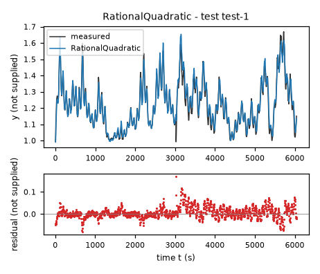
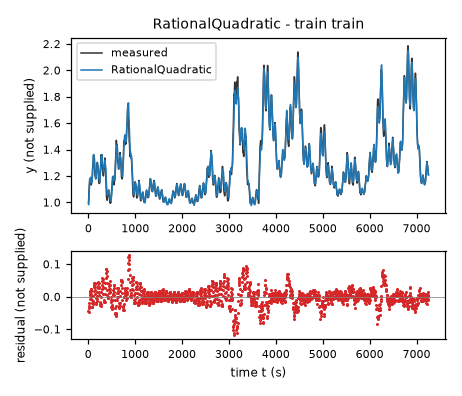
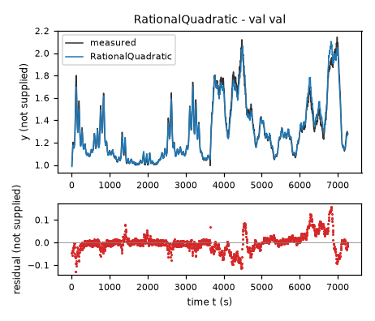
| Data | Trajectory | Scored samples | RMSE | NRMSE | R² | Failure |
|---|---|---|---|---|---|---|
| training data | train | 1451 of 1451 | 0.02823 | 0.1083 | 0.9883 | none |
| validation data | val | 1453 of 1453 | 0.03799 | 0.1447 | 0.9791 | none |
| test data | test-1 | 1209 of 1209 | 0.02706 | 0.1942 | 0.9623 | none |
RMSE of y; NRMSE = RMSE / σ and R² = 1 − SSE / Σ(y[k] − μ)², with μ and σ the mean and the population standard deviation of the measured output on the scored samples.
uone = 60 U_1 (fixed), utwo = 20 U_2 (fixed), yref = 1 U_y (fixed), ys = 1 U_y (fixed), h1 = 1.158 (fixed), h2 = 0.09369 (fixed), h3 = 0.4271 (fixed), c1 = -0.003059 U_y/s (fitted), c2 = -0.285 U_y/s (fitted), c3 = -0.008527 U_y/s (fitted), c4 = 0.02066 U_y/s (fitted), c5 = 0.07852 U_y/s (fitted), c6 = 0.7257 U_y/s (fitted), c7 = 0.009291 U_y/s (fitted), c8 = 0.04081 U_y/s (fitted), c9 = -0.6903 U_y/s (fitted), c10 = -0.03533 U_y/s (fitted)y: 0.02814 · validation error: 0.0383 · test error: 0.02324Equations as written in the model file
dy = c1 + c2*((y-yref)/ys) + c3*(x1/uone) + c4*(x2/utwo) + c5*((y-yref)/ys)*(x1/uone) + c6*((y-yref)/ys)**2 + c7*(x1/uone)**2 + c8*Max((x1/uone)-h1,0)**2 + c9*Max(((y-yref)/ys)-h2,0)**2 + c10*Max(((y-yref)/ys)-h3,0)**2
Equations with the values substituted
Every parameter is replaced by its value with 4 significant digits.
Parameters and estimation
| Name | Value | Unit | Type | Description |
|---|---|---|---|---|
uone | 60 | U_1 | fixed | U_1 is a round input scale chosen before fitting, comparable to the training input magnitude, solely for conditioning; it is not a fitted threshold. |
utwo | 20 | U_2 | fixed | U_2 is a round input scale chosen before fitting, comparable to the training input magnitude, solely for conditioning; it is not a fitted threshold. |
yref | 1 | U_y | fixed | U_y is a convenient fixed expansion origin near the lower observed training state, chosen rather than estimated; it is not an asserted equilibrium. |
ys | 1 | U_y | fixed | U_y is a chosen numerical state scale, making the centered state dimensionless without changing its numeric value. |
h1 | 1.15752 | - | fixed | Fixed dimensionless knot selected from training quartiles before coefficient fitting. ; it is one of the original training quartiles in the indicated normalized coordinate and was retained by backward elimination, not optimized continuously. |
h2 | 0.0936947 | - | fixed | Fixed dimensionless knot selected from training quartiles before coefficient fitting. ; it is one of the original training quartiles in the indicated normalized coordinate and was retained by backward elimination, not optimized continuously. |
h3 | 0.427059 | - | fixed | Fixed dimensionless knot selected from training quartiles before coefficient fitting. ; it is one of the original training quartiles in the indicated normalized coordinate and was retained by backward elimination, not optimized continuously. |
c1 | -0.00305893 | U_y/s | fitted | Coefficient multiplying 1; jointly estimated by ordinary least squares in the final fit. |
c2 | -0.284956 | U_y/s | fitted | Coefficient multiplying ; jointly estimated by ordinary least squares in the final fit. |
c3 | -0.00852658 | U_y/s | fitted | Coefficient multiplying ; jointly estimated by ordinary least squares in the final fit. |
c4 | 0.0206646 | U_y/s | fitted | Coefficient multiplying ; jointly estimated by ordinary least squares in the final fit. |
c5 | 0.0785245 | U_y/s | fitted | Coefficient multiplying ; jointly estimated by ordinary least squares in the final fit. |
c6 | 0.725731 | U_y/s | fitted | Coefficient multiplying ; jointly estimated by ordinary least squares in the final fit. |
c7 | 0.00929081 | U_y/s | fitted | Coefficient multiplying ; jointly estimated by ordinary least squares in the final fit. |
c8 | 0.0408103 | U_y/s | fitted | Coefficient multiplying ; jointly estimated by ordinary least squares in the final fit. |
c9 | -0.690289 | U_y/s | fitted | Coefficient multiplying ; jointly estimated by ordinary least squares in the final fit. |
c10 | -0.0353311 | U_y/s | fitted | Coefficient multiplying ; jointly estimated by ordinary least squares in the final fit. |
- Criterion minimized
Minimize the unweighted sum of squared predicted-minus-logged
dyresiduals over both files. This directly uses the supplied derivative target and was selected over rollout-only and joint criteria by the internal suffix simulation comparison.- Data
Final parameter estimation uses every derivative row of data/train.csv and data/val.csv as two separate trajectories. Where rollout residuals enter, it also uses all states after the first of each trajectory. Initial structural searches fitted data/train.csv only and compared free-running simulation on data/val.csv. A subsequent criterion comparison fitted the full training file plus zero-based validation rows 0 through 727 and evaluated rows 728 through 1453, with an independent measured initialization at row 728. The suffix was then included in the final refit to use all supplied identification information. No test data were accessed. No rows were discarded in the final fit.
- Method
Coefficients in each backward-elimination step and the final derivative fit were jointly estimated by ordinary least squares using scipy.linalg.lstsq; linearity makes nonlinear iterative estimation unnecessary for the selected criterion. No starting values or random seed are needed for the final fit. Rollout and mixed-criterion alternatives were fitted by scipy.optimize.least_squares from the preliminary training coefficient vector , , , , , , , , , . Iterative alternatives used a maximum of 800 evaluations, Jacobian scaling and all three solver tolerances equal to dimensionless
1e-10; their final criterion was rejected in favor of derivative fitting. Criterion selection compared derivative-only least squares, rollout-only least squares, and joint least squares with derivative residuals multiplied by s for dimensionless trial weights and . The 10 s residual scale is a chosen conditioning/tradeoff scale, not an identified time constant. The criterion with smallest suffix rollout RMSE was selected. Every rollout uses classical RK4 with 5 s steps, logged inputs held constant, and a single first-state initialization, never later measured-state resets. All fitted parameters are jointly reestimated at each fitting stage; intermediate estimates are not frozen.- Script
final_spline.py
The agent's explanation
Quadratic regression-spline vector field in the truncated-power basis, with an input-state interaction; it is not a full MARS implementation. Basis reference: C. de Boor, A Practical Guide to Splines, Springer, 1978 (recalled from memory, not externally checked).
The state y, inputs x1 and x2, and target dy are the logged columns. Their physical units are unknown. U_y, U_1 and U_2 below denote unspecified native units of y, x1 and x2; dy has units . The full vector field is . Input-only terms give additive forcing, state terms give nonlinear feedback, and the input-state product changes its rate. Each Max term is inactive below its knot and contributes quadratic curvature above it, with continuous first derivative at the knot. Coefficients carry no asserted physical interpretation.
After polynomial and rational fits, a local spline basis was tried to avoid requiring one global cubic shape. Start with constant, linear, squared and input-state terms plus input/state hinges at training quartiles and state times input hinges. One, two and three internal knots per coordinate were explored. Deterministic backward elimination used the smallest refitted training derivative SSE at each removal. The ten-term, three-original-knot-per-coordinate model retained three hinges and gave competitive training-only validation performance with fewer fitted coefficients than the cubic. Knots are data-derived fixed structure settings, not physical thresholds. In the internal criterion comparison, the best suffix rollout RMSE was 0.051648101 U_y on rows 728 through 1453 of data/val.csv, initialized only at row 728 (zero-based rows). This suffix was excluded from that fitting stage but had already been inspected in exploratory validation, so this is not a pristine independent estimate. After refitting on both complete files, the training and validation rollout RMSE values are 0.028137827 and 0.038301547 U_y; these final values are in-sample, not unseen-data scores. Final predicted-minus-logged derivative residual lag-one correlations are 0.432794 and 0.397854 (dimensionless) on training and validation, respectively.
There is no supplied physical description or intended use; no term is assigned a physical mechanism. This is a scalar autonomous-in-state, memoryless-in-input approximation, not evidence that omitted dynamics are absent. It cannot represent input histories, disturbances or time-dependent hidden states. Observed derivative residual correlation motivated nonlinear feedback and input-rate interactions, but remained after these extensions. Sampled derivatives need not be exact continuous-time derivatives, and integration-method effects are absorbed into fitted values. Extrapolation beyond the sampled state/input ranges is unverified; uncertainty intervals were not estimated. Quadratic spline tails and cross terms remain unbounded; no monotonicity or global stability constraint was imposed. Only the observed neighborhood of each knot is supported by data.
Plots of simulated and measured y, and errors per trajectory
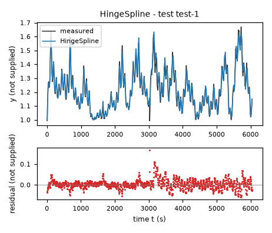
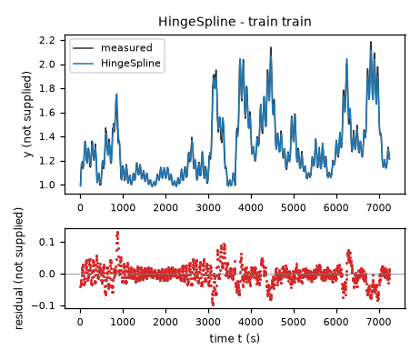
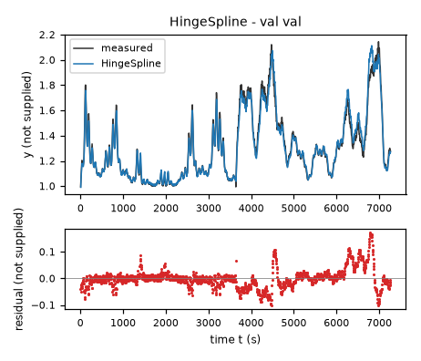
| Data | Trajectory | Scored samples | RMSE | NRMSE | R² | Failure |
|---|---|---|---|---|---|---|
| training data | train | 1451 of 1451 | 0.02814 | 0.1079 | 0.9884 | none |
| validation data | val | 1453 of 1453 | 0.0383 | 0.1459 | 0.9787 | none |
| test data | test-1 | 1209 of 1209 | 0.02324 | 0.1667 | 0.9722 | none |
RMSE of y; NRMSE = RMSE / σ and R² = 1 − SSE / Σ(y[k] − μ)², with μ and σ the mean and the population standard deviation of the measured output on the scored samples.
uone = 60 U_1 (fixed), utwo = 20 U_2 (fixed), eps = 1e-10 (fixed), k = 0.2362 U_y/s (fitted), g = 0.647 (fitted), ybase = 0.9935 U_y (fitted), source = 0.01426 U_y/s (fitted), n = 1.506 (fitted)y: 0.03357 · validation error: 0.03984 · test error: 0.02805Equations as written in the model file
dy = -k*(1-g*(x1/uone))*log(Max(y/ybase,eps))+source*Max(x2/utwo,0)**n
Equations with the values substituted
Every parameter is replaced by its value with 4 significant digits.
Parameters and estimation
| Name | Value | Unit | Type | Description |
|---|---|---|---|---|
uone | 60 | U_1 | fixed | U_1 is a round input scale chosen before fitting, comparable to the training input magnitude, solely for conditioning; it is not a fitted threshold. |
utwo | 20 | U_2 | fixed | U_2 is a round input scale chosen before fitting, comparable to the training input magnitude, solely for conditioning; it is not a fitted threshold. |
eps | 1e-10 | - | fixed | is a dimensionless numerical lower guard for the logarithm, used in the fitting code to avoid invalid trial evaluations; chosen, not fitted, and inactive on the logged and final simulated trajectories. |
k | 0.236175 | U_y/s | fitted | Feedback magnitude, jointly fitted; see expression for whether it multiplies a state difference or a dimensionless logarithm. |
g | 0.647017 | - | fitted | Dimensionless first-input feedback modifier or sigmoid location, as specified by the expression. |
ybase | 0.993537 | U_y | fitted | Fitted reference state, not assumed to be an independently measured physical equilibrium. |
source | 0.0142573 | U_y/s | fitted | Magnitude of the second-input forcing at normalized input unity. |
n | 1.50568 | - | fitted | Dimensionless fitted exponent of the nonnegative normalized second input. |
- Criterion minimized
Minimize the unweighted sum of squared predicted-minus-logged
dyresiduals over both files. This directly uses the supplied derivative target and was selected over rollout-only and joint criteria by the internal suffix simulation comparison.- Data
Final parameter estimation uses every derivative row of data/train.csv and data/val.csv as two separate trajectories. Where rollout residuals enter, it also uses all states after the first of each trajectory. Initial structural searches fitted data/train.csv only and compared free-running simulation on data/val.csv. A subsequent criterion comparison fitted the full training file plus zero-based validation rows 0 through 727 and evaluated rows 728 through 1453, with an independent measured initialization at row 728. The suffix was then included in the final refit to use all supplied identification information. No test data were accessed. No rows were discarded in the final fit.
- Method
The preliminary training derivative fit used bounded trust-region reflective nonlinear least squares, scipy.optimize.least_squares, from three deterministic numerical start vectors (, , , , ); (, , , , ); (, , , , ). These were generated in the exploratory search with numpy random seed 15; the best derivative SSE solution initialized later fits. Bounds for the preliminary and final model were
kin[0.0001, 5]U_y/s;gin[-5, 5]-;ybasein[0.69999999999999996, 1.3]U_y;sourcein[0, 0.5]U_y/s;nin[0.20000000000000001, 8]-. They are numerical identification constraints allowing broad reference states and positive source/exponent/rate, not supplied physical information. The final solution does not reach these bounds. The final solver starts were , , , , , taken from log_feedback derivative in nonlinear_results.json because the prior derivative fit was already in a reasonable local basin. Final and criterion-comparison fits use scipy.optimize.least_squares with trust-region reflective,x_scale = "jac", maximum 800 function evaluations, and dimensionless tolerances , , . Nonlinear least squares supports the free-running residual criterion, for which a linear coefficient solve is not available. No random numbers enter this final step. Criterion selection compared derivative-only least squares, rollout-only least squares, and joint least squares with derivative residuals multiplied by s for dimensionless trial weights and . The 10 s residual scale is a chosen conditioning/tradeoff scale, not an identified time constant. The criterion with smallest suffix rollout RMSE was selected. Every rollout uses classical RK4 with 5 s steps, logged inputs held constant, and a single first-state initialization, never later measured-state resets. All fitted parameters are jointly reestimated at each fitting stage; intermediate estimates are not frozen.- Script
final_fit.py
The agent's explanation
Logarithmic nonlinear state-feedback model with affine input modulation and power-law input forcing. General nonlinear-model reference: O. Nelles, Nonlinear System Identification, Springer, 2001 (bibliographic reference recalled from memory, not externally checked).
The state y, inputs x1 and x2, and target dy are the logged columns. Their physical units are unknown. U_y, U_1 and U_2 below denote unspecified native units of y, x1 and x2; dy has units . In , is a sublinear state deviation above the reference. The factor changes feedback magnitude with the first input and may change its sign. The power term increases forcing with the second input, while extends the input response as zero below zero to avoid complex fractional powers. The guard is numerical, not an identified physical law.
Strong fitted input-state interactions motivated affine input modulation rather than constant-rate relaxation. State-logarithm feedback was guessed as a compact sublinear alternative to state polynomials. Affine, logarithmic, rational, signed-power, hyperbolic-tangent and exponential feedback forms were compared; the logarithmic form improved validation over affine feedback using only five fitted parameters. No supplied physics selected the logarithm or power exponent. In the internal criterion comparison, the best suffix rollout RMSE was 0.051168782 U_y on rows 728 through 1453 of data/val.csv, initialized only at row 728 (zero-based rows). This suffix was excluded from that fitting stage but had already been inspected in exploratory validation, so this is not a pristine independent estimate. After refitting on both complete files, the training and validation rollout RMSE values are 0.033566678 and 0.039841839 U_y; these final values are in-sample, not unseen-data scores. Final predicted-minus-logged derivative residual lag-one correlations are 0.494632 and 0.467064 (dimensionless) on training and validation, respectively.
There is no supplied physical description or intended use; no term is assigned a physical mechanism. This is a scalar autonomous-in-state, memoryless-in-input approximation, not evidence that omitted dynamics are absent. It cannot represent input histories, disturbances or time-dependent hidden states. Observed derivative residual correlation motivated nonlinear feedback and input-rate interactions, but remained after these extensions. Sampled derivatives need not be exact continuous-time derivatives, and integration-method effects are absorbed into fitted values. Extrapolation beyond the sampled state/input ranges is unverified; uncertainty intervals were not estimated. Positive measured states support the logarithmic branch, not behavior near zero. The guard has no physical justification below its cutoff; input feedback can become amplifying at sufficiently high first input.
Plots of simulated and measured y, and errors per trajectory
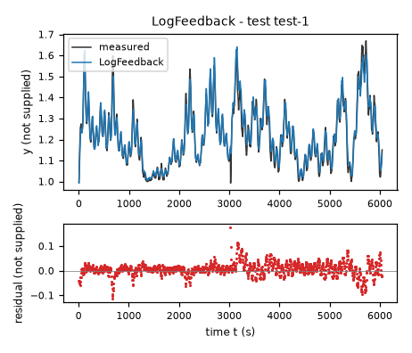
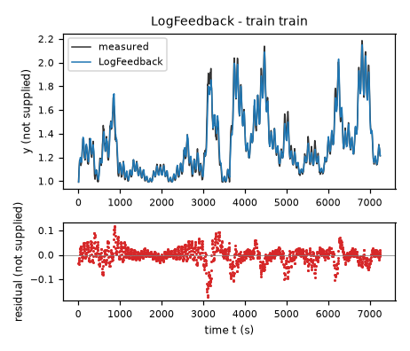
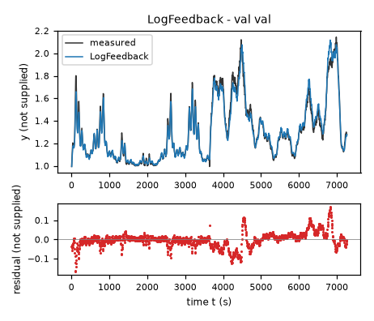
| Data | Trajectory | Scored samples | RMSE | NRMSE | R² | Failure |
|---|---|---|---|---|---|---|
| training data | train | 1451 of 1451 | 0.03357 | 0.1287 | 0.9834 | none |
| validation data | val | 1453 of 1453 | 0.03984 | 0.1518 | 0.977 | none |
| test data | test-1 | 1209 of 1209 | 0.02805 | 0.2013 | 0.9595 | none |
RMSE of y; NRMSE = RMSE / σ and R² = 1 − SSE / Σ(y[k] − μ)², with μ and σ the mean and the population standard deviation of the measured output on the scored samples.
uone = 60 U_1 (fixed), utwo = 20 U_2 (fixed), k = 0.2108 1/s (fitted), g = 0.6606 (fitted), ybase = 0.9826 U_y (fitted), source = 0.01422 U_y/s (fitted), n = 1.682 (fitted)y: 0.03298 · validation error: 0.04108 · test error: 0.02915Equations as written in the model file
dy = -k*(1-g*(x1/uone))*(y-ybase)+source*Max(x2/utwo,0)**n
Equations with the values substituted
Every parameter is replaced by its value with 4 significant digits.
Parameters and estimation
| Name | Value | Unit | Type | Description |
|---|---|---|---|---|
uone | 60 | U_1 | fixed | U_1 is a round input scale chosen before fitting, comparable to the training input magnitude, solely for conditioning; it is not a fitted threshold. |
utwo | 20 | U_2 | fixed | U_2 is a round input scale chosen before fitting, comparable to the training input magnitude, solely for conditioning; it is not a fitted threshold. |
k | 0.210834 | 1/s | fitted | Feedback magnitude, jointly fitted; see expression for whether it multiplies a state difference or a dimensionless logarithm. |
g | 0.66058 | - | fitted | Dimensionless first-input feedback modifier or sigmoid location, as specified by the expression. |
ybase | 0.98256 | U_y | fitted | Fitted reference state, not assumed to be an independently measured physical equilibrium. |
source | 0.0142225 | U_y/s | fitted | Magnitude of the second-input forcing at normalized input unity. |
n | 1.68217 | - | fitted | Dimensionless fitted exponent of the nonnegative normalized second input. |
- Criterion minimized
Minimize the unweighted sum of squared simulated-minus-logged
yresiduals at every post-initial sample in each complete trajectory. This matches the evaluation objective and was selected by the internal suffix simulation comparison.- Data
Final parameter estimation uses every derivative row of data/train.csv and data/val.csv as two separate trajectories. Where rollout residuals enter, it also uses all states after the first of each trajectory. Initial structural searches fitted data/train.csv only and compared free-running simulation on data/val.csv. A subsequent criterion comparison fitted the full training file plus zero-based validation rows 0 through 727 and evaluated rows 728 through 1453, with an independent measured initialization at row 728. The suffix was then included in the final refit to use all supplied identification information. No test data were accessed. No rows were discarded in the final fit.
- Method
The preliminary training derivative fit used bounded trust-region reflective nonlinear least squares, scipy.optimize.least_squares, from three deterministic numerical start vectors (, , , , ); (, , , , ); (, , , , ). These were generated in the exploratory search with numpy random seed 15; the best derivative SSE solution initialized later fits. Bounds for the preliminary and final model were
kin[0.0001, 5]1/s;gin[-5, 5]-;ybasein[0.69999999999999996, 1.3]U_y;sourcein[0, 0.5]U_y/s;nin[0.20000000000000001, 8]-. They are numerical identification constraints allowing broad reference states and positive source/exponent/rate, not supplied physical information. The final solution does not reach these bounds. The final solver starts were , , , , , taken from affine_rate derivative in nonlinear_results.json because the prior derivative fit was already in a reasonable local basin. Final and criterion-comparison fits use scipy.optimize.least_squares with trust-region reflective,x_scale = "jac", maximum 800 function evaluations, and dimensionless tolerances , , . Nonlinear least squares supports the free-running residual criterion, for which a linear coefficient solve is not available. No random numbers enter this final step. Criterion selection compared derivative-only least squares, rollout-only least squares, and joint least squares with derivative residuals multiplied by s for dimensionless trial weights and . The 10 s residual scale is a chosen conditioning/tradeoff scale, not an identified time constant. The criterion with smallest suffix rollout RMSE was selected. Every rollout uses classical RK4 with 5 s steps, logged inputs held constant, and a single first-state initialization, never later measured-state resets. All fitted parameters are jointly reestimated at each fitting stage; intermediate estimates are not frozen.- Script
final_fit.py
The agent's explanation
Bilinear-in-state/input continuous-time model with power-law additive input forcing. General nonlinear-model reference: O. Nelles, Nonlinear System Identification, Springer, 2001 (bibliographic reference recalled from memory, not externally checked).
The state y, inputs x1 and x2, and target dy are the logged columns. Their physical units are unknown. U_y, U_1 and U_2 below denote unspecified native units of y, x1 and x2; dy has units . In , is linear state feedback and opposes it as the first input rises. The second-input power term is additive forcing. For a fixed input, the state dynamics are affine; negative effective feedback rates are possible above the inferred crossing. The nonnegative input extension avoids complex fractional powers; it is not identified by negative-input data.
Quadratic polynomial fitting and backward elimination revealed a dominant product of the first input and the state deviation. A compact model retaining that interaction and a fitted second-input power was therefore proposed by mathematical simplification, not physical inference. The reference state and power exponent were allowed to vary instead of fixing the baseline or forcing it to be quadratic. In the internal criterion comparison, the best suffix rollout RMSE was 0.057390959 U_y on rows 728 through 1453 of data/val.csv, initialized only at row 728 (zero-based rows). This suffix was excluded from that fitting stage but had already been inspected in exploratory validation, so this is not a pristine independent estimate. After refitting on both complete files, the training and validation rollout RMSE values are 0.032981244 and 0.041078753 U_y; these final values are in-sample, not unseen-data scores. Final predicted-minus-logged derivative residual lag-one correlations are 0.572954 and 0.518603 (dimensionless) on training and validation, respectively.
There is no supplied physical description or intended use; no term is assigned a physical mechanism. This is a scalar autonomous-in-state, memoryless-in-input approximation, not evidence that omitted dynamics are absent. It cannot represent input histories, disturbances or time-dependent hidden states. Observed derivative residual correlation motivated nonlinear feedback and input-rate interactions, but remained after these extensions. Sampled derivatives need not be exact continuous-time derivatives, and integration-method effects are absorbed into fitted values. Extrapolation beyond the sampled state/input ranges is unverified; uncertainty intervals were not estimated. The affine rate is not restricted to remain positive, so persistent first inputs beyond the fitted crossing can produce exponential growth.
Plots of simulated and measured y, and errors per trajectory
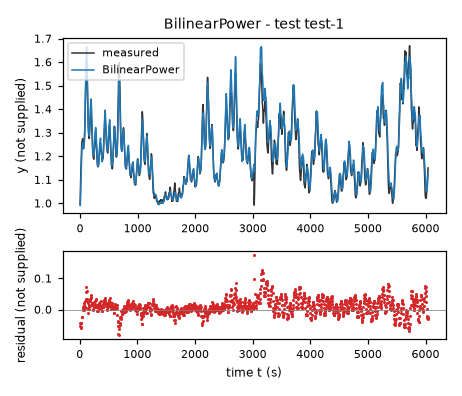
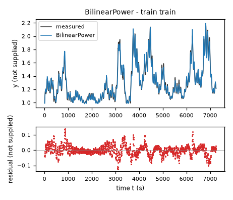
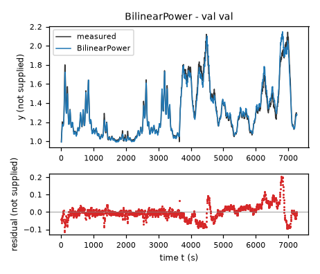
| Data | Trajectory | Scored samples | RMSE | NRMSE | R² | Failure |
|---|---|---|---|---|---|---|
| training data | train | 1451 of 1451 | 0.03298 | 0.1265 | 0.984 | none |
| validation data | val | 1453 of 1453 | 0.04108 | 0.1565 | 0.9755 | none |
| test data | test-1 | 1209 of 1209 | 0.02915 | 0.2091 | 0.9563 | none |
RMSE of y; NRMSE = RMSE / σ and R² = 1 − SSE / Σ(y[k] − μ)², with μ and σ the mean and the population standard deviation of the measured output on the scored samples.
uone = 60 U_1 (fixed), utwo = 20 U_2 (fixed), k = 0.1253 1/s (fitted), g = 1.124 (fitted), ybase = 0.9729 U_y (fitted), source = 0.01623 U_y/s (fitted), n = 1.647 (fitted), width = 0.1571 (fitted)y: 0.03883 · validation error: 0.04208 · test error: 0.03468Equations as written in the model file
dy = -k*(y-ybase)/(1+exp(((x1/uone)-g)/width))+source*Max(x2/utwo,0)**n
Equations with the values substituted
Every parameter is replaced by its value with 4 significant digits.
Parameters and estimation
| Name | Value | Unit | Type | Description |
|---|---|---|---|---|
uone | 60 | U_1 | fixed | U_1 is a round input scale chosen before fitting, comparable to the training input magnitude, solely for conditioning; it is not a fitted threshold. |
utwo | 20 | U_2 | fixed | U_2 is a round input scale chosen before fitting, comparable to the training input magnitude, solely for conditioning; it is not a fitted threshold. |
k | 0.125264 | 1/s | fitted | Feedback magnitude, jointly fitted; see expression for whether it multiplies a state difference or a dimensionless logarithm. |
g | 1.1235 | - | fitted | Dimensionless first-input feedback modifier or sigmoid location, as specified by the expression. |
ybase | 0.972854 | U_y | fitted | Fitted reference state, not assumed to be an independently measured physical equilibrium. |
source | 0.0162348 | U_y/s | fitted | Magnitude of the second-input forcing at normalized input unity. |
n | 1.6469 | - | fitted | Dimensionless fitted exponent of the nonnegative normalized second input. |
width | 0.157067 | - | fitted | Positive dimensionless sigmoid transition width. |
- Criterion minimized
Minimize the unweighted sum of squared simulated-minus-logged
yresiduals at every post-initial sample in each complete trajectory. This matches the evaluation objective and was selected by the internal suffix simulation comparison.- Data
Final parameter estimation uses every derivative row of data/train.csv and data/val.csv as two separate trajectories. Where rollout residuals enter, it also uses all states after the first of each trajectory. Initial structural searches fitted data/train.csv only and compared free-running simulation on data/val.csv. A subsequent criterion comparison fitted the full training file plus zero-based validation rows 0 through 727 and evaluated rows 728 through 1453, with an independent measured initialization at row 728. The suffix was then included in the final refit to use all supplied identification information. No test data were accessed. No rows were discarded in the final fit.
- Method
The preliminary training derivative fit used bounded trust-region reflective nonlinear least squares, scipy.optimize.least_squares, from , , , , , . This single start was chosen near the preliminary affine-rate magnitude and a broad normalized-input transition. No random seed applies. Bounds for the preliminary and final model were
kin[0.001, 0.55000000000000004]1/s;gin[0.10000000000000001, 3]-;ybasein[0.69999999999999996, 1.3]U_y;sourcein[0, 0.5]U_y/s;nin[0.20000000000000001, 8]-;widthin[0.01, 2]-. They are numerical identification constraints allowing broad reference states and positive source/exponent/rate, not supplied physical information. The final solution does not reach these bounds. The final solver starts were , , , , , , taken from mode 3 derivative in clamped_results.json because the prior derivative fit was already in a reasonable local basin. Final and criterion-comparison fits use scipy.optimize.least_squares with trust-region reflective,x_scale = "jac", maximum 800 function evaluations, and dimensionless tolerances , , . Nonlinear least squares supports the free-running residual criterion, for which a linear coefficient solve is not available. No random numbers enter this final step. Criterion selection compared derivative-only least squares, rollout-only least squares, and joint least squares with derivative residuals multiplied by s for dimensionless trial weights and . The 10 s residual scale is a chosen conditioning/tradeoff scale, not an identified time constant. The criterion with smallest suffix rollout RMSE was selected. Every rollout uses classical RK4 with 5 s steps, logged inputs held constant, and a single first-state initialization, never later measured-state resets. All fitted parameters are jointly reestimated at each fitting stage; intermediate estimates are not frozen.- Script
final_fit.py
The agent's explanation
Gain-scheduled first-order relaxation with a logistic input-dependent rate and power-law forcing. General nonlinear-model reference: O. Nelles, Nonlinear System Identification, Springer, 2001 (bibliographic reference recalled from memory, not externally checked).
The state y, inputs x1 and x2, and target dy are the logged columns. Their physical units are unknown. U_y, U_1 and U_2 below denote unspecified native units of y, x1 and x2; dy has units . In , the first term pulls the state toward the reference with an always-positive rate, decreasing with the first input. The second term supplies positive power-law forcing. The logistic modulation is bounded and mathematically removes the sign change of the affine feedback model; no particular physical switching mechanism is claimed. The nonnegative input extension protects fractional powers.
Affine-rate models fit well but permit negative rates outside their apparent crossing. A guessed logistic rate was explored as a stable-for-fixed-input alternative, distinct from sigmoid equilibria with constant rates. It has somewhat higher residual error but avoids state-feedback sign reversal. Its transition parameters and power forcing were identified from data; the choice of sigmoid was a stability assumption. In the internal criterion comparison, the best suffix rollout RMSE was 0.058685597 U_y on rows 728 through 1453 of data/val.csv, initialized only at row 728 (zero-based rows). This suffix was excluded from that fitting stage but had already been inspected in exploratory validation, so this is not a pristine independent estimate. After refitting on both complete files, the training and validation rollout RMSE values are 0.038834875 and 0.042076554 U_y; these final values are in-sample, not unseen-data scores. Final predicted-minus-logged derivative residual lag-one correlations are 0.661217 and 0.579239 (dimensionless) on training and validation, respectively.
There is no supplied physical description or intended use; no term is assigned a physical mechanism. This is a scalar autonomous-in-state, memoryless-in-input approximation, not evidence that omitted dynamics are absent. It cannot represent input histories, disturbances or time-dependent hidden states. Observed derivative residual correlation motivated nonlinear feedback and input-rate interactions, but remained after these extensions. Sampled derivatives need not be exact continuous-time derivatives, and integration-method effects are absorbed into fitted values. Extrapolation beyond the sampled state/input ranges is unverified; uncertainty intervals were not estimated. A positive instantaneous rate is not a guarantee that arbitrarily high source inputs keep the state inside the evaluation limits. The rate approaches zero at high first input, so long transients and very high equilibria are possible.
Plots of simulated and measured y, and errors per trajectory
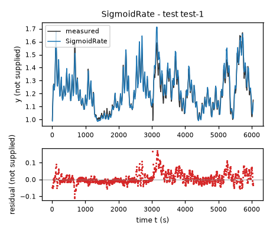
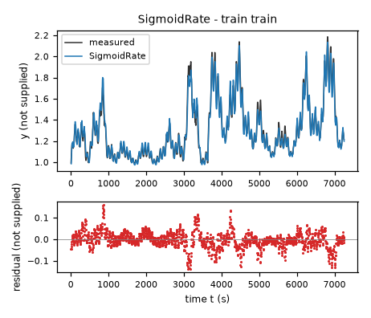
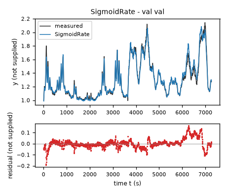
| Data | Trajectory | Scored samples | RMSE | NRMSE | R² | Failure |
|---|---|---|---|---|---|---|
| training data | train | 1451 of 1451 | 0.03883 | 0.1489 | 0.9778 | none |
| validation data | val | 1453 of 1453 | 0.04208 | 0.1603 | 0.9743 | none |
| test data | test-1 | 1209 of 1209 | 0.03468 | 0.2489 | 0.9381 | none |
RMSE of y; NRMSE = RMSE / σ and R² = 1 − SSE / Σ(y[k] − μ)², with μ and σ the mean and the population standard deviation of the measured output on the scored samples.
2 Course of the run
The system prompt, TASK.md and FORMAT.md that the agent received are shown on the page of the experiment.
0:00Harness: opening message to the agent
10:09Read TASK.md0.01
5,474 input and 19 output tokens; 0.011 USD for this turn.
TASK.md
output as sent to the agent (3,449 characters, 38 lines)
[TASK.md: 3422 characters] # Task: Identification task qtqm ## 1 System and intended use The task gives no description of the system. The task states no intended use of the model. ## 2 Data `data/train.csv` holds 1452 samples of training data: one trajectory of consecutive samples. `data/val.csv` holds 1454 samples of validation data: one trajectory of consecutive samples. Whether and how you use the validation data is your decision. Row k+1 of a trajectory is the sample that follows row k; different trajectories are separate experiments. The sampling period is T_s = 5 s. | Column | Role | Unit | Training range | Description | |---|---|---|---|---| | `y` | state, scored output | not supplied | not declared | not supplied | | `x1` | input | not supplied | not declared | not supplied | | `x2` | input | not supplied | not declared | not supplied | | `dy` | sampled time derivative of `y` | not supplied | not declared | not supplied | The task does not state the units. The task does not describe the columns. ## 3 What you deliver A candidate is a continuous-time model of one closed-form expression, `dy`: the time derivative of the state `y` as a function of `y`, `x1` and `x2`. The column `dy` is a possible fitting target for the derivative of `y`; it is not an argument of the expressions. `FORMAT.md` states how an expression is written and what it may contain. Write one file per candidate, `models/<label>.json`; `FORMAT.md` describes the file and gives an example. Write also `models/pool.json`, which lists the labels of your candidates in the order in which they are to be evaluated. You can recommend one candidate that you consider the best-performing. `models/pool.json` then names that candidate and gives your reason. Run `python check_submission.py` to check your files: it prints every error with its location, so that you can correct it. At most 10 candidates are evaluated, in the order of `models/pool.json`. Consider various identification approaches, for example physically motivated structures, symbolic-regression search or sparse regression; before fitting, list the approaches and the model families you will try. Build the pool from structurally different model families, not from variations of one form. Examine the residuals of your best candidates and try structures that can represent what they show. Include only candidates you would defend as a model of the system. ## 4 Evaluation The harness, the software that runs this task, evaluates every candidate on test data that you cannot access. For each test trajectory it starts from the first logged state and integrates the expressions with the classical fourth-order Runge–Kutta method, one step per sampling period, with the logged inputs held constant between samples; a simulated state is never replaced by a later measurement. The score is the root mean squared error (RMSE) between simulated and logged `y` over all test samples after the first of each trajectory. An evaluation fails when a value is not finite, when `y` leaves [-100, 100], or when it takes longer than 60 s. ## 5 Limits and completion One round: 60 turns, 3600 s of execution time, 10 USD; a turn is one response of yours. When the files pass the check, send the exact message DONE. If the harness's check of the files then fails, you receive its report and may correct the files once. If a limit ends the round earlier, the complete candidate files are evaluated.
20:11Read FORMAT.md0.02
6,270 input and 19 output tokens; 0.013 USD for this turn.
FORMAT.md
output as sent to the agent (8,159 characters, 128 lines)
[FORMAT.md: 8130 characters]
# Model file format
This file is the same for every task. `TASK.md` names the expression keys, the variables and the permitted functions of your task.
## Candidate file `models/<label>.json`
Write one JSON file per candidate. The label is the file name: a letter, then up to 31 letters, digits, `_` or `-`. The file has these fields and no others:
- `expressions`: one expression text per expression key named in `TASK.md`.
- `parameters`: one row per parameter. A parameter is a constant of the expressions that you name yourself, for example `a1`. Its row has
- `name`: the name used in the expressions: a letter, then letters, digits or `_`; it differs from every column, expression key, constant and function name;
- `value`: the numerical value;
- `unit`: the unit; `-` for a dimensionless quantity;
- `type`: `fitted` (estimated from data), `fixed` (chosen or known, not estimated) or `tied` (computed from other parameters by `equation`);
- `description`: what the parameter represents; for a fixed value, where the value comes from and why it was chosen; for a value taken over from another candidate or an earlier fit, from which one;
- `equation`: for a tied parameter only: its defining equation over other parameters, given constants and numbers.
- `estimation`: how the values of the fitted parameters of this candidate were obtained and why in this way; for every fitted parameter it must be clear how its value was found. Write the record for this candidate model, not for the run as a whole: its own criterion, data, method and starting values, with the reasons that apply to this candidate. The record has
- `criterion`: what was minimized, on which variable, and why this criterion;
- `data`: the files, trajectories or rows used, and the reason when some were left out;
- `method`: how the values were estimated: the estimation method by its established name and the software function, and why this method and not another; the starting values as numbers, or the statement that the method needs none, and why these starting values; whether all fitted parameters were estimated together in one step and, if not, which parameters were estimated in which step, with which criterion, and why; the seeds where they apply;
- `script`: the file in the working directory that reproduces the values.
- `discussion`: four texts, in this order:
- `family`: the model family by its established name, with a reference where you know one;
- `interpretation`: what each term represents in the system; describe a term without a known physical meaning by its mathematical effect;
- `origin`: how you arrived at the structure of this expression, as distinct from its parameter values, which `estimation` covers: say which of its terms, variables and operators came from physical reasoning, which from a search and which from a guess, what you tried before, and what made you change it;
- `limitations`: what the data do not determine and where the model is not expected to hold.
- `answers`: only when `TASK.md` asks questions about the candidates: one text per question identifier.
- `predecessor`: only in a later round of an interactive session, and optional: the label of the candidate of the previous pool that this candidate revises.
## Expressions
An expression is a text in Python syntax. It may contain:
- the variables that `TASK.md` names as the arguments of the expression;
- your parameters, each with a row in `parameters`;
- the constants `pi` and `E`, the given constants that `TASK.md` lists, and numbers;
- these operators and functions, unless `TASK.md` states another list: `+` `-` `*` `/` `**` `sin` `cos` `tan` `asin` `acos` `atan` `atan2` `sinh` `cosh` `tanh` `exp` `log` `sqrt` `Abs` `sign` `Min` `Max` `Piecewise`.
`**` is the power (not `^`), and `log` is the natural logarithm. `Piecewise` takes pairs `(value, condition)` and ends with a pair `(value, True)`, for example `Piecewise((a1*q, (q > 0) & (q < 1)), (0, True))`. A condition is a comparison `<`, `<=`, `>`, `>=`, `Eq(a, b)` or `Ne(a, b)`, each in parentheses, combined with `&`, `|` and `~`.
A number that fixes the form of the expression, such as 2 in `q**2`, may be written directly. A value obtained by estimation is a parameter with a row in `parameters`, never a number written into the expression. Every parameter row must be used in an expression or in a tie equation.
## Pool file `models/pool.json`
- `order`: the candidate labels in your order;
- `recommended`: the label of the candidate you recommend, or `null` when you recommend none;
- `reason`: why you recommend this candidate, or why you recommend none.
Every file `models/<label>.json` must be listed in `order`.
## Example
An invented task with one input `q` and one output `z`, whose expression key is `z`. The example shows the format only: its model is not a proposal, and its discussion texts say what your texts must contain.
`models/M01.json`:
```json
{
"expressions": {
"z": "a1*q + b1*q**2/n0"
},
"parameters": [
{
"name": "a1",
"value": 0.5,
"unit": "-",
"type": "fitted",
"description": "coefficient of `q`"
},
{
"name": "n0",
"value": 2.0,
"unit": "-",
"type": "fixed",
"description": "normalisation of the quadratic term; chosen as the largest value of `q` in the training data, so that `b1` has the scale of `a1`"
},
{
"name": "b1",
"value": 1.0,
"unit": "-",
"type": "tied",
"equation": "2*a1",
"description": "coefficient of `q**2/n0`, tied to `a1` by the assumption stated in the discussion"
}
],
"estimation": {
"criterion": "sum of squared differences between the expression `z` and the column `z`, because the expression gives `z` directly and no row is known to be more accurate than another",
"data": "data/train.csv, all rows",
"method": "The value of `a1` was estimated by ordinary least squares with numpy.linalg.lstsq. With `b1 = 2*a1` the expression is linear in the one fitted parameter `a1`, so the least-squares solution is obtained directly and an iterative method is not needed; for the same reason the method needs no starting values. `a1` is the only fitted parameter and was estimated in one step. The method uses no random numbers, so that no seed applies.",
"script": "fit_M01.py"
},
"discussion": {
"family": "State the model family by its established name.",
"interpretation": "State what each term represents.",
"origin": "State how you arrived at this expression.",
"limitations": "State what the data do not determine and where the model is not expected to hold."
}
}
```
`models/pool.json`:
```json
{
"order": [
"M01"
],
"recommended": "M01",
"reason": "State why you recommend this candidate, or why you recommend none."
}
```
## Checking
`python check_submission.py` checks every file against these rules and evaluates each expression on the training data. It names each error with its rule. Correct the errors and run it again.
## Writing
- Define every symbol at first use.
- Give every number with its unit and the data it was computed on.
- Name methods by their established names.
- Cite a reference for a model family or a method where one applies. Cite only references you are certain exist, and say when you cite from memory without having checked the source.
- Say what is estimated, what is assumed and what is unknown.
- Give a brief reason for every choice you made: a structure, a criterion, a method, a starting value, a fixed value, a term you removed.
- Write every expression inside a text between backticks, in the syntax of the expressions, for example `a1*q**2`; write it out, do not describe it in words. This holds also for a single parameter, column or expression name, such as `a1`, for a value given to one, such as `a1 = 0.5`, and for a range, such as `0 <= a1 <= 2`. A unit follows outside the backticks; a dimensionless value has no unit and no hyphen after it.
- Describe a term without a known physical meaning by its mathematical effect; do not invent a meaning.
30:17Listed the files0.04
8,322 input and 156 output tokens (of which 70 reasoning); 0.018 USD for this turn.
reasoning summary (written by the model provider's summarizer; the model's own reasoning is not available)
Evaluating data fitting
I need to inspect the data and propose approaches before fitting. I should avoid using the web unless I can find specific family references that I can cite from memory. However, if there are desired references, I might need to use the web. I want to keep it simple and remember that no external information is necessary for empirical fitting. It looks like I have about 60 turns remaining, which should be plenty!
I’ll compare affine dynamics, sparse polynomial dynamics with input–state interactions, and nonlinear relaxation models with saturating input responses. I’ll fit the sampled derivative first, then compare free-running RK4 simulations on validation data. Residual patterns will guide any additional structures; the pool will contain only models I can defend.
{}output as sent to the agent (189 characters, 9 lines)
[.: 8 entries] data/ models/ FORMAT.md 8130 bytes TASK.md 3424 bytes check_config.json 965 bytes check_submission.py 102476 bytes data/train.csv 105525 bytes data/val.csv 105660 bytes
40:23Wrote explore.py0.06
8,550 input and 269 output tokens; 0.020 USD for this turn.
explore.py
file content written (742 characters)
import numpy as np,pandas as pd
from scipy import signal
for fn in ['train','val']:
d=pd.read_csv('data/'+fn+'.csv');print(fn,d.shape);print(d.describe().to_string());print('corr',d.corr().to_string());print(d.head(15).to_string(index=False))
print('diff dy RMSE',np.sqrt(np.mean((np.diff(d.y)/5-d.dy.values[:-1])**2)))
print('unique inputs',d.x1.nunique(),d.x2.nunique());print('dy quantiles',d.dy.quantile([0,.01,.1,.5,.9,.99,1]).to_dict())
import matplotlib;matplotlib.use('Agg')
import matplotlib.pyplot as plt
fig,ax=plt.subplots(4,1,figsize=(12,10))
for f in ['train','val']:
d=pd.read_csv('data/'+f+'.csv')
for a,c in zip(ax,d.columns):a.plot(d[c],label=f);a.set_ylabel(c);a.legend()
fig.tight_layout();fig.savefig('explore.png')
output as sent to the agent (35 characters, 1 lines)
Wrote 742 characters to explore.py.
50:26Ran python explore.py0.08
8,839 input and 20 output tokens; 0.018 USD for this turn.
$ python explore.py
output as sent to the agent (3,330 characters, 69 lines)
[exit status 0]
train (1452, 4)
y x1 x2 dy
count 1452.000000 1452.000000 1452.000000 1452.000000
mean 1.298163 64.577523 17.903418 0.000036
std 0.260879 18.177046 6.833631 0.006076
min 0.992309 10.307583 0.097345 -0.020900
25% 1.093695 57.980696 12.932027 -0.003375
50% 1.229201 69.451447 18.331697 -0.000049
75% 1.427059 76.736809 23.742245 0.003296
max 2.186718 92.411713 30.796778 0.023952
corr y x1 x2 dy
y 1.000000 0.576059 0.642001 -0.063003
x1 0.576059 1.000000 0.216787 0.207214
x2 0.642001 0.216787 1.000000 0.092273
dy -0.063003 0.207214 0.092273 1.000000
y x1 x2 dy
0.992431 56.277222 0.103498 0.007056
1.027712 52.160172 18.899395 0.010865
1.082036 48.689106 21.223804 0.005884
1.111457 54.997639 23.015125 0.005713
1.140023 60.950226 24.108770 0.006128
1.170665 57.034481 24.341257 0.001563
1.178478 53.030518 23.665775 -0.001660
1.170176 58.783981 22.377659 -0.000195
1.169200 64.851952 20.676872 0.000781
1.173106 61.040573 18.942465 -0.003369
1.156260 56.419758 17.527559 -0.003906
1.136727 61.498772 16.658049 -0.000855
1.132454 67.576591 16.641787 0.002686
1.145883 63.830742 17.456802 0.001709
1.154428 58.575748 19.051676 0.001245
diff dy RMSE 0.0002211321408499036
unique inputs 1452 1444
dy quantiles {0.0: -0.020899724960327, 0.01: -0.01497821259498593, 0.1: -0.007300233840942, 0.5: -4.8828125e-05, 0.9: 0.007683582305908007, 0.99: 0.016016602516174, 1.0: 0.02395167350769}
val (1454, 4)
y x1 x2 dy
count 1454.000000 1454.000000 1454.000000 1454.000000
mean 1.306319 63.036614 18.115842 0.000049
std 0.262661 20.452928 5.683909 0.005129
min 0.994018 1.628053 0.083062 -0.019630
25% 1.099005 50.743231 14.566727 -0.002539
50% 1.241104 69.200447 19.234609 0.000000
75% 1.441433 78.820923 22.523403 0.002393
max 2.144479 94.448708 29.071159 0.023708
corr y x1 x2 dy
y 1.000000 0.638022 0.502442 -0.055603
x1 0.638022 1.000000 0.160550 0.202043
x2 0.502442 0.160550 1.000000 0.084172
dy -0.055603 0.202043 0.084172 1.000000
y x1 x2 dy
0.994140 58.444061 0.204358 0.007276
1.030519 65.435143 18.151621 0.009888
1.079961 70.790749 15.957956 0.005493
1.107428 74.028763 14.378026 0.006861
1.141732 74.976189 16.945688 0.008863
1.186046 73.793022 19.338436 0.003662
1.204358 70.946602 17.657644 -0.001563
1.196545 67.140427 15.926753 -0.000610
1.193493 63.207790 18.366966 0.001172
1.199353 59.986385 20.784765 -0.002759
1.185558 58.192310 19.118258 -0.003955
1.165782 58.312363 17.175755 -0.000757
1.161997 60.530666 19.287018 0.002588
1.174937 64.700485 21.743490 0.002295
1.186413 70.365509 20.102472 0.002051
diff dy RMSE 0.0003356334527234
unique inputs 1454 1446
dy quantiles {0.0: -0.019630098342896, 0.01: -0.013549150466919001, 0.1: -0.005608267784119, 0.5: 0.0, 0.9: 0.006658120155334001, 0.99: 0.013842143058777002, 1.0: 0.023707509040833}
60:47Started a helper agent (Independently explore train and val for plausible compact nonlinear d…)0.10
10,472 input and 144 output tokens (of which 32 reasoning); 0.022 USD for this turn.
reasoning summary (written by the model provider's summarizer; the model's own reasoning is not available)
Evaluating token budget
I’m noticing that we have around a 450 token budget remaining from a total of 28,000, which gives us plenty for about 52 turns. I need to examine the structures we’re working with. It could be advantageous to have an independent, nonlinear exploratory approach as a helper. Let’s figure out how we can best utilize that while staying within our budget. There's a lot to consider!
{
"task": "Independently explore train and val for plausible compact nonlinear dy(y,x1,x2) families (not final model JSON). Derivative fit and RK4 rollout validate. Focus physically plausible nonlinear input transform (sigmoid, exponential threshold, product) and state relaxation. Write your script and findings to helper_report.txt. Do not access outside working dir. Main agent explores polynomials. Report actual settings and params. Up to 8 turns.",
"max_turns": 8
}output as sent to the agent (2,370 characters, 24 lines)
Helper helper-1 finished (8 turns, 0.2243 USD). Its final reply: Wrote `helper_nonlinear.py`, `helper_report.txt`, and `helper_results.json`. No candidate model JSON files were written. Explored stable nonlinear Hammerstein relaxation models, `dy=k*(q-y)`, with exponential-affine, exponential-interaction, sigmoid–exponential, sigmoid-product, threshold-power–exponential, exponential-input-product, power-product, and softplus–exponential equilibria. **Best validation result:** derivative-fitted sigmoid-product equilibrium: `q=b0+A/((1+exp(-(a-c)/s))*(1+exp(-(b-d)/t)))`, where `a=x1/60` and `b=x2/20`; normalizers carry the unspecified respective input units. Parameters estimated on all training derivative rows: - `k=0.02818876413702057` s⁻¹ - `b0=1.007679258547736` unspecified state units - `A=19.999999999999996` unspecified state units - Dimensionless: `c=1.9666366663412795`, `s=0.22249242442249542`, `d=1.0053273160213556`, `t=0.30974253147990116` Its validation derivative RMSE was **0.002546912863050129 unspecified state units/s**, computed over all validation derivative rows. Its validation rollout RMSE was **0.060499396037496996 unspecified state units**, computed over every validation state after initialization. RMSE means the square root of the mean squared prediction-minus-measurement residual. The compact power-product family is also defensible. Its rollout-fitted expression is: `dy=k*(b0+A*(x1/60)**n*(x2/20)**m-y)`, with `k=0.033747130504317525` s⁻¹, `b0=1.0387189247618567` and `A=0.08816558550833205` in unspecified state units, and dimensionless `n=5.880576788770824`, `m=1.9008707309524946`. Validation rollout RMSE was **0.0630432802687513 unspecified state units**, using the same definition and validation subset. Used bounded nonlinear least squares, derivative multistarts followed by training-only rollout optimization. Validation never entered fitting. Simulation used the exact algebraic equivalent of classical RK4 for affine state relaxation, with inputs held constant for **5 s**, initialized once from each trajectory’s first measured state. All starts, bounds, tolerances, fitted parameters, and train/validation errors are recorded in `helper_report.txt`. The sigmoid amplitude reached its imposed upper bound, so its saturation level is weakly identified; the power-product model avoids that particular ambiguity.
0:47Harness: helper agent helper-1 started
task-qtqm
0:50Helper agent helper-1: read TASK.md, FORMAT.md; listed the files0.11
5,017 input and 62 output tokens; 0.011 USD for this turn.
TASK.md
output as sent to the agent (3,449 characters, 38 lines)
[TASK.md: 3422 characters] # Task: Identification task qtqm ## 1 System and intended use The task gives no description of the system. The task states no intended use of the model. ## 2 Data `data/train.csv` holds 1452 samples of training data: one trajectory of consecutive samples. `data/val.csv` holds 1454 samples of validation data: one trajectory of consecutive samples. Whether and how you use the validation data is your decision. Row k+1 of a trajectory is the sample that follows row k; different trajectories are separate experiments. The sampling period is T_s = 5 s. | Column | Role | Unit | Training range | Description | |---|---|---|---|---| | `y` | state, scored output | not supplied | not declared | not supplied | | `x1` | input | not supplied | not declared | not supplied | | `x2` | input | not supplied | not declared | not supplied | | `dy` | sampled time derivative of `y` | not supplied | not declared | not supplied | The task does not state the units. The task does not describe the columns. ## 3 What you deliver A candidate is a continuous-time model of one closed-form expression, `dy`: the time derivative of the state `y` as a function of `y`, `x1` and `x2`. The column `dy` is a possible fitting target for the derivative of `y`; it is not an argument of the expressions. `FORMAT.md` states how an expression is written and what it may contain. Write one file per candidate, `models/<label>.json`; `FORMAT.md` describes the file and gives an example. Write also `models/pool.json`, which lists the labels of your candidates in the order in which they are to be evaluated. You can recommend one candidate that you consider the best-performing. `models/pool.json` then names that candidate and gives your reason. Run `python check_submission.py` to check your files: it prints every error with its location, so that you can correct it. At most 10 candidates are evaluated, in the order of `models/pool.json`. Consider various identification approaches, for example physically motivated structures, symbolic-regression search or sparse regression; before fitting, list the approaches and the model families you will try. Build the pool from structurally different model families, not from variations of one form. Examine the residuals of your best candidates and try structures that can represent what they show. Include only candidates you would defend as a model of the system. ## 4 Evaluation The harness, the software that runs this task, evaluates every candidate on test data that you cannot access. For each test trajectory it starts from the first logged state and integrates the expressions with the classical fourth-order Runge–Kutta method, one step per sampling period, with the logged inputs held constant between samples; a simulated state is never replaced by a later measurement. The score is the root mean squared error (RMSE) between simulated and logged `y` over all test samples after the first of each trajectory. An evaluation fails when a value is not finite, when `y` leaves [-100, 100], or when it takes longer than 60 s. ## 5 Limits and completion One round: 60 turns, 3600 s of execution time, 10 USD; a turn is one response of yours. When the files pass the check, send the exact message DONE. If the harness's check of the files then fails, you receive its report and may correct the files once. If a limit ends the round earlier, the complete candidate files are evaluated.
FORMAT.md
output as sent to the agent (8,159 characters, 128 lines)
[FORMAT.md: 8130 characters]
# Model file format
This file is the same for every task. `TASK.md` names the expression keys, the variables and the permitted functions of your task.
## Candidate file `models/<label>.json`
Write one JSON file per candidate. The label is the file name: a letter, then up to 31 letters, digits, `_` or `-`. The file has these fields and no others:
- `expressions`: one expression text per expression key named in `TASK.md`.
- `parameters`: one row per parameter. A parameter is a constant of the expressions that you name yourself, for example `a1`. Its row has
- `name`: the name used in the expressions: a letter, then letters, digits or `_`; it differs from every column, expression key, constant and function name;
- `value`: the numerical value;
- `unit`: the unit; `-` for a dimensionless quantity;
- `type`: `fitted` (estimated from data), `fixed` (chosen or known, not estimated) or `tied` (computed from other parameters by `equation`);
- `description`: what the parameter represents; for a fixed value, where the value comes from and why it was chosen; for a value taken over from another candidate or an earlier fit, from which one;
- `equation`: for a tied parameter only: its defining equation over other parameters, given constants and numbers.
- `estimation`: how the values of the fitted parameters of this candidate were obtained and why in this way; for every fitted parameter it must be clear how its value was found. Write the record for this candidate model, not for the run as a whole: its own criterion, data, method and starting values, with the reasons that apply to this candidate. The record has
- `criterion`: what was minimized, on which variable, and why this criterion;
- `data`: the files, trajectories or rows used, and the reason when some were left out;
- `method`: how the values were estimated: the estimation method by its established name and the software function, and why this method and not another; the starting values as numbers, or the statement that the method needs none, and why these starting values; whether all fitted parameters were estimated together in one step and, if not, which parameters were estimated in which step, with which criterion, and why; the seeds where they apply;
- `script`: the file in the working directory that reproduces the values.
- `discussion`: four texts, in this order:
- `family`: the model family by its established name, with a reference where you know one;
- `interpretation`: what each term represents in the system; describe a term without a known physical meaning by its mathematical effect;
- `origin`: how you arrived at the structure of this expression, as distinct from its parameter values, which `estimation` covers: say which of its terms, variables and operators came from physical reasoning, which from a search and which from a guess, what you tried before, and what made you change it;
- `limitations`: what the data do not determine and where the model is not expected to hold.
- `answers`: only when `TASK.md` asks questions about the candidates: one text per question identifier.
- `predecessor`: only in a later round of an interactive session, and optional: the label of the candidate of the previous pool that this candidate revises.
## Expressions
An expression is a text in Python syntax. It may contain:
- the variables that `TASK.md` names as the arguments of the expression;
- your parameters, each with a row in `parameters`;
- the constants `pi` and `E`, the given constants that `TASK.md` lists, and numbers;
- these operators and functions, unless `TASK.md` states another list: `+` `-` `*` `/` `**` `sin` `cos` `tan` `asin` `acos` `atan` `atan2` `sinh` `cosh` `tanh` `exp` `log` `sqrt` `Abs` `sign` `Min` `Max` `Piecewise`.
`**` is the power (not `^`), and `log` is the natural logarithm. `Piecewise` takes pairs `(value, condition)` and ends with a pair `(value, True)`, for example `Piecewise((a1*q, (q > 0) & (q < 1)), (0, True))`. A condition is a comparison `<`, `<=`, `>`, `>=`, `Eq(a, b)` or `Ne(a, b)`, each in parentheses, combined with `&`, `|` and `~`.
A number that fixes the form of the expression, such as 2 in `q**2`, may be written directly. A value obtained by estimation is a parameter with a row in `parameters`, never a number written into the expression. Every parameter row must be used in an expression or in a tie equation.
## Pool file `models/pool.json`
- `order`: the candidate labels in your order;
- `recommended`: the label of the candidate you recommend, or `null` when you recommend none;
- `reason`: why you recommend this candidate, or why you recommend none.
Every file `models/<label>.json` must be listed in `order`.
## Example
An invented task with one input `q` and one output `z`, whose expression key is `z`. The example shows the format only: its model is not a proposal, and its discussion texts say what your texts must contain.
`models/M01.json`:
```json
{
"expressions": {
"z": "a1*q + b1*q**2/n0"
},
"parameters": [
{
"name": "a1",
"value": 0.5,
"unit": "-",
"type": "fitted",
"description": "coefficient of `q`"
},
{
"name": "n0",
"value": 2.0,
"unit": "-",
"type": "fixed",
"description": "normalisation of the quadratic term; chosen as the largest value of `q` in the training data, so that `b1` has the scale of `a1`"
},
{
"name": "b1",
"value": 1.0,
"unit": "-",
"type": "tied",
"equation": "2*a1",
"description": "coefficient of `q**2/n0`, tied to `a1` by the assumption stated in the discussion"
}
],
"estimation": {
"criterion": "sum of squared differences between the expression `z` and the column `z`, because the expression gives `z` directly and no row is known to be more accurate than another",
"data": "data/train.csv, all rows",
"method": "The value of `a1` was estimated by ordinary least squares with numpy.linalg.lstsq. With `b1 = 2*a1` the expression is linear in the one fitted parameter `a1`, so the least-squares solution is obtained directly and an iterative method is not needed; for the same reason the method needs no starting values. `a1` is the only fitted parameter and was estimated in one step. The method uses no random numbers, so that no seed applies.",
"script": "fit_M01.py"
},
"discussion": {
"family": "State the model family by its established name.",
"interpretation": "State what each term represents.",
"origin": "State how you arrived at this expression.",
"limitations": "State what the data do not determine and where the model is not expected to hold."
}
}
```
`models/pool.json`:
```json
{
"order": [
"M01"
],
"recommended": "M01",
"reason": "State why you recommend this candidate, or why you recommend none."
}
```
## Checking
`python check_submission.py` checks every file against these rules and evaluates each expression on the training data. It names each error with its rule. Correct the errors and run it again.
## Writing
- Define every symbol at first use.
- Give every number with its unit and the data it was computed on.
- Name methods by their established names.
- Cite a reference for a model family or a method where one applies. Cite only references you are certain exist, and say when you cite from memory without having checked the source.
- Say what is estimated, what is assumed and what is unknown.
- Give a brief reason for every choice you made: a structure, a criterion, a method, a starting value, a fixed value, a term you removed.
- Write every expression inside a text between backticks, in the syntax of the expressions, for example `a1*q**2`; write it out, do not describe it in words. This holds also for a single parameter, column or expression name, such as `a1`, for a value given to one, such as `a1 = 0.5`, and for a range, such as `0 <= a1 <= 2`. A unit follows outside the backticks; a dimensionless value has no unit and no hyphen after it.
- Describe a term without a known physical meaning by its mathematical effect; do not invent a meaning.
{}output as sent to the agent (238 characters, 11 lines)
[.: 10 entries] data/ models/ FORMAT.md 8130 bytes TASK.md 3424 bytes check_config.json 965 bytes check_submission.py 102476 bytes explore.png 304408 bytes explore.py 742 bytes data/train.csv 105525 bytes data/val.csv 105660 bytes
0:53Helper agent helper-1: ran python -c "import pandas as pd,numpy as np; t=pd.read_csv('data/train.csv');v=pd.read_csv…0.13
7,974 input and 88 output tokens; 0.017 USD for this turn.
$ python -c "import pandas as pd,numpy as np; t=pd.read_csv('data/train.csv');v=pd.read_csv('data/val.csv'); print(t.describe().to_string());print(t.head(12).to_string());print('val',v.describe().to_string());print('correlation',t.corr().to_string())"output as sent to the agent (1,911 characters, 37 lines)
[exit status 0]
y x1 x2 dy
count 1452.000000 1452.000000 1452.000000 1452.000000
mean 1.298163 64.577523 17.903418 0.000036
std 0.260879 18.177046 6.833631 0.006076
min 0.992309 10.307583 0.097345 -0.020900
25% 1.093695 57.980696 12.932027 -0.003375
50% 1.229201 69.451447 18.331697 -0.000049
75% 1.427059 76.736809 23.742245 0.003296
max 2.186718 92.411713 30.796778 0.023952
y x1 x2 dy
0 0.992431 56.277222 0.103498 0.007056
1 1.027712 52.160172 18.899395 0.010865
2 1.082036 48.689106 21.223804 0.005884
3 1.111457 54.997639 23.015125 0.005713
4 1.140023 60.950226 24.108770 0.006128
5 1.170665 57.034481 24.341257 0.001563
6 1.178478 53.030518 23.665775 -0.001660
7 1.170176 58.783981 22.377659 -0.000195
8 1.169200 64.851952 20.676872 0.000781
9 1.173106 61.040573 18.942465 -0.003369
10 1.156260 56.419758 17.527559 -0.003906
11 1.136727 61.498772 16.658049 -0.000855
val y x1 x2 dy
count 1454.000000 1454.000000 1454.000000 1454.000000
mean 1.306319 63.036614 18.115842 0.000049
std 0.262661 20.452928 5.683909 0.005129
min 0.994018 1.628053 0.083062 -0.019630
25% 1.099005 50.743231 14.566727 -0.002539
50% 1.241104 69.200447 19.234609 0.000000
75% 1.441433 78.820923 22.523403 0.002393
max 2.144479 94.448708 29.071159 0.023708
correlation y x1 x2 dy
y 1.000000 0.576059 0.642001 -0.063003
x1 0.576059 1.000000 0.216787 0.207214
x2 0.642001 0.216787 1.000000 0.092273
dy -0.063003 0.207214 0.092273 1.000000
1:21Helper agent helper-1: wrote helper_nonlinear.py0.16
8,967 input and 1,734 output tokens (of which 187 reasoning); 0.035 USD for this turn.
helper_nonlinear.py
file content written (3,279 characters)
import numpy as np,pandas as pd,json
from scipy.optimize import least_squares
from scipy.special import expit
from numba import njit
T=pd.read_csv('data/train.csv').values;V=pd.read_csv('data/val.csv').values
# Columns y,x1,x2,dy. Fixed normalizers 60 x1 units, 20 x2 units.
# Every form is dy=k*(q(x1,x2)-y); q is an input-dependent equilibrium.
@njit
def rhs(p,y,x1,x2,kind):
a=x1/60.;b=x2/20.
if kind==0: q=p[1]+np.exp(np.clip(p[2]+p[3]*a+p[4]*b,-40.,40.))
elif kind==1: q=p[1]+np.exp(np.clip(p[2]+p[3]*a+p[4]*b+p[5]*a*b,-40.,40.))
elif kind==2: q=p[1]+p[2]/(1+np.exp(np.clip(-(a-p[3])/p[4],-40.,40.)))*np.exp(np.clip(p[5]*(b-1),-40.,40.))
elif kind==3:q=p[1]+p[2]/((1+np.exp(np.clip(-(a-p[3])/p[4],-40.,40.)))*(1+np.exp(np.clip(-(b-p[5])/p[6],-40.,40.))))
elif kind==4:q=p[1]+p[2]*max(a-p[3],0.)**p[4]*np.exp(np.clip(p[5]*(b-1),-40.,40.))
elif kind==5:q=p[1]+np.exp(np.clip(p[2]+p[3]*(a*b),-40.,40.))
elif kind==6:q=p[1]+p[2]*max(a,1e-6)**p[3]*max(b,1e-6)**p[4]
elif kind==7:q=p[1]+p[2]*np.log(1+np.exp(np.clip((a-p[3])/p[4],-40.,40.)))*np.exp(np.clip(p[5]*(b-1),-40.,40.))
return p[0]*(q-y)
@njit
def deriv(p,d,kind):
o=np.empty(len(d))
for i in range(len(d)):o[i]=rhs(p,d[i,0],d[i,1],d[i,2],kind)-d[i,3]
return o
@njit
def rollout(p,d,kind):
o=np.empty(len(d)-1);y=d[0,0]
for i in range(len(d)-1):
x1=d[i,1];x2=d[i,2]
k1=rhs(p,y,x1,x2,kind);k2=rhs(p,y+2.5*k1,x1,x2,kind);k3=rhs(p,y+2.5*k2,x1,x2,kind);k4=rhs(p,y+5*k3,x1,x2,kind)
y+=5*(k1+2*k2+2*k3+k4)/6
if not np.isfinite(y) or abs(y)>100:y=100.
o[i]=y-d[i+1,0]
return o
names=['exp_affine','exp_product_interaction','sigmoid_exp','sigmoid_product','threshold_power_exp','exp_input_product','power_product','softplus_exp']
starts=[[.03,1,-5,2,2],[.03,1,-5,2,2,.1],[.03,1,1,1,.3,2],[.03,1,3,1,.3,1,.3],[.03,1,1,.2,2,2],[.03,1,-5,4],[.03,1,.3,3,3],[.03,1,.2,1,.3,2]]
lo=[[.0001,.5,-20,-20,-20],[.0001,.5,-20,-20,-20,-20],[.0001,.5,0,-2,.01,-20],[.0001,.5,0,-2,.01,-2,.01],[.0001,.5,0,-1,.1,-20],[.0001,.5,-20,-20],[.0001,.5,0,.01,.01],[.0001,.5,0,-2,.01,-20]]
hi=[[.35,1.5,10,20,20],[.35,1.5,10,20,20,20],[.35,1.5,20,3,3,20],[.35,1.5,20,3,3,3,3],[.35,1.5,20,1.7,8,20],[.35,1.5,10,20],[.35,1.5,20,12,12],[.35,1.5,20,3,3,20]]
rng=np.random.default_rng(23);results=[]
for kind,name in enumerate(names):
best=None
for trial in range(4):
p=np.array(starts[kind],float)
if trial:p=p+rng.normal(0,.15,len(p));p=np.clip(p,np.array(lo[kind])+1e-6,np.array(hi[kind])-1e-6)
fit=least_squares(lambda p:deriv(p,T,kind),p,bounds=(lo[kind],hi[kind]),max_nfev=1300,ftol=1e-11,xtol=1e-11,gtol=1e-11)
if best is None or np.sum(fit.fun**2)<np.sum(best.fun**2):best=fit
p=best.x
for stage in ['derivative','rollout']:
if stage=='rollout':p=least_squares(lambda p:rollout(p,T,kind),p,bounds=(lo[kind],hi[kind]),max_nfev=500,ftol=1e-9,xtol=1e-9,gtol=1e-9).x
r={'family':name,'kind':kind,'stage':stage,'parameters':p.tolist(),'train_derivative_rmse':float(np.sqrt(np.mean(deriv(p,T,kind)**2))),'val_derivative_rmse':float(np.sqrt(np.mean(deriv(p,V,kind)**2))),'train_rollout_rmse':float(np.sqrt(np.mean(rollout(p,T,kind)**2))),'val_rollout_rmse':float(np.sqrt(np.mean(rollout(p,V,kind)**2)))}
results.append(r);print(json.dumps(r),flush=True)
json.dump(results,open('helper_results.json','w'),indent=2)
output as sent to the agent (45 characters, 1 lines)
Wrote 3279 characters to helper_nonlinear.py.
1:24Helper agent helper-1: ran python helper_nonlinear.py > helper_log.txt (exit status 1)0.19
10,725 input and 27 output tokens; 0.022 USD for this turn.
$ python helper_nonlinear.py > helper_log.txt
output as sent to the agent (264 characters, 6 lines)
[exit status 1]
[stderr]
Traceback (most recent call last):
File "C:\Users\user1\AppData\Local\Temp\aspire-runs-blind\ef6e6ec24914d35a\workspace\helper_nonlinear.py", line 4, in <module>
from numba import njit
ModuleNotFoundError: No module named 'numba'
1:34Helper agent helper-1: ran python -c "p='helper_nonlinear.py';s=open(p).read();s=s.replace('from numba import njit',… (refused)0.21
10,854 input and 411 output tokens (of which 110 reasoning); 0.026 USD for this turn.
$ python -c "p='helper_nonlinear.py';s=open(p).read();s=s.replace('from numba import njit','from scipy.signal import lfilter\ndef njit(f): return f');a=s.index('@njit\ndef deriv');b=s.index('names=',a);s=s[:a]+'''def deriv(p,d,kind):
return rhs(p,d[:,0],d[:,1],d[:,2],kind)-d[:,3]
def rollout(p,d,kind):
q=rhs(p,0.,d[:-1,1],d[:-1,2],kind)/p[0]
h=-5*p[0];r=1+h+h*h/2+h**3/6+h**4/24
out,_=lfilter([1-r],[1,-r],q,zi=[r*d[0,0]])
return out-d[1:,0]
'''+s[b:];s=s.replace('max(a-p[3],0.)','np.maximum(a-p[3],0.)').replace('max(a,1e-6)','np.maximum(a,1e-6)').replace('max(b,1e-6)','np.maximum(b,1e-6)');open(p,'w').write(s)" && python helper_nonlinear.py > helper_log.txtoutput as sent to the agent (118 characters, 1 lines)
Command refused by the sealing filter: the command names the absolute path '/p[0]' with a pattern in its first folder.
2:09Helper agent helper-1: wrote helper_nonlinear.py0.26
11,304 input and 2,478 output tokens (of which 55 reasoning); 0.047 USD for this turn.
helper_nonlinear.py
file content written (6,751 characters)
import numpy as np,pandas as pd,json
from scipy.optimize import least_squares
from scipy.signal import lfilter
T=pd.read_csv('data/train.csv').values;V=pd.read_csv('data/val.csv').values
names=['exp_affine','exp_product_interaction','sigmoid_exp','sigmoid_product','threshold_power_exp','exp_input_product','power_product','softplus_exp']
forms=['b0+exp(c0+c1*a+c2*b)','b0+exp(c0+c1*a+c2*b+c3*a*b)','b0+A/(1+exp(-(a-c)/s))*exp(d*(b-1))','b0+A/((1+exp(-(a-c)/s))*(1+exp(-(b-d)/t)))','b0+A*Max(a-c,0)**n*exp(d*(b-1))','b0+exp(c0+c1*a*b)','b0+A*a**n*b**m','b0+A*log(1+exp((a-c)/s))*exp(d*(b-1))']
params=[['k','b0','c0','c1','c2'],['k','b0','c0','c1','c2','c3'],['k','b0','A','c','s','d'],['k','b0','A','c','s','d','t'],['k','b0','A','c','n','d'],['k','b0','c0','c1'],['k','b0','A','n','m'],['k','b0','A','c','s','d']]
starts=[[.03,1,-5,2,2],[.03,1,-5,2,2,.1],[.03,1,1,1,.3,2],[.03,1,3,1,.3,1,.3],[.03,1,1,.2,2,2],[.03,1,-5,4],[.03,1,.3,3,3],[.03,1,.2,1,.3,2]]
lo=[[.0001,.5,-20,-20,-20],[.0001,.5,-20,-20,-20,-20],[.0001,.5,0,-2,.01,-20],[.0001,.5,0,-2,.01,-2,.01],[.0001,.5,0,-1,.1,-20],[.0001,.5,-20,-20],[.0001,.5,0,.01,.01],[.0001,.5,0,-2,.01,-20]]
hi=[[.35,1.5,10,20,20],[.35,1.5,10,20,20,20],[.35,1.5,20,3,3,20],[.35,1.5,20,3,3,3,3],[.35,1.5,20,1.7,8,20],[.35,1.5,10,20],[.35,1.5,20,12,12],[.35,1.5,20,3,3,20]]
def equilibrium(p,d,j):
a=d[:,1]/60.;b=d[:,2]/20.
ex=lambda z:np.exp(np.clip(z,-40,40))
if j==0:return p[1]+ex(p[2]+p[3]*a+p[4]*b)
if j==1:return p[1]+ex(p[2]+p[3]*a+p[4]*b+p[5]*a*b)
if j==2:return p[1]+p[2]/(1+ex(-(a-p[3])/p[4]))*ex(p[5]*(b-1))
if j==3:return p[1]+p[2]/((1+ex(-(a-p[3])/p[4]))*(1+ex(-(b-p[5])/p[6])))
if j==4:return p[1]+p[2]*np.maximum(a-p[3],0)**p[4]*ex(p[5]*(b-1))
if j==5:return p[1]+ex(p[2]+p[3]*a*b)
if j==6:return p[1]+p[2]*np.maximum(a,1e-6)**p[3]*np.maximum(b,1e-6)**p[4]
return p[1]+p[2]*np.log(1+ex((a-p[3])/p[4]))*ex(p[5]*(b-1))
def deriv(p,d,j):return p[0]*(equilibrium(p,d,j)-d[:,0])-d[:,3]
def rollout(p,d,j):
q=equilibrium(p,d[:-1],j);h=-5*p[0];r=1+h+h*h/2+h**3/6+h**4/24
out,_=lfilter([1-r],[1,-r],q,zi=[r*d[0,0]])
return out-d[1:,0]
rng=np.random.default_rng(23);results=[]
for j,name in enumerate(names):
best=None
for trial in range(4):
p=np.array(starts[j],float)
if trial:p=np.clip(p+rng.normal(0,.15,len(p)),np.array(lo[j])+1e-6,np.array(hi[j])-1e-6)
fit=least_squares(lambda p:deriv(p,T,j),p,bounds=(lo[j],hi[j]),max_nfev=1300,ftol=1e-11,xtol=1e-11,gtol=1e-11)
if best is None or np.sum(fit.fun**2)<np.sum(best.fun**2):best=fit
p=best.x
for stage in ['derivative','rollout']:
if stage=='rollout':p=least_squares(lambda p:rollout(p,T,j),p,bounds=(lo[j],hi[j]),max_nfev=500,ftol=1e-9,xtol=1e-9,gtol=1e-9).x
r={'family':name,'stage':stage,'parameters':dict(zip(params[j],p.tolist())),'train_derivative_rmse':float(np.sqrt(np.mean(deriv(p,T,j)**2))),'val_derivative_rmse':float(np.sqrt(np.mean(deriv(p,V,j)**2))),'train_rollout_rmse':float(np.sqrt(np.mean(rollout(p,T,j)**2))),'val_rollout_rmse':float(np.sqrt(np.mean(rollout(p,V,j)**2)))}
results.append(r);print(json.dumps(r),flush=True)
json.dump(results,open('helper_results.json','w'),indent=2)
with open('helper_report.txt','w') as f:
f.write('NONLINEAR RELAXATION EXPLORATION\nOnly data/train.csv and data/val.csv were read. No final model JSON written. Physical interpretation is assumed, not supplied: stable first-order relaxation to a nonlinear input equilibrium. Every expression is `dy=k*(q-y)`, where `q` is an equilibrium in unspecified y units and `k` is in s**(-1). Fixed normalizers are `a=x1/60` and `b=x2/20`; divisors carry respective unknown input units and only improve numerical conditioning. All other equilibrium parameters are dimensionless except `b0` and `A`, which carry y units.\n')
f.write('Fit data: all 1452 train rows for derivative; 1451 post-initial train states for rollout. Validation: all 1454 derivative rows and 1453 post-initial states. Derivative RMSE = sqrt(mean((predicted dy - logged dy)**2)), unspecified y units/s. Rollout RMSE = sqrt(mean((simulated y - logged y)**2)), unspecified y units. Validation was never used for parameter estimation.\n')
f.write('Method: scipy.optimize.least_squares bounded trust-region reflective nonlinear least squares; four derivative starts per family: listed base start followed by three independent normal perturbations with SD 0.15 in each parameter numerical unit, clipped inside bounds by 1e-6 numerical units; numpy random seed 23. Minimize unweighted derivative SSE, max_nfev=1300, ftol=xtol=gtol=1e-11. Best derivative solution initializes joint train rollout SSE optimization, max_nfev=500, tolerances 1e-9. All parameters estimated jointly at each stage. Bounds encourage positive stable rate and positive excess equilibrium; broad bounds are heuristic, not physically known.\n')
f.write('Simulation: 5 s sampling, input held constant; exact algebraic implementation of classical RK4 for affine state dynamics using multiplier `r=1+h+h**2/2+h**3/6+h**4/24`, `h=-5*k`. Recurrence `y_next=r*y+(1-r)*q` implemented with scipy.signal.lfilter; initial logged state only, never reset. Exponent arguments clipped to [-40,40] for numerical safety during optimization; this is not intended as part of any submitted equation. Powers clip normalized nonpositive inputs to 1e-6 in the power family.\n')
for j,name in enumerate(names):
f.write('\nFamily '+name+'; equilibrium `q='+forms[j]+'`. Parameter order '+str(params[j])+'.\n')
f.write('Base starts '+str(starts[j])+', lower bounds '+str(lo[j])+', upper bounds '+str(hi[j])+'; units as defined above.\n')
for r in [r for r in results if r['family']==name]:
f.write(r['stage']+' fit params: '+', '.join('`'+n+'='+repr(v)+'`'+(' s**(-1)' if n=='k' else ' unspecified y units' if n in ['b0','A'] else '') for n,v in r['parameters'].items())+'\n')
for key in ['train_derivative_rmse','val_derivative_rmse','train_rollout_rmse','val_rollout_rmse']:f.write(key+' = '+str(r[key])+(' unspecified y units/s' if 'derivative' in key else ' unspecified y units')+'\n')
best=min(results,key=lambda r:r['val_rollout_rmse']);f.write('\nBest observed validation rollout: '+json.dumps(best)+'\n')
f.write('Limitations: no supplied physical description, units, or input constraints; equilibrium structures have mathematical plausibility only. Exponential extrapolation may be unsafe; sigmoid saturation and power laws are not identified outside sampled inputs. Derivative and RK4 rollout fits can differ because logged derivative need not correspond to RK4. Methods reference from memory, not externally checked: J. C. Butcher, Numerical Methods for Ordinary Differential Equations, Wiley; first-order relaxation is the standard first-order nonlinear Hammerstein model family.\n')
output as sent to the agent (45 characters, 1 lines)
Wrote 6751 characters to helper_nonlinear.py.
2:11Helper agent helper-1: ran python helper_nonlinear.py0.29
13,806 input and 28 output tokens; 0.028 USD for this turn.
$ python helper_nonlinear.py
output as sent to the agent (6,243 characters, 17 lines)
[exit status 0]
{"family": "exp_affine", "stage": "derivative", "parameters": {"k": 0.02713942251566236, "b0": 0.9968652036251948, "c0": -7.8413979930928255, "c1": 4.263414951898158, "c2": 1.4920545084874584}, "train_derivative_rmse": 0.0029920459329412885, "val_derivative_rmse": 0.002761168182706235, "train_rollout_rmse": 0.057256484083059084, "val_rollout_rmse": 0.07103228719251656}
{"family": "exp_affine", "stage": "rollout", "parameters": {"k": 0.03338658502771937, "b0": 1.0243963109964869, "c0": -8.5427355463255, "c1": 4.425691786363608, "c2": 1.851107437607051}, "train_derivative_rmse": 0.003338451364845, "val_derivative_rmse": 0.0031242196693761523, "train_rollout_rmse": 0.049396275956455266, "val_rollout_rmse": 0.0723229313272148}
{"family": "exp_product_interaction", "stage": "derivative", "parameters": {"k": 0.02781307867587978, "b0": 1.0171811276243163, "c0": -12.333494197224312, "c1": 7.497524058359687, "c2": 5.1259915634805076, "c3": -2.6371699790508725}, "train_derivative_rmse": 0.002901336853132615, "val_derivative_rmse": 0.002761481213727377, "train_rollout_rmse": 0.052441809220454313, "val_rollout_rmse": 0.0697499247607727}
{"family": "exp_product_interaction", "stage": "rollout", "parameters": {"k": 0.03370729988331117, "b0": 1.0386061163092664, "c0": -14.330551570718615, "c1": 8.664628796996514, "c2": 6.556644831431444, "c3": -3.463394012065299}, "train_derivative_rmse": 0.0031913907476985226, "val_derivative_rmse": 0.003172308874163851, "train_rollout_rmse": 0.04618555273647253, "val_rollout_rmse": 0.07248306442340544}
{"family": "sigmoid_exp", "stage": "derivative", "parameters": {"k": 0.027079091008493265, "b0": 0.9987255435327612, "A": 19.999999999999996, "c": 2.1586906844569094, "s": 0.22704320198595732, "d": 1.4962040132861387}, "train_derivative_rmse": 0.0029930752527313727, "val_derivative_rmse": 0.0027550927793021573, "train_rollout_rmse": 0.05745217192998245, "val_rollout_rmse": 0.07088300645767706}
{"family": "sigmoid_exp", "stage": "rollout", "parameters": {"k": 0.03342117459627124, "b0": 1.0252766449242148, "A": 19.999999999999996, "c": 2.163479168981593, "s": 0.22061687292882137, "d": 1.854787908571937}, "train_derivative_rmse": 0.003340850441039154, "val_derivative_rmse": 0.003122215552143808, "train_rollout_rmse": 0.04957091695587082, "val_rollout_rmse": 0.07218912062031484}
{"family": "sigmoid_product", "stage": "derivative", "parameters": {"k": 0.02818876413702057, "b0": 1.007679258547736, "A": 19.999999999999996, "c": 1.9666366663412795, "s": 0.22249242442249542, "d": 1.0053273160213556, "t": 0.30974253147990116}, "train_derivative_rmse": 0.0028797881279247766, "val_derivative_rmse": 0.002546912863050129, "train_rollout_rmse": 0.0528609170995092, "val_rollout_rmse": 0.060499396037496996}
{"family": "sigmoid_product", "stage": "rollout", "parameters": {"k": 0.03400025766797593, "b0": 1.0306321173304303, "A": 19.999999999999996, "c": 1.9078799840721834, "s": 0.2125363615781675, "d": 1.1416113549789908, "t": 0.303488479982771}, "train_derivative_rmse": 0.003178778227104673, "val_derivative_rmse": 0.0028876633270106806, "train_rollout_rmse": 0.04656591740150901, "val_rollout_rmse": 0.06214412142284777}
{"family": "threshold_power_exp", "stage": "derivative", "parameters": {"k": 0.02669877306034695, "b0": 1.0096044154916657, "A": 0.0041223497630799065, "c": -0.4922775304198411, "n": 7.999999999999999, "d": 1.5230687972341603}, "train_derivative_rmse": 0.0030140463290385636, "val_derivative_rmse": 0.0027502425014353338, "train_rollout_rmse": 0.05897193223476405, "val_rollout_rmse": 0.07122597778406499}
{"family": "threshold_power_exp", "stage": "rollout", "parameters": {"k": 0.033530335906346194, "b0": 1.0317946924208388, "A": 0.003778381623946702, "c": -0.48530385746095306, "n": 7.999999999999997, "d": 1.8829851796680732}, "train_derivative_rmse": 0.0033697127557531324, "val_derivative_rmse": 0.00314201929576254, "train_rollout_rmse": 0.0509824602537413, "val_rollout_rmse": 0.07253330063137453}
{"family": "exp_input_product", "stage": "derivative", "parameters": {"k": 0.022024952551909695, "b0": 0.9721619871152436, "c0": -3.3978250166709136, "c1": 1.8984889256072168}, "train_derivative_rmse": 0.004576288917388689, "val_derivative_rmse": 0.004357417789943435, "train_rollout_rmse": 0.10559070571033649, "val_rollout_rmse": 0.12758767043002772}
{"family": "exp_input_product", "stage": "rollout", "parameters": {"k": 0.04460995416826476, "b0": 0.9701129732723133, "c0": -3.1259093905850586, "c1": 1.7038766920890223}, "train_derivative_rmse": 0.005709440702684208, "val_derivative_rmse": 0.00645039512807685, "train_rollout_rmse": 0.09253186270001175, "val_rollout_rmse": 0.12903083281577524}
{"family": "power_product", "stage": "derivative", "parameters": {"k": 0.027574278369010833, "b0": 1.020084922428101, "A": 0.0989027948210846, "n": 5.817338126145302, "m": 1.5436518900650429}, "train_derivative_rmse": 0.0029071359108608355, "val_derivative_rmse": 0.0025877015276308066, "train_rollout_rmse": 0.05403369762162263, "val_rollout_rmse": 0.06305653237862538}
{"family": "power_product", "stage": "rollout", "parameters": {"k": 0.033747130504317525, "b0": 1.0387189247618567, "A": 0.08816558550833205, "n": 5.880576788770824, "m": 1.9008707309524946}, "train_derivative_rmse": 0.003208573760400727, "val_derivative_rmse": 0.00289333758229314, "train_rollout_rmse": 0.04743009401817505, "val_rollout_rmse": 0.0630432802687513}
{"family": "softplus_exp", "stage": "derivative", "parameters": {"k": 0.027109897561270538, "b0": 0.9977782364127553, "A": 19.999999999999996, "c": 2.175405133519016, "s": 0.23082900619505364, "d": 1.4940901157801947}, "train_derivative_rmse": 0.0029925133735381163, "val_derivative_rmse": 0.002758165638619062, "train_rollout_rmse": 0.05735092849261503, "val_rollout_rmse": 0.07095940319253234}
{"family": "softplus_exp", "stage": "rollout", "parameters": {"k": 0.033403178435497935, "b0": 1.0248302175178026, "A": 19.999999999999996, "c": 2.1762489245623864, "s": 0.22330241498089887, "d": 1.852914245962301}, "train_derivative_rmse": 0.003339569166154867, "val_derivative_rmse": 0.0031231688174409838, "train_rollout_rmse": 0.04948094328272575, "val_rollout_rmse": 0.07225687935069233}
2:41Helper agent helper-1: wrote a message without a tool call: “Wrote `helper_nonlinear.py`, `helper_report.txt`, and `helper_results…”0.33
16,419 input and 584 output tokens; 0.039 USD for this turn.
Wrote helper_nonlinear.py, helper_report.txt, and helper_results.json. No candidate model JSON files were written.
Explored stable nonlinear Hammerstein relaxation models, , with exponential-affine, exponential-interaction, sigmoid–exponential, sigmoid-product, threshold-power–exponential, exponential-input-product, power-product, and softplus–exponential equilibria.
Best validation result: derivative-fitted sigmoid-product equilibrium: , where and ; normalizers carry the unspecified respective input units.
Parameters estimated on all training derivative rows:
- s⁻¹
- unspecified state units
- unspecified state units
- Dimensionless: , , ,
Its validation derivative RMSE was 0.002546912863050129 unspecified state units/s, computed over all validation derivative rows. Its validation rollout RMSE was 0.060499396037496996 unspecified state units, computed over every validation state after initialization. RMSE means the square root of the mean squared prediction-minus-measurement residual.
The compact power-product family is also defensible. Its rollout-fitted expression is: , with s⁻¹, and in unspecified state units, and dimensionless , . Validation rollout RMSE was 0.0630432802687513 unspecified state units, using the same definition and validation subset.
Used bounded nonlinear least squares, derivative multistarts followed by training-only rollout optimization. Validation never entered fitting. Simulation used the exact algebraic equivalent of classical RK4 for affine state relaxation, with inputs held constant for 5 s, initialized once from each trajectory’s first measured state.
All starts, bounds, tolerances, fitted parameters, and train/validation errors are recorded in helper_report.txt. The sigmoid amplitude reached its imposed upper bound, so its saturation level is weakly identified; the power-product model avoids that particular ambiguity.
2:41Harness: helper agent helper-1 ended
task-qtqm
72:51Wrote poly_explore.py0.36
11,227 input and 649 output tokens; 0.029 USD for this turn.
poly_explore.py
file content written (1,539 characters)
import numpy as np,pandas as pd,json
from sklearn.preprocessing import PolynomialFeatures
from scipy.linalg import lstsq
tr=pd.read_csv('data/train.csv');va=pd.read_csv('data/val.csv')
def feats(d,degree,mode):
z=np.column_stack((d.y.values-1,d.x1.values/60,d.x2.values/20));p=PolynomialFeatures(degree);X=p.fit_transform(z);pw=p.powers_
if mode=='relax':keep=(pw[:,0]<=1)&((pw[:,0]==0)|(pw.sum(axis=1)==1))
elif mode=='state2':keep=pw[:,0]<=2
else:keep=np.ones(len(pw),bool)
return X[:,keep],pw[keep]
def sim(d,c,pw):
y=np.empty(len(d));y[0]=d.y.iloc[0];x1=d.x1.values/60;x2=d.x2.values/20
def f(v,a,b):return np.sum(c*(v-1)**pw[:,0]*a**pw[:,1]*b**pw[:,2])
for i in range(len(d)-1):
v=y[i];a=x1[i];b=x2[i];k1=f(v,a,b);k2=f(v+2.5*k1,a,b);k3=f(v+2.5*k2,a,b);k4=f(v+5*k3,a,b);y[i+1]=v+5/6*(k1+2*k2+2*k3+k4)
if not np.isfinite(y[i+1]) or abs(y[i+1])>100:return np.full(len(y),np.nan)
return y
out=[]
for deg in range(1,6):
for mode in ['full','relax','state2']:
if deg==1 and mode!='full':continue
X,pw=feats(tr,deg,mode);XV,_=feats(va,deg,mode);c=lstsq(X,tr.dy.values)[0];pt=X@c;pv=XV@c
yt=sim(tr,c,pw);yv=sim(va,c,pw)
r={'deg':deg,'mode':mode,'terms':len(c),'drtr':float(np.mean((pt-tr.dy)**2)**.5),'drva':float(np.mean((pv-va.dy)**2)**.5),'simtr':float(np.mean((yt[1:]-tr.y.values[1:])**2)**.5),'simva':float(np.mean((yv[1:]-va.y.values[1:])**2)**.5),'c':c.tolist(),'powers':pw.tolist()};out.append(r);print({k:v for k,v in r.items() if k not in ['c','powers']})
json.dump(out,open('poly_results.json','w'),indent=2)
output as sent to the agent (41 characters, 1 lines)
Wrote 1539 characters to poly_explore.py.
82:54Ran python poly_explore.py0.38
11,899 input and 22 output tokens; 0.024 USD for this turn.
$ python poly_explore.py
output as sent to the agent (2,125 characters, 14 lines)
[exit status 0]
{'deg': 1, 'mode': 'full', 'terms': 4, 'drtr': 0.00557654746349, 'drva': 0.004790568717194733, 'simtr': 0.18526086185066393, 'simva': 0.17064735448466778}
{'deg': 2, 'mode': 'full', 'terms': 10, 'drtr': 0.0022917046744012227, 'drva': 0.0020580921768739145, 'simtr': 0.030901964553274104, 'simva': 0.042258961225312634}
{'deg': 2, 'mode': 'relax', 'terms': 7, 'drtr': 0.0036769455118544434, 'drva': 0.0038020973524953033, 'simtr': 0.08120653472741063, 'simva': 0.08854506718628354}
{'deg': 2, 'mode': 'state2', 'terms': 10, 'drtr': 0.0022917046744012227, 'drva': 0.0020580921768739145, 'simtr': 0.030901964553274104, 'simva': 0.042258961225312634}
{'deg': 3, 'mode': 'full', 'terms': 20, 'drtr': 0.002101664115637421, 'drva': 0.001881287596953659, 'simtr': 0.02683631338675804, 'simva': 0.03652530043287059}
{'deg': 3, 'mode': 'relax', 'terms': 11, 'drtr': 0.0027213917757892693, 'drva': 0.0029073833596051164, 'simtr': 0.04617572411868845, 'simva': 0.06267654759696693}
{'deg': 3, 'mode': 'state2', 'terms': 19, 'drtr': 0.0021112294245379257, 'drva': 0.001888460881674237, 'simtr': 0.026960307350949248, 'simva': 0.037739142370779584}
{'deg': 4, 'mode': 'full', 'terms': 35, 'drtr': 0.002031781209589112, 'drva': 0.0019932451999562055, 'simtr': 0.026370111274934094, 'simva': 0.040411503667690314}
{'deg': 4, 'mode': 'relax', 'terms': 16, 'drtr': 0.0026518578503961924, 'drva': 0.0024792321196523107, 'simtr': 0.04250727620331697, 'simva': 0.05538569232342119}
{'deg': 4, 'mode': 'state2', 'terms': 31, 'drtr': 0.0020480625894950025, 'drva': 0.0020076305200763624, 'simtr': 0.026374260709597374, 'simva': 0.04130543324720916}
{'deg': 5, 'mode': 'full', 'terms': 56, 'drtr': 0.0019952727566478388, 'drva': 0.0021074619017406055, 'simtr': nan, 'simva': 0.04072215350947689}
{'deg': 5, 'mode': 'relax', 'terms': 22, 'drtr': 0.0026423144448249653, 'drva': 0.0026097843755220024, 'simtr': 0.04243800005491599, 'simva': 0.05685146223395124}
{'deg': 5, 'mode': 'state2', 'terms': 46, 'drtr': 0.002010596673914611, 'drva': 0.0020362352131764244, 'simtr': 0.0283047925472297, 'simva': 0.04155089354478138}
93:20Read helper_report.txt; ran python -c "import json; r=json.load(open('poly_results.json')); print([(q['powers'],q['c'…; installed numba0.41
12,919 input and 296 output tokens (of which 185 reasoning); 0.029 USD for this turn.
reasoning summary (written by the model provider's summarizer; the model's own reasoning is not available)
Exploring quadratic terms in modeling
I need to figure out the insights on quadratic terms—likely focusing on how y relates to x1 and x2 during heating. There could be strong nonlinear relationships to explore. I should assess the residuals and how they fit derivatives for future predictions. It seems necessary to implement optimizations like RK4 for polynomial fitting. Using Python libraries, like scipy and possibly numba for speed, might help. I'm curious about integrating techniques for efficiency too!
helper_report.txt
output as sent to the agent (12,613 characters, 114 lines)
[helper_report.txt: 12575 characters]
NONLINEAR RELAXATION EXPLORATION
Only data/train.csv and data/val.csv were read. No final model JSON written. Physical interpretation is assumed, not supplied: stable first-order relaxation to a nonlinear input equilibrium. Every expression is `dy=k*(q-y)`, where `q` is an equilibrium in unspecified y units and `k` is in s**(-1). Fixed normalizers are `a=x1/60` and `b=x2/20`; divisors carry respective unknown input units and only improve numerical conditioning. All other equilibrium parameters are dimensionless except `b0` and `A`, which carry y units.
Fit data: all 1452 train rows for derivative; 1451 post-initial train states for rollout. Validation: all 1454 derivative rows and 1453 post-initial states. Derivative RMSE = sqrt(mean((predicted dy - logged dy)**2)), unspecified y units/s. Rollout RMSE = sqrt(mean((simulated y - logged y)**2)), unspecified y units. Validation was never used for parameter estimation.
Method: scipy.optimize.least_squares bounded trust-region reflective nonlinear least squares; four derivative starts per family: listed base start followed by three independent normal perturbations with SD 0.15 in each parameter numerical unit, clipped inside bounds by 1e-6 numerical units; numpy random seed 23. Minimize unweighted derivative SSE, max_nfev=1300, ftol=xtol=gtol=1e-11. Best derivative solution initializes joint train rollout SSE optimization, max_nfev=500, tolerances 1e-9. All parameters estimated jointly at each stage. Bounds encourage positive stable rate and positive excess equilibrium; broad bounds are heuristic, not physically known.
Simulation: 5 s sampling, input held constant; exact algebraic implementation of classical RK4 for affine state dynamics using multiplier `r=1+h+h**2/2+h**3/6+h**4/24`, `h=-5*k`. Recurrence `y_next=r*y+(1-r)*q` implemented with scipy.signal.lfilter; initial logged state only, never reset. Exponent arguments clipped to [-40,40] for numerical safety during optimization; this is not intended as part of any submitted equation. Powers clip normalized nonpositive inputs to 1e-6 in the power family.
Family exp_affine; equilibrium `q=b0+exp(c0+c1*a+c2*b)`. Parameter order ['k', 'b0', 'c0', 'c1', 'c2'].
Base starts [0.03, 1, -5, 2, 2], lower bounds [0.0001, 0.5, -20, -20, -20], upper bounds [0.35, 1.5, 10, 20, 20]; units as defined above.
derivative fit params: `k=0.02713942251566236` s**(-1), `b0=0.9968652036251948` unspecified y units, `c0=-7.8413979930928255`, `c1=4.263414951898158`, `c2=1.4920545084874584`
train_derivative_rmse = 0.0029920459329412885 unspecified y units/s
val_derivative_rmse = 0.002761168182706235 unspecified y units/s
train_rollout_rmse = 0.057256484083059084 unspecified y units
val_rollout_rmse = 0.07103228719251656 unspecified y units
rollout fit params: `k=0.03338658502771937` s**(-1), `b0=1.0243963109964869` unspecified y units, `c0=-8.5427355463255`, `c1=4.425691786363608`, `c2=1.851107437607051`
train_derivative_rmse = 0.003338451364845 unspecified y units/s
val_derivative_rmse = 0.0031242196693761523 unspecified y units/s
train_rollout_rmse = 0.049396275956455266 unspecified y units
val_rollout_rmse = 0.0723229313272148 unspecified y units
Family exp_product_interaction; equilibrium `q=b0+exp(c0+c1*a+c2*b+c3*a*b)`. Parameter order ['k', 'b0', 'c0', 'c1', 'c2', 'c3'].
Base starts [0.03, 1, -5, 2, 2, 0.1], lower bounds [0.0001, 0.5, -20, -20, -20, -20], upper bounds [0.35, 1.5, 10, 20, 20, 20]; units as defined above.
derivative fit params: `k=0.02781307867587978` s**(-1), `b0=1.0171811276243163` unspecified y units, `c0=-12.333494197224312`, `c1=7.497524058359687`, `c2=5.1259915634805076`, `c3=-2.6371699790508725`
train_derivative_rmse = 0.002901336853132615 unspecified y units/s
val_derivative_rmse = 0.002761481213727377 unspecified y units/s
train_rollout_rmse = 0.052441809220454313 unspecified y units
val_rollout_rmse = 0.0697499247607727 unspecified y units
rollout fit params: `k=0.03370729988331117` s**(-1), `b0=1.0386061163092664` unspecified y units, `c0=-14.330551570718615`, `c1=8.664628796996514`, `c2=6.556644831431444`, `c3=-3.463394012065299`
train_derivative_rmse = 0.0031913907476985226 unspecified y units/s
val_derivative_rmse = 0.003172308874163851 unspecified y units/s
train_rollout_rmse = 0.04618555273647253 unspecified y units
val_rollout_rmse = 0.07248306442340544 unspecified y units
Family sigmoid_exp; equilibrium `q=b0+A/(1+exp(-(a-c)/s))*exp(d*(b-1))`. Parameter order ['k', 'b0', 'A', 'c', 's', 'd'].
Base starts [0.03, 1, 1, 1, 0.3, 2], lower bounds [0.0001, 0.5, 0, -2, 0.01, -20], upper bounds [0.35, 1.5, 20, 3, 3, 20]; units as defined above.
derivative fit params: `k=0.027079091008493265` s**(-1), `b0=0.9987255435327612` unspecified y units, `A=19.999999999999996` unspecified y units, `c=2.1586906844569094`, `s=0.22704320198595732`, `d=1.4962040132861387`
train_derivative_rmse = 0.0029930752527313727 unspecified y units/s
val_derivative_rmse = 0.0027550927793021573 unspecified y units/s
train_rollout_rmse = 0.05745217192998245 unspecified y units
val_rollout_rmse = 0.07088300645767706 unspecified y units
rollout fit params: `k=0.03342117459627124` s**(-1), `b0=1.0252766449242148` unspecified y units, `A=19.999999999999996` unspecified y units, `c=2.163479168981593`, `s=0.22061687292882137`, `d=1.854787908571937`
train_derivative_rmse = 0.003340850441039154 unspecified y units/s
val_derivative_rmse = 0.003122215552143808 unspecified y units/s
train_rollout_rmse = 0.04957091695587082 unspecified y units
val_rollout_rmse = 0.07218912062031484 unspecified y units
Family sigmoid_product; equilibrium `q=b0+A/((1+exp(-(a-c)/s))*(1+exp(-(b-d)/t)))`. Parameter order ['k', 'b0', 'A', 'c', 's', 'd', 't'].
Base starts [0.03, 1, 3, 1, 0.3, 1, 0.3], lower bounds [0.0001, 0.5, 0, -2, 0.01, -2, 0.01], upper bounds [0.35, 1.5, 20, 3, 3, 3, 3]; units as defined above.
derivative fit params: `k=0.02818876413702057` s**(-1), `b0=1.007679258547736` unspecified y units, `A=19.999999999999996` unspecified y units, `c=1.9666366663412795`, `s=0.22249242442249542`, `d=1.0053273160213556`, `t=0.30974253147990116`
train_derivative_rmse = 0.0028797881279247766 unspecified y units/s
val_derivative_rmse = 0.002546912863050129 unspecified y units/s
train_rollout_rmse = 0.0528609170995092 unspecified y units
val_rollout_rmse = 0.060499396037496996 unspecified y units
rollout fit params: `k=0.03400025766797593` s**(-1), `b0=1.0306321173304303` unspecified y units, `A=19.999999999999996` unspecified y units, `c=1.9078799840721834`, `s=0.2125363615781675`, `d=1.1416113549789908`, `t=0.303488479982771`
train_derivative_rmse = 0.003178778227104673 unspecified y units/s
val_derivative_rmse = 0.0028876633270106806 unspecified y units/s
train_rollout_rmse = 0.04656591740150901 unspecified y units
val_rollout_rmse = 0.06214412142284777 unspecified y units
Family threshold_power_exp; equilibrium `q=b0+A*Max(a-c,0)**n*exp(d*(b-1))`. Parameter order ['k', 'b0', 'A', 'c', 'n', 'd'].
Base starts [0.03, 1, 1, 0.2, 2, 2], lower bounds [0.0001, 0.5, 0, -1, 0.1, -20], upper bounds [0.35, 1.5, 20, 1.7, 8, 20]; units as defined above.
derivative fit params: `k=0.02669877306034695` s**(-1), `b0=1.0096044154916657` unspecified y units, `A=0.0041223497630799065` unspecified y units, `c=-0.4922775304198411`, `n=7.999999999999999`, `d=1.5230687972341603`
train_derivative_rmse = 0.0030140463290385636 unspecified y units/s
val_derivative_rmse = 0.0027502425014353338 unspecified y units/s
train_rollout_rmse = 0.05897193223476405 unspecified y units
val_rollout_rmse = 0.07122597778406499 unspecified y units
rollout fit params: `k=0.033530335906346194` s**(-1), `b0=1.0317946924208388` unspecified y units, `A=0.003778381623946702` unspecified y units, `c=-0.48530385746095306`, `n=7.999999999999997`, `d=1.8829851796680732`
train_derivative_rmse = 0.0033697127557531324 unspecified y units/s
val_derivative_rmse = 0.00314201929576254 unspecified y units/s
train_rollout_rmse = 0.0509824602537413 unspecified y units
val_rollout_rmse = 0.07253330063137453 unspecified y units
Family exp_input_product; equilibrium `q=b0+exp(c0+c1*a*b)`. Parameter order ['k', 'b0', 'c0', 'c1'].
Base starts [0.03, 1, -5, 4], lower bounds [0.0001, 0.5, -20, -20], upper bounds [0.35, 1.5, 10, 20]; units as defined above.
derivative fit params: `k=0.022024952551909695` s**(-1), `b0=0.9721619871152436` unspecified y units, `c0=-3.3978250166709136`, `c1=1.8984889256072168`
train_derivative_rmse = 0.004576288917388689 unspecified y units/s
val_derivative_rmse = 0.004357417789943435 unspecified y units/s
train_rollout_rmse = 0.10559070571033649 unspecified y units
val_rollout_rmse = 0.12758767043002772 unspecified y units
rollout fit params: `k=0.04460995416826476` s**(-1), `b0=0.9701129732723133` unspecified y units, `c0=-3.1259093905850586`, `c1=1.7038766920890223`
train_derivative_rmse = 0.005709440702684208 unspecified y units/s
val_derivative_rmse = 0.00645039512807685 unspecified y units/s
train_rollout_rmse = 0.09253186270001175 unspecified y units
val_rollout_rmse = 0.12903083281577524 unspecified y units
Family power_product; equilibrium `q=b0+A*a**n*b**m`. Parameter order ['k', 'b0', 'A', 'n', 'm'].
Base starts [0.03, 1, 0.3, 3, 3], lower bounds [0.0001, 0.5, 0, 0.01, 0.01], upper bounds [0.35, 1.5, 20, 12, 12]; units as defined above.
derivative fit params: `k=0.027574278369010833` s**(-1), `b0=1.020084922428101` unspecified y units, `A=0.0989027948210846` unspecified y units, `n=5.817338126145302`, `m=1.5436518900650429`
train_derivative_rmse = 0.0029071359108608355 unspecified y units/s
val_derivative_rmse = 0.0025877015276308066 unspecified y units/s
train_rollout_rmse = 0.05403369762162263 unspecified y units
val_rollout_rmse = 0.06305653237862538 unspecified y units
rollout fit params: `k=0.033747130504317525` s**(-1), `b0=1.0387189247618567` unspecified y units, `A=0.08816558550833205` unspecified y units, `n=5.880576788770824`, `m=1.9008707309524946`
train_derivative_rmse = 0.003208573760400727 unspecified y units/s
val_derivative_rmse = 0.00289333758229314 unspecified y units/s
train_rollout_rmse = 0.04743009401817505 unspecified y units
val_rollout_rmse = 0.0630432802687513 unspecified y units
Family softplus_exp; equilibrium `q=b0+A*log(1+exp((a-c)/s))*exp(d*(b-1))`. Parameter order ['k', 'b0', 'A', 'c', 's', 'd'].
Base starts [0.03, 1, 0.2, 1, 0.3, 2], lower bounds [0.0001, 0.5, 0, -2, 0.01, -20], upper bounds [0.35, 1.5, 20, 3, 3, 20]; units as defined above.
derivative fit params: `k=0.027109897561270538` s**(-1), `b0=0.9977782364127553` unspecified y units, `A=19.999999999999996` unspecified y units, `c=2.175405133519016`, `s=0.23082900619505364`, `d=1.4940901157801947`
train_derivative_rmse = 0.0029925133735381163 unspecified y units/s
val_derivative_rmse = 0.002758165638619062 unspecified y units/s
train_rollout_rmse = 0.05735092849261503 unspecified y units
val_rollout_rmse = 0.07095940319253234 unspecified y units
rollout fit params: `k=0.033403178435497935` s**(-1), `b0=1.0248302175178026` unspecified y units, `A=19.999999999999996` unspecified y units, `c=2.1762489245623864`, `s=0.22330241498089887`, `d=1.852914245962301`
train_derivative_rmse = 0.003339569166154867 unspecified y units/s
val_derivative_rmse = 0.0031231688174409838 unspecified y units/s
train_rollout_rmse = 0.04948094328272575 unspecified y units
val_rollout_rmse = 0.07225687935069233 unspecified y units
Best observed validation rollout: {"family": "sigmoid_product", "stage": "derivative", "parameters": {"k": 0.02818876413702057, "b0": 1.007679258547736, "A": 19.999999999999996, "c": 1.9666366663412795, "s": 0.22249242442249542, "d": 1.0053273160213556, "t": 0.30974253147990116}, "train_derivative_rmse": 0.0028797881279247766, "val_derivative_rmse": 0.002546912863050129, "train_rollout_rmse": 0.0528609170995092, "val_rollout_rmse": 0.060499396037496996}
Limitations: no supplied physical description, units, or input constraints; equilibrium structures have mathematical plausibility only. Exponential extrapolation may be unsafe; sigmoid saturation and power laws are not identified outside sampled inputs. Derivative and RK4 rollout fits can differ because logged derivative need not correspond to RK4. Methods reference from memory, not externally checked: J. C. Butcher, Numerical Methods for Ordinary Differential Equations, Wiley; first-order relaxation is the standard first-order nonlinear Hammerstein model family.
$ python -c "import json; r=json.load(open('poly_results.json')); print([(q['powers'],q['c']) for q in r if q['deg']==2 and q['mode']=='full'])"output as sent to the agent (350 characters, 2 lines)
[exit status 0] [([[0, 0, 0], [1, 0, 0], [0, 1, 0], [0, 0, 1], [2, 0, 0], [1, 1, 0], [1, 0, 1], [0, 2, 0], [0, 1, 1], [0, 0, 2]], [0.004532657395520178, -0.16754024713782315, -0.021233438835224216, 0.0067719913836621, 0.007705872872535574, 0.09321474517292583, 0.01011229832037135, 0.014138486193415123, 0.002458764963910731, 0.003822440960323463])]
{
"requirement": "numba"
}output as sent to the agent (658 characters, 12 lines)
[exit status 0] Collecting numba Using cached numba-0.68.0-cp312-cp312-win_amd64.whl.metadata (2.9 kB) Collecting llvmlite<0.51,>=0.50.0dev0 (from numba) Using cached llvmlite-0.50.0-cp312-cp312-win_amd64.whl.metadata (5.2 kB) Collecting numpy<2.6,>=1.22 (from numba) Using cached numpy-2.5.3-cp312-cp312-win_amd64.whl.metadata (6.6 kB) Using cached numba-0.68.0-cp312-cp312-win_amd64.whl (2.8 MB) Using cached llvmlite-0.50.0-cp312-cp312-win_amd64.whl (41.9 MB) Using cached numpy-2.5.3-cp312-cp312-win_amd64.whl (12.6 MB) Installing collected packages: numpy, llvmlite, numba Successfully installed llvmlite-0.50.0 numba-0.68.0 numpy-2.5.3
105:11Wrote residuals.py0.45
18,106 input and 550 output tokens (of which 177 reasoning); 0.042 USD for this turn.
residuals.py
file content written (916 characters)
import numpy as np,pandas as pd,json
r=next(r for r in json.load(open('poly_results.json')) if r['deg']==3 and r['mode']=='full');c=np.array(r['c']);pw=np.array(r['powers']);print('terms',list(zip(pw.tolist(),c)))
for fn in ['train','val']:
d=pd.read_csv('data/'+fn+'.csv');z=np.column_stack((d.y-1,d.x1/60,d.x2/20));X=np.prod(z[:,None,:]**pw[None,:,:],axis=2);res=d.dy.values-X@c;d['res']=res
print(fn,'worst',d.iloc[np.argsort(abs(res))[-15:]].to_string());print('res autocorr',[(lag,np.corrcoef(res[:-lag],res[lag:])[0,1]) for lag in [1,2,3,5,10]])
for col in ['y','x1','x2']:
print(col,'bin mean',d.groupby(pd.qcut(d[col],5),observed=True).res.agg(['mean','std']).to_string())
print('lagcorr',[(lag,round(np.corrcoef(res[2:-2],d[col].values[2+lag:len(d)-2+lag])[0,1],3)) for lag in [-2,-1,0,1,2]])
print('res vs input difference',[(col,np.corrcoef(res[1:],np.diff(d[col]))[0,1]) for col in ['x1','x2']])
output as sent to the agent (37 characters, 1 lines)
Wrote 916 characters to residuals.py.
115:20Ran python residuals.py0.49
18,677 input and 21 output tokens; 0.038 USD for this turn.
$ python residuals.py
output as sent to the agent (6,010 characters, 86 lines)
[exit status 0]
terms [([0, 0, 0], np.float64(-0.0048822290697809415)), ([1, 0, 0], np.float64(-0.20607539482120038)), ([0, 1, 0], np.float64(0.019925749491968736)), ([0, 0, 1], np.float64(-0.00021601704065227263)), ([2, 0, 0], np.float64(0.08267967907617832)), ([1, 1, 0], np.float64(0.08698351082714739)), ([1, 0, 1], np.float64(0.04690232434759543)), ([0, 2, 0], np.float64(-0.03053292942195394)), ([0, 1, 1], np.float64(-0.004765282944747328)), ([0, 0, 2], np.float64(0.020947115975388494)), ([3, 0, 0], np.float64(-0.023796565186418175)), ([2, 1, 0], np.float64(-0.019957708374568464)), ([2, 0, 1], np.float64(-0.004637548170734719)), ([1, 2, 0], np.float64(0.013647065864833642)), ([1, 1, 1], np.float64(-0.028064529221791035)), ([1, 0, 2], np.float64(-0.0003228883327025121)), ([0, 3, 0], np.float64(0.014696264599116894)), ([0, 2, 1], np.float64(0.007670857314750146)), ([0, 1, 2], np.float64(-0.0024079208263272298)), ([0, 0, 3], np.float64(-0.0074076395639514625))]
train worst y x1 x2 dy res
1213 1.287859 81.140526 21.091961 0.004175 -0.005134
639 1.813404 82.797432 21.049332 -0.004688 -0.005194
747 1.965269 90.268867 25.451162 0.010841 -0.005298
1262 1.535433 82.334915 22.102545 0.000317 -0.005485
638 1.876396 77.112717 23.413954 -0.012598 -0.005551
749 2.039004 84.051064 21.403112 -0.007032 -0.005721
654 1.534945 74.751770 23.574364 -0.007496 -0.005740
167 1.703900 81.052124 25.473356 -0.001416 -0.005972
170 1.636147 85.864487 18.728878 -0.000708 -0.005994
169 1.649698 82.554016 21.422670 -0.002710 -0.006018
845 1.636391 79.509857 27.108002 -0.000830 -0.006072
1250 2.007020 82.931740 24.188316 -0.005689 -0.006077
168 1.696820 77.063545 23.804651 -0.009424 -0.006820
0 0.992431 56.277222 0.103498 0.007056 0.007118
726 0.993164 77.029610 0.097345 0.011915 0.009918
res autocorr [(1, np.float64(0.4408868207276083)), (2, np.float64(-0.12616942023510816)), (3, np.float64(0.19529575764135917)), (5, np.float64(-0.011280904981284465)), (10, np.float64(-0.6171516950577539))]
y bin mean mean std
y
(0.991, 1.077] 0.000208 0.001556
(1.077, 1.169] -0.000323 0.001785
(1.169, 1.287] 0.000054 0.002092
(1.287, 1.482] 0.000124 0.002281
(1.482, 2.187] -0.000063 0.002609
lagcorr [(-2, np.float64(0.02)), (-1, np.float64(0.004)), (0, np.float64(0.004)), (1, np.float64(0.044)), (2, np.float64(0.087))]
x1 bin mean mean std
x1
(10.307, 53.94] -0.000041 0.001311
(53.94, 66.006] 0.000181 0.001953
(66.006, 72.459] 0.000017 0.002107
(72.459, 78.736] -0.000220 0.002339
(78.736, 92.412] 0.000063 0.002576
lagcorr [(-2, np.float64(-0.016)), (-1, np.float64(-0.016)), (0, np.float64(0.002)), (1, np.float64(0.013)), (2, np.float64(0.015))]
x2 bin mean mean std
x2
(0.0963, 11.86] 0.000037 0.001922
(11.86, 16.19] -0.000009 0.001939
(16.19, 20.892] -0.000041 0.002062
(20.892, 24.555] 0.000103 0.002495
(24.555, 30.797] -0.000090 0.002053
lagcorr [(-2, np.float64(-0.026)), (-1, np.float64(-0.095)), (0, np.float64(0.006)), (1, np.float64(0.249)), (2, np.float64(0.32))]
res vs input difference [('x1', np.float64(0.0815358750833212)), ('x2', np.float64(0.3468140412355683))]
val worst y x1 x2 dy res
659 1.288836 51.450985 22.970737 -0.004077 0.004855
374 1.068608 82.746925 8.394067 0.000342 -0.004911
1349 1.791552 81.905045 24.032082 -0.002149 -0.004943
406 1.053104 84.580559 7.543234 0.001270 -0.004963
1350 1.780809 85.858116 23.557663 0.003858 -0.004996
280 1.200818 84.844582 10.882842 -0.001172 -0.004999
637 1.740890 78.571930 24.657682 -0.005664 -0.005125
28 1.439358 62.840012 18.678997 -0.010084 0.005312
378 1.111457 78.875298 7.339535 -0.005420 -0.005326
394 1.068730 82.490402 4.968980 -0.003443 -0.005547
281 1.194958 79.370995 8.886065 -0.008399 -0.006021
277 1.145517 89.567787 9.954001 0.002197 -0.006440
390 1.037600 87.321159 4.958872 -0.000513 -0.006702
0 0.994140 58.444061 0.204358 0.007276 0.007474
728 0.994018 78.462135 0.083062 0.011500 0.009231
res autocorr [(1, np.float64(0.4067640619839194)), (2, np.float64(-0.16901492735974377)), (3, np.float64(0.2856441699005828)), (5, np.float64(0.25786210521880687)), (10, np.float64(-0.3663149313662108))]
y bin mean mean std
y
(0.993, 1.081] 0.000058 0.001980
(1.081, 1.171] 0.000027 0.001857
(1.171, 1.301] 0.000176 0.001639
(1.301, 1.504] 0.000079 0.001805
(1.504, 2.144] 0.000056 0.002096
lagcorr [(-2, np.float64(0.054)), (-1, np.float64(0.024)), (0, np.float64(0.011)), (1, np.float64(0.033)), (2, np.float64(0.05))]
x1 bin mean mean std
x1
(1.627, 45.002] 0.000369 0.001803
(45.002, 64.504] 0.000228 0.001876
(64.504, 73.787] -0.000033 0.001355
(73.787, 80.309] -0.000099 0.001821
(80.309, 94.449] -0.000070 0.002373
lagcorr [(-2, np.float64(-0.128)), (-1, np.float64(-0.127)), (0, np.float64(-0.114)), (1, np.float64(-0.109)), (2, np.float64(-0.101))]
x2 bin mean mean std
x2
(0.08209999999999999, 12.875] -0.000078 0.002005
(12.875, 17.752] 0.000220 0.001673
(17.752, 20.599] 0.000218 0.001883
(20.599, 23.124] 0.000129 0.001932
(23.124, 29.071] -0.000092 0.001879
lagcorr [(-2, np.float64(0.136)), (-1, np.float64(-0.031)), (0, np.float64(-0.004)), (1, np.float64(0.208)), (2, np.float64(0.223))]
res vs input difference [('x1', np.float64(0.06364535477960298)), ('x2', np.float64(0.08749678079536917))]
126:00Wrote fit_polys.py0.55
21,478 input and 1,619 output tokens (of which 516 reasoning); 0.059 USD for this turn.
The polynomial fits outperform the constant-rate relaxation models. The strongest fitted interaction is between y and x1, suggesting that the state-response rate varies with the input. Residuals remain temporally correlated and show some association with changes in x2; I’ll test input-dependent rates and nonlinear state feedback. I’ll also refine promising models against free-running RK4 error, which is the scored objective.
fit_polys.py
file content written (2,483 characters)
import numpy as np,pandas as pd,json
from scipy.optimize import least_squares
from scipy.linalg import lstsq
from sklearn.preprocessing import PolynomialFeatures
from numba import njit
@njit
def rollout(c,pw,yy,a,b):
n=len(yy);res=np.empty(n-1);v=yy[0]
for i in range(n-1):
ks=np.empty(4)
for s in range(4):
z=v-1
if s==1:z+=2.5*ks[0]
if s==2:z+=2.5*ks[1]
if s==3:z+=5*ks[2]
vv=0.
for j in range(len(c)):vv+=c[j]*z**pw[j,0]*a[i]**pw[j,1]*b[i]**pw[j,2]
ks[s]=vv
v+=5/6*(ks[0]+2*ks[1]+2*ks[2]+ks[3])
if not np.isfinite(v) or abs(v)>100:
for k in range(i,n-1):res[k]=1000
return res
res[i]=v-yy[i+1]
return res
def design(d,pw):
z=np.column_stack([d.y-1,d.x1/60,d.x2/20]);return np.prod(z[:,None,:]**pw[None,:,:],axis=2)
def score(c,pw,ds):
out={}
for fn,d in ds.items():
r=rollout(c,pw,d.y.values,d.x1.values/60,d.x2.values/20);out[fn+'_roll']=np.mean(r*r)**.5;out[fn+'_der']=np.mean((design(d,pw)@c-d.dy.values)**2)**.5
return out
def fit(d,pw,c):
args=(pw,d.y.values,d.x1.values/60,d.x2.values/20)
f=lambda v:rollout(v,*args)
sol=least_squares(f,c,x_scale='jac',max_nfev=350,ftol=1e-10,xtol=1e-10,gtol=1e-10)
return sol
if __name__=='__main__':
ds={n:pd.read_csv('data/'+n+'.csv') for n in ['train','val']};d=ds['train'];records=[]
def save(label,pw,c,method,start=None):
r={'label':label,'powers':pw.tolist(),'c':c.tolist(),'method':method,'start':None if start is None else start.tolist(),**score(c,pw,ds)};records.append(r);print({k:v for k,v in r.items() if k not in ['powers','c','start']});json.dump(records,open('fit_polys_results.json','w'),indent=2)
for degree in [1,2,3]:
p=PolynomialFeatures(degree).fit(np.zeros((1,3)));pw=p.powers_;X=design(d,pw);c=lstsq(X,d.dy)[0];save('poly'+str(degree)+'_der',pw,c,'derivative OLS')
sol=fit(d,pw,c);save('poly'+str(degree)+'_roll',pw,sol.x,'rollout LS',c)
if degree==1:continue
# Greedy backward elimination: remove term producing lowest refitted derivative SSE each step.
for count in range(len(pw)-1,3,-1):
best=None
for j in range(len(pw)):
keep=np.arange(len(pw))!=j;xx=X[:,keep];cc=lstsq(xx,d.dy)[0];loss=np.sum((xx@cc-d.dy)**2)
if best is None or loss<best[0]:best=(loss,keep,cc)
_,keep,c=best;pw=pw[keep];X=X[:,keep]
if count in [15,12,10,9,8,7,6,5,4]:
save('sparse'+str(degree)+'_'+str(count)+'_der',pw,c,'backward OLS')
sol=fit(d,pw,c);save('sparse'+str(degree)+'_'+str(count)+'_roll',pw,sol.x,'backward OLS then rollout LS',c)
output as sent to the agent (38 characters, 1 lines)
Wrote 2483 characters to fit_polys.py.
136:02Ran python fit_polys.py0.59
23,120 input and 22 output tokens; 0.046 USD for this turn.
$ python fit_polys.py
output as sent to the agent (8,890 characters, 37 lines)
[exit status 0]
{'label': 'poly1_der', 'method': 'derivative OLS', 'train_roll': np.float64(0.18526086185066398), 'train_der': np.float64(0.00557654746349), 'val_roll': np.float64(0.17064735448466778), 'val_der': np.float64(0.004790568717194733)}
{'label': 'poly1_roll', 'method': 'rollout LS', 'train_roll': np.float64(0.14382843244479981), 'train_der': np.float64(0.00934273921339441), 'val_roll': np.float64(0.15698705202058527), 'val_der': np.float64(0.009827172168469315)}
{'label': 'poly2_der', 'method': 'derivative OLS', 'train_roll': np.float64(0.030901964553274094), 'train_der': np.float64(0.0022917046744012227), 'val_roll': np.float64(0.042258961225312655), 'val_der': np.float64(0.0020580921768739145)}
{'label': 'poly2_roll', 'method': 'rollout LS', 'train_roll': np.float64(0.02721520612354844), 'train_der': np.float64(0.0024451686237012236), 'val_roll': np.float64(0.0423811596316422), 'val_der': np.float64(0.0022919611563616874)}
{'label': 'sparse2_9_der', 'method': 'backward OLS', 'train_roll': np.float64(0.03098088785670705), 'train_der': np.float64(0.0022965037232140217), 'val_roll': np.float64(0.04237253340740121), 'val_der': np.float64(0.002044148091952219)}
{'label': 'sparse2_9_roll', 'method': 'backward OLS then rollout LS', 'train_roll': np.float64(0.027330018563641503), 'train_der': np.float64(0.0024671552711297996), 'val_roll': np.float64(0.04219127928118779), 'val_der': np.float64(0.002251679525749735)}
{'label': 'sparse2_8_der', 'method': 'backward OLS', 'train_roll': np.float64(0.03105394087604513), 'train_der': np.float64(0.0023074378232954464), 'val_roll': np.float64(0.04199408789735852), 'val_der': np.float64(0.0020498156887807624)}
{'label': 'sparse2_8_roll', 'method': 'backward OLS then rollout LS', 'train_roll': np.float64(0.027710580786607455), 'train_der': np.float64(0.002464808069490775), 'val_roll': np.float64(0.04159299072910138), 'val_der': np.float64(0.0022681992157058436)}
{'label': 'sparse2_7_der', 'method': 'backward OLS', 'train_roll': np.float64(0.031014591560472794), 'train_der': np.float64(0.002317124326719379), 'val_roll': np.float64(0.04239822747068417), 'val_der': np.float64(0.0020825828236475056)}
{'label': 'sparse2_7_roll', 'method': 'backward OLS then rollout LS', 'train_roll': np.float64(0.027722482843332185), 'train_der': np.float64(0.0024706780492569544), 'val_roll': np.float64(0.0416683767140316), 'val_der': np.float64(0.002279348965716561)}
{'label': 'sparse2_6_der', 'method': 'backward OLS', 'train_roll': np.float64(0.03144080790391602), 'train_der': np.float64(0.002331530929840345), 'val_roll': np.float64(0.041852063953617874), 'val_der': np.float64(0.0020328508969582756)}
{'label': 'sparse2_6_roll', 'method': 'backward OLS then rollout LS', 'train_roll': np.float64(0.027982236795458235), 'train_der': np.float64(0.002483053531800881), 'val_roll': np.float64(0.041361803987566226), 'val_der': np.float64(0.0021955863519473907)}
{'label': 'sparse2_5_der', 'method': 'backward OLS', 'train_roll': np.float64(0.045771251996238174), 'train_der': np.float64(0.0026094190801543874), 'val_roll': np.float64(0.057513117521432365), 'val_der': np.float64(0.0021721162248266967)}
{'label': 'sparse2_5_roll', 'method': 'backward OLS then rollout LS', 'train_roll': np.float64(0.03806141251537216), 'train_der': np.float64(0.0029798148667394596), 'val_roll': np.float64(0.04968658392935037), 'val_der': np.float64(0.0024947279301668823)}
{'label': 'sparse2_4_der', 'method': 'backward OLS', 'train_roll': np.float64(0.05110240407095245), 'train_der': np.float64(0.0028640640654501925), 'val_roll': np.float64(0.08269479066493138), 'val_der': np.float64(0.002471128015868565)}
{'label': 'sparse2_4_roll', 'method': 'backward OLS then rollout LS', 'train_roll': np.float64(0.041808728985709566), 'train_der': np.float64(0.0033485231261121385), 'val_roll': np.float64(0.05939351015301737), 'val_der': np.float64(0.002916875032708204)}
{'label': 'poly3_der', 'method': 'derivative OLS', 'train_roll': np.float64(0.026836313386758116), 'train_der': np.float64(0.002101664115637421), 'val_roll': np.float64(0.036525300432870604), 'val_der': np.float64(0.001881287596953659)}
{'label': 'poly3_roll', 'method': 'rollout LS', 'train_roll': np.float64(0.021417110716310923), 'train_der': np.float64(0.0023999348901693595), 'val_roll': np.float64(0.03934846171795435), 'val_der': np.float64(0.0024347875393232036)}
{'label': 'sparse3_15_der', 'method': 'backward OLS', 'train_roll': np.float64(0.026787980307560036), 'train_der': np.float64(0.002103111695772778), 'val_roll': np.float64(0.0364486086094395), 'val_der': np.float64(0.001888108221636917)}
{'label': 'sparse3_15_roll', 'method': 'backward OLS then rollout LS', 'train_roll': np.float64(0.021905596866217503), 'train_der': np.float64(0.0023962411330503463), 'val_roll': np.float64(0.03958140977292276), 'val_der': np.float64(0.0023087836675344284)}
{'label': 'sparse3_12_der', 'method': 'backward OLS', 'train_roll': np.float64(0.0267340934565039), 'train_der': np.float64(0.00211653843120356), 'val_roll': np.float64(0.03656725058696913), 'val_der': np.float64(0.001894657671200382)}
{'label': 'sparse3_12_roll', 'method': 'backward OLS then rollout LS', 'train_roll': np.float64(0.022181123520280368), 'train_der': np.float64(0.002363997123067916), 'val_roll': np.float64(0.040326981720348896), 'val_der': np.float64(0.0022587731682431203)}
{'label': 'sparse3_10_der', 'method': 'backward OLS', 'train_roll': np.float64(0.027283813858433217), 'train_der': np.float64(0.0021375802280480176), 'val_roll': np.float64(0.038133871643673156), 'val_der': np.float64(0.0019261408228377617)}
{'label': 'sparse3_10_roll', 'method': 'backward OLS then rollout LS', 'train_roll': np.float64(0.022761713517591414), 'train_der': np.float64(0.0023873638782304276), 'val_roll': np.float64(0.04104266868203738), 'val_der': np.float64(0.0023358019439434505)}
{'label': 'sparse3_9_der', 'method': 'backward OLS', 'train_roll': np.float64(0.027986087789680245), 'train_der': np.float64(0.0021676914540273567), 'val_roll': np.float64(0.03790183487295045), 'val_der': np.float64(0.001939327496267836)}
{'label': 'sparse3_9_roll', 'method': 'backward OLS then rollout LS', 'train_roll': np.float64(0.024458871959357184), 'train_der': np.float64(0.0023852334413030076), 'val_roll': np.float64(0.03985318622089828), 'val_der': np.float64(0.0022940860591758507)}
{'label': 'sparse3_8_der', 'method': 'backward OLS', 'train_roll': np.float64(0.02960223097407594), 'train_der': np.float64(0.002196831770620002), 'val_roll': np.float64(0.03880449228028479), 'val_der': np.float64(0.0019599844885419214)}
{'label': 'sparse3_8_roll', 'method': 'backward OLS then rollout LS', 'train_roll': np.float64(0.024723866137644622), 'train_der': np.float64(0.0024682356197703675), 'val_roll': np.float64(0.03981140531531222), 'val_der': np.float64(0.002374082061773893)}
{'label': 'sparse3_7_der', 'method': 'backward OLS', 'train_roll': np.float64(0.032628647290502244), 'train_der': np.float64(0.0023049054399718965), 'val_roll': np.float64(0.04466463452553806), 'val_der': np.float64(0.0019528027652806707)}
{'label': 'sparse3_7_roll', 'method': 'backward OLS then rollout LS', 'train_roll': np.float64(0.02752684524469131), 'train_der': np.float64(0.0024818259601429547), 'val_roll': np.float64(0.046257057873338434), 'val_der': np.float64(0.0021827221754142597)}
{'label': 'sparse3_6_der', 'method': 'backward OLS', 'train_roll': np.float64(0.03281162686637552), 'train_der': np.float64(0.002349162333765086), 'val_roll': np.float64(0.043696030942824975), 'val_der': np.float64(0.0020156538063654736)}
{'label': 'sparse3_6_roll', 'method': 'backward OLS then rollout LS', 'train_roll': np.float64(0.028680212846724524), 'train_der': np.float64(0.0025030359476785244), 'val_roll': np.float64(0.04424666738777079), 'val_der': np.float64(0.002174706939347116)}
{'label': 'sparse3_5_der', 'method': 'backward OLS', 'train_roll': np.float64(0.03563689179847321), 'train_der': np.float64(0.002405077649614087), 'val_roll': np.float64(0.04238727542576063), 'val_der': np.float64(0.0019924464127914323)}
{'label': 'sparse3_5_roll', 'method': 'backward OLS then rollout LS', 'train_roll': np.float64(0.030898850013871763), 'train_der': np.float64(0.0026157897392860884), 'val_roll': np.float64(0.040957824788349674), 'val_der': np.float64(0.0021548948188893557)}
{'label': 'sparse3_4_der', 'method': 'backward OLS', 'train_roll': np.float64(0.036955340132941376), 'train_der': np.float64(0.002484098060541175), 'val_roll': np.float64(0.04260299627684845), 'val_der': np.float64(0.0020492804711356974)}
{'label': 'sparse3_4_roll', 'method': 'backward OLS then rollout LS', 'train_roll': np.float64(0.032247353432075805), 'train_der': np.float64(0.002710857442777604), 'val_roll': np.float64(0.041893318725783224), 'val_der': np.float64(0.002231204023280814)}
146:28Ran python -c "import json; r=json.load(open('fit_polys_results.json')); [print(q['label'], l…0.65
26,394 input and 122 output tokens (of which 31 reasoning); 0.054 USD for this turn.
$ python -c "import json; r=json.load(open('fit_polys_results.json')); [print(q['label'], list(zip(q['powers'],q['c']))) for q in r if q['label'] in ['sparse2_6_roll','sparse3_4_roll','sparse3_8_der','poly3_roll']]"output as sent to the agent (1,400 characters, 5 lines)
[exit status 0] sparse2_6_roll [([1, 0, 0], -0.2021450313968406), ([0, 1, 0], -0.017515131613080864), ([0, 0, 1], 0.01598542639706859), ([1, 1, 0], 0.11611719582696757), ([1, 0, 1], 0.019610317117247655), ([0, 2, 0], 0.012605930592079545)] poly3_roll [([0, 0, 0], -0.015879729686889412), ([1, 0, 0], -0.4082128084422843), ([0, 1, 0], 0.061157252685411764), ([0, 0, 1], 0.010281666936199387), ([2, 0, 0], 0.01738142651806195), ([1, 1, 0], 0.351238637293187), ([1, 0, 1], 0.12660416697035284), ([0, 2, 0], -0.07633621527124396), ([0, 1, 1], -0.03433236671192313), ([0, 0, 2], 0.029295294874890073), ([3, 0, 0], -0.041627291468724986), ([2, 1, 0], 0.04672575739071959), ([2, 0, 1], 0.01217324934139507), ([1, 2, 0], -0.06547805715504558), ([1, 1, 1], -0.13623210333662086), ([1, 0, 2], 0.02246241674394603), ([0, 3, 0], 0.028883921016433882), ([0, 2, 1], 0.028584882718329853), ([0, 1, 2], -0.0022806367542885157), ([0, 0, 3], -0.01282452339960895)] sparse3_8_der [([1, 0, 0], -0.1757130159244888), ([2, 0, 0], 0.07060597018736714), ([1, 1, 0], 0.08527524924851397), ([0, 2, 0], -0.010121124474684287), ([0, 0, 2], 0.019246175337245437), ([3, 0, 0], -0.036472700302801864), ([0, 3, 0], 0.009874610562732505), ([0, 0, 3], -0.00576757210759337)] sparse3_4_roll [([1, 0, 0], -0.21478042685855908), ([1, 1, 0], 0.14250529093110934), ([0, 0, 2], 0.011904964708218061), ([0, 3, 0], 0.0006219252326304819)]
157:01Wrote fit_nonlinear.py0.72
27,282 input and 2,056 output tokens (of which 516 reasoning); 0.075 USD for this turn.
fit_nonlinear.py
file content written (3,724 characters)
import numpy as np,pandas as pd,json
from scipy.optimize import least_squares
from numba import njit
tr=pd.read_csv('data/train.csv');va=pd.read_csv('data/val.csv')
# a=x1/60, b=x2/20. Parameters rate k, feedback g, reference y0, source c, exponent n, then optional modifiers.
@njit
def fun(y,a,b,p,model):
k,g,y0,c,n=p[:5]
z=y-y0;source=c*max(b,0)**n
if model==0:return -k*(1-g*a)*z+source
if model==1:return -k*np.exp(-g*a)*z+source
if model==2:return -k*(1-g*a)*np.log(max(y/y0,1e-10))+source
if model==3:return -k*(1-g*a)*z/(1+p[5]*max(z,0))+source
if model==4:return (-k*(1-g*a)*z+source)/(1+p[5]*max(z,0))
if model==5:return -k*(1-g*a)*z+source+p[5]*a**3
if model==6:return -k*(1-g*a-p[5]*b)*z+source
if model==7:return -k*np.exp(-g*a-p[5]*b)*z+source
if model==8:return -k*(1-g*a)*(max(y,1e-10)**p[5]-y0**p[5])+source
if model==9:return -k*(1-g*a)*z+source/(1+p[5]*b*b)
if model==10:return -k*(1-g*a)*z+source*np.exp(-p[5]*b)
if model==11:return -k*(1-g*a)*np.tanh(p[5]*z)/p[5]+source
if model==12:return (-k*(1-g*a)*z+source)/(1+p[5]*a)
if model==13:return -k*np.exp(-g*a)*np.log(max(y/y0,1e-10))+source
if model==14:return -k*(1-g*a-p[5]*b)*z+source+p[6]*a**3
return 0.
@njit
def sim(p,model,yy,a,b):
v=yy[0];r=np.empty(len(yy)-1)
for i in range(len(r)):
k1=fun(v,a[i],b[i],p,model);k2=fun(v+2.5*k1,a[i],b[i],p,model);k3=fun(v+2.5*k2,a[i],b[i],p,model);k4=fun(v+5*k3,a[i],b[i],p,model)
v+=5/6*(k1+2*k2+2*k3+k4)
if not np.isfinite(v) or abs(v)>100:
for j in range(i,len(r)):r[j]=1000
return r
r[i]=v-yy[i+1]
return r
@njit
def dr(p,model,y,a,b,target):
r=np.empty(len(y))
for i in range(len(y)):r[i]=fun(y[i],a[i],b[i],p,model)-target[i]
return r
names=['affine_rate','exponential_rate','log_feedback','rational_feedback','rational_time','cubic_source','two_input_rate','exponential_two_input_rate','power_feedback','saturating_source','gamma_source','tanh_feedback','input_time','log_exp_rate','two_rate_cubic']
if __name__=='__main__':
ds={'train':tr,'val':va};records=[];rng=np.random.default_rng(15)
for model,name in enumerate(names):
start=np.array([.15,.55,1.,.01,2.]+([.5] if model in [3,4,9,10,11,12] else ([1.] if model==8 else ([.05] if model in [6,7] else ([.001] if model==5 else ([] if model in [0,1,2,13] else [.05,.001]))))))
lo=np.array([.0001,-5,.7,0,.2]+([0.] if model in [3,4,9,10,12] else ([.1] if model in [8,11] else ([-2.] if model in [5,6,7] else ([] if model in [0,1,2,13] else [-2.,-2.])))))
hi=np.array([5.,5,1.3,.5,8.]+([10.] if model in [3,4,9,10,12] else ([5.] if model in [8,11] else ([2.] if model in [5,6,7] else ([] if model in [0,1,2,13] else [2.,2.])))))
args=(model,tr.y.values,tr.x1.values/60,tr.x2.values/20)
best=None;starts=[]
for j in range(3):
p=start.copy() if j==0 else np.clip(start*(1+rng.normal(0,.2,len(start))),lo+1e-8,hi-1e-8);starts.append(p.tolist())
sol=least_squares(lambda p:dr(p,*args,tr.dy.values),p,bounds=(lo,hi),max_nfev=1200,ftol=1e-10,gtol=1e-10,xtol=1e-10)
if best is None or sol.cost<best.cost:best=sol
for stage in ['der','roll']:
if stage=='der':p=best.x;init=starts
else:
init=p.tolist();sol=least_squares(lambda p:sim(p,*args),p,bounds=(lo,hi),max_nfev=500,x_scale='jac',ftol=1e-10,gtol=1e-10,xtol=1e-10);p=sol.x
rec={'name':name,'model':model,'stage':stage,'p':p.tolist(),'starts':init,'bounds':[lo.tolist(),hi.tolist()]}
for fn,d in ds.items():
aa=(model,d.y.values,d.x1.values/60,d.x2.values/20);rec[fn+'_der']=float(np.mean(dr(p,*aa,d.dy.values)**2)**.5);rec[fn+'_roll']=float(np.mean(sim(p,*aa)**2)**.5)
records.append(rec);print({k:v for k,v in rec.items() if k not in ['starts','bounds']});json.dump(records,open('nonlinear_results.json','w'),indent=2)
output as sent to the agent (42 characters, 1 lines)
Wrote 3724 characters to fit_nonlinear.py.
167:04Ran python fit_nonlinear.py0.78
29,362 input and 23 output tokens; 0.059 USD for this turn.
$ python fit_nonlinear.py
output as sent to the agent (9,603 characters, 31 lines)
[exit status 0]
{'name': 'affine_rate', 'model': 0, 'stage': 'der', 'p': [0.1825662048339487, 0.6658957808313016, 0.9905326512529721, 0.011543120627838252, 1.71182184819386], 'train_der': 0.0024867245216443883, 'train_roll': 0.03759159272345154, 'val_der': 0.002065532971408653, 'val_roll': 0.043034892356165734}
{'name': 'affine_rate', 'model': 0, 'stage': 'roll', 'p': [0.21571017810269677, 0.6637829752893096, 0.9822955305906848, 0.014168496149464221, 1.6771963111309451], 'train_der': 0.0027435993783546113, 'train_roll': 0.03256370286189792, 'val_der': 0.0023369266024378106, 'val_roll': 0.04250643319461791}
{'name': 'exponential_rate', 'model': 1, 'stage': 'der', 'p': [0.42029717340112205, 2.211372857028269, 1.0101366283943252, 0.009940310941150403, 1.9518337822345286], 'train_der': 0.004467486131154551, 'train_roll': 0.09726526071774838, 'val_der': 0.004165044832601293, 'val_roll': 0.11014826444074552}
{'name': 'exponential_rate', 'model': 1, 'stage': 'roll', 'p': [1.1269693284445677, 2.748375470247221, 0.9542450506274746, 0.017420100391154263, 1.5467622159507146], 'train_der': 0.01151642670354279, 'train_roll': 0.06496001527014783, 'val_der': 0.014123448656348764, 'val_roll': 876.786658946532}
{'name': 'log_feedback', 'model': 2, 'stage': 'der', 'p': [0.2403107786759682, 0.645895900326797, 0.9911493054404305, 0.014682642436529374, 1.4906345010506576], 'train_der': 0.002359548648568686, 'train_roll': 0.03290331003759879, 'val_der': 0.0021161129359449924, 'val_roll': 0.03957295701172945}
{'name': 'log_feedback', 'model': 2, 'stage': 'roll', 'p': [0.2764160873133989, 0.6447459613856632, 0.9814705734796066, 0.01767490862801187, 1.4171306649496396], 'train_der': 0.0026081566106765396, 'train_roll': 0.02803138121709106, 'val_der': 0.0025186296095287657, 'val_roll': 0.040770522100196056}
{'name': 'rational_feedback', 'model': 3, 'stage': 'der', 'p': [0.2518683546415391, 0.6414304174143537, 0.990559222084798, 0.015350775461875257, 1.449248922452644, 0.5375524444971663], 'train_der': 0.0023569846264947783, 'train_roll': 0.03241508303203743, 'val_der': 0.0021452318369941208, 'val_roll': 0.03959873648226662}
{'name': 'rational_feedback', 'model': 3, 'stage': 'roll', 'p': [0.3805591205865884, 0.6148902014666138, 0.9772265209052463, 0.02356448671800783, 1.117801425904591, 1.1284635723667622], 'train_der': 0.0028089078111652377, 'train_roll': 0.026188301835126084, 'val_der': 0.002982665562110764, 'val_roll': 0.04102546775977103}
{'name': 'rational_time', 'model': 4, 'stage': 'der', 'p': [0.27526762573947816, 0.6696149179065081, 0.9956478344095374, 0.016425106674009735, 1.7404793449234561, 0.8227783228169547], 'train_der': 0.0023561734374935987, 'train_roll': 0.033544359596118824, 'val_der': 0.0021886812816938714, 'val_roll': 0.04057925528100608}
{'name': 'rational_time', 'model': 4, 'stage': 'roll', 'p': [0.49885041808296626, 0.6723921500040844, 0.9986219507929266, 0.02826444067269101, 1.8766475625177488, 2.2402179561866844], 'train_der': 0.002829538056306431, 'train_roll': 0.027425037918059923, 'val_der': 0.0030674714924073957, 'val_roll': 0.040882418176385216}
{'name': 'cubic_source', 'model': 5, 'stage': 'der', 'p': [0.17889464589526996, 0.6615688187039586, 0.99346079790085, 0.010667579478510276, 1.8573001651879066, 0.00045909487458699165], 'train_der': 0.002475420888973154, 'train_roll': 0.036919151950612336, 'val_der': 0.002057792415888228, 'val_roll': 0.04228329346388833}
{'name': 'cubic_source', 'model': 5, 'stage': 'roll', 'p': [0.2099272260337661, 0.6597480056743377, 0.9877438330145528, 0.012379984381551298, 1.9518746997969, 0.0006926856803513486], 'train_der': 0.002742525191250445, 'train_roll': 0.03188398523423322, 'val_der': 0.0023764392589947004, 'val_roll': 0.041517507039465114}
{'name': 'two_input_rate', 'model': 6, 'stage': 'der', 'p': [0.19040867955944096, 0.6307131819631726, 0.9866304244695527, 0.011976967084202629, 1.4309168917805613, 0.04540928066030321], 'train_der': 0.002454729730990335, 'train_roll': 0.03631783379524616, 'val_der': 0.002070705590635749, 'val_roll': 0.04187701515052499}
{'name': 'two_input_rate', 'model': 6, 'stage': 'roll', 'p': [0.22232857830327013, 0.6140851859761904, 0.9680692841551705, 0.015030012073530897, 1.1441804906734327, 0.06447719962943832], 'train_der': 0.0027387164028127536, 'train_roll': 0.030773841986784702, 'val_der': 0.0024560478980496197, 'val_roll': 0.04264949939331749}
{'name': 'exponential_two_input_rate', 'model': 7, 'stage': 'der', 'p': [0.5607539882577104, 2.1804704597387814, 1.0051660848641353, 0.010430701593882182, 1.6176002030551122, 0.2931216179549977], 'train_der': 0.004459985010401326, 'train_roll': 0.09656289842394616, 'val_der': 0.0042212645452656935, 'val_roll': 0.11041218636984786}
{'name': 'exponential_two_input_rate', 'model': 7, 'stage': 'roll', 'p': [1.650566643654343, 2.760793462972784, 0.9486111168685671, 0.01783396344974887, 1.1684878586254042, 0.3537832998059226], 'train_der': 0.012389281568937212, 'train_roll': 0.06334058156892637, 'val_der': 0.015939515875180048, 'val_roll': 877.5714187141617}
{'name': 'power_feedback', 'model': 8, 'stage': 'der', 'p': [2.343960658123353, 0.6480657421556075, 0.991201920181324, 0.014353524283796458, 1.511853794378349, 0.10000000000000002], 'train_der': 0.002364433987602063, 'train_roll': 0.03319536003344187, 'val_der': 0.0021039548849307683, 'val_roll': 0.039710718332966126}
{'name': 'power_feedback', 'model': 8, 'stage': 'roll', 'p': [2.6985280229744464, 0.6469125108625686, 0.9816826691963121, 0.017268138036080277, 1.4434253040914005, 0.10000000000000002], 'train_der': 0.002609321818312965, 'train_roll': 0.028374251148860045, 'val_der': 0.002491474347540759, 'val_roll': 0.04085857144684339}
{'name': 'saturating_source', 'model': 9, 'stage': 'der', 'p': [0.18296585314859476, 0.6666068501228435, 0.9920535913198243, 0.01319162318603482, 1.978982523204331, 0.13926642191161467], 'train_der': 0.0024825013604697155, 'train_roll': 0.03815356365755128, 'val_der': 0.002054906962340222, 'val_roll': 0.04362874815722768}
{'name': 'saturating_source', 'model': 9, 'stage': 'roll', 'p': [0.21571019839378158, 0.6637829640668774, 0.9822955177314254, 0.014168499322585388, 1.677196217733062, 2.288777889396997e-24], 'train_der': 0.002743599742646913, 'train_roll': 0.032563702861892065, 'val_der': 0.002336926979580555, 'val_roll': 0.04250642934152443}
{'name': 'gamma_source', 'model': 10, 'stage': 'der', 'p': [0.18298277817932165, 0.6666721658655328, 0.9921698908969888, 0.017548491211004862, 2.146463019977731, 0.4165756084589044], 'train_der': 0.0024825033836920604, 'train_roll': 0.038151007086054366, 'val_der': 0.0020548075919788497, 'val_roll': 0.04367765090335199}
{'name': 'gamma_source', 'model': 10, 'stage': 'roll', 'p': [0.2157102090155444, 0.6637829590161644, 0.9822955124483191, 0.014168500815697914, 1.677196178432773, 3.684811295572311e-17], 'train_der': 0.0027435999201547902, 'train_roll': 0.032563702861891405, 'val_der': 0.002336927156137922, 'val_roll': 0.04250642757276404}
{'name': 'tanh_feedback', 'model': 11, 'stage': 'der', 'p': [0.21388649522968195, 0.6481238089007935, 0.9873768655974068, 0.014320842415463836, 1.5173142086259628, 1.0012453248503517], 'train_der': 0.0023888156381788334, 'train_roll': 0.033221421661729096, 'val_der': 0.002122739234095988, 'val_roll': 0.042483504232420984}
{'name': 'tanh_feedback', 'model': 11, 'stage': 'roll', 'p': [0.26101626619217266, 0.6314018660418877, 0.9666541146892969, 0.020106997887119202, 1.276152465915072, 1.2219921303825891], 'train_der': 0.00273041971384993, 'train_roll': 0.027744906774826574, 'val_der': 0.002710747783178602, 'val_roll': 0.045455940800968764}
{'name': 'input_time', 'model': 12, 'stage': 'der', 'p': [0.18256620496538298, 0.6658957810946092, 0.990532651967823, 0.01154312055283905, 1.711821868667129, 5.777508409962022e-18], 'train_der': 0.002486724521644388, 'train_roll': 0.037591592757806325, 'val_der': 0.00206553297105491, 'val_roll': 0.043034892286478915}
{'name': 'input_time', 'model': 12, 'stage': 'roll', 'p': [0.21571017853199234, 0.6637829756985942, 0.9822955321096328, 0.014168496047089252, 1.6771963267099084, 1.878221198985221e-19], 'train_der': 0.0027435993702770883, 'train_roll': 0.03256370286189809, 'val_der': 0.0023369265844484263, 'val_roll': 0.04250643318678797}
{'name': 'log_exp_rate', 'model': 13, 'stage': 'der', 'p': [0.4378569059671266, 1.9014354731542635, 1.0028412999570395, 0.012807948063129663, 1.6471750044851408], 'train_der': 0.00433887907410996, 'train_roll': 0.09337959906884467, 'val_der': 0.004100966894249495, 'val_roll': 0.11039467240798627}
{'name': 'log_exp_rate', 'model': 13, 'stage': 'roll', 'p': [0.9937476928029568, 2.3560020008923837, 0.9488575425136884, 0.02131884523317712, 1.2594567918262416], 'train_der': 0.010954006238202087, 'train_roll': 0.05862821249672502, 'val_der': 0.013384189802556732, 'val_roll': 1.1345510019580143}
{'name': 'two_rate_cubic', 'model': 14, 'stage': 'der', 'p': [0.1860652226585597, 0.6109330285356799, 0.9911344239793869, 0.010485089600785284, 1.5796916159087595, 0.06122515767267492, 0.0008492603364536269], 'train_der': 0.002423404173844517, 'train_roll': 0.034540351619024065, 'val_der': 0.002083532538405075, 'val_roll': 0.04220609316899957}
{'name': 'two_rate_cubic', 'model': 14, 'stage': 'roll', 'p': [0.21404517632509404, 0.606386499082066, 0.9793283934670216, 0.01231247328431452, 1.4511168212653363, 0.0674345741217372, 0.0010673851888489821], 'train_der': 0.0026678304789675427, 'train_roll': 0.02991811400995509, 'val_der': 0.00245668193664386, 'val_roll': 0.04222289437343974}
177:52Wrote fit_extended.py0.87
33,525 input and 1,720 output tokens (of which 516 reasoning); 0.084 USD for this turn.
fit_extended.py
file content written (2,810 characters)
import numpy as np,pandas as pd,json
from scipy.optimize import least_squares
from numba import njit
from fit_polys import rollout,design,score
@njit
def ff(y,a,b,p,model):
k,g,y0,c,n,m=p[:6];z=y-y0
if model==0:return -k*(1-g*a)*np.sign(z)*abs(z)**m+c*max(b,0)**n
if model==1:return -k*(1-g*a)*np.arcsinh(m*z)/m+c*max(b,0)**n
if model==2:return -k*max(1-g*a,.001)**m*z+c*max(b,0)**n
if model==3:return -k*(1-g*a)*z+c*max(b,0)**n*np.exp(m*a)
if model==4:return -k*(1-g*a)*z+c*max(b,0)**n*(1+m*a)
if model==5:return -k*(1-g*a)*np.sign(z)*abs(z)**m+c*max(b,0)**n+p[6]*a**3
if model==6:return -k*(1-g*a)*(np.exp(m*z)-1)/m+c*max(b,0)**n
if model==7:return -k*(1-g*a)*(1-np.exp(-m*z))/m+c*max(b,0)**n
if model==8:return -k*max(1-g*a-p[6]*b,.001)**m*z+c*max(b,0)**n
if model==9:return -k*(1-g*a)*z+c*max(b,0)**n+m*a*(a-1)
return 0.
@njit
def sim(p,model,yy,a,b):
v=yy[0];r=np.empty(len(yy)-1)
for i in range(len(r)):
k1=ff(v,a[i],b[i],p,model);k2=ff(v+2.5*k1,a[i],b[i],p,model);k3=ff(v+2.5*k2,a[i],b[i],p,model);k4=ff(v+5*k3,a[i],b[i],p,model)
v+=5/6*(k1+2*k2+2*k3+k4)
if not np.isfinite(v) or abs(v)>100:
for j in range(i,len(r)):r[j]=1000
return r
r[i]=v-yy[i+1]
return r
@njit
def dr(p,model,y,a,b,t):
r=np.empty(len(y))
for i in range(len(y)):r[i]=ff(y[i],a[i],b[i],p,model)-t[i]
return r
names=['signed_power','asinh_feedback','power_rate','exp_cross_source','linear_cross_source','signed_power_cubic','exp_feedback','saturating_exp_feedback','two_input_power_rate','quad_source']
if __name__=='__main__':
ds={n:pd.read_csv('data/'+n+'.csv') for n in ['train','val']};tr=ds['train'];recs=[]
for model,name in enumerate(names):
start=np.array([.18,.66,.99,.012,1.7, .8 if model in [0,2,5,8] else .2]+([.001] if model==5 else ([.05] if model==8 else [])))
lo=np.array([.0001,-3,.7,0,.2,.2 if model in [0,2,5,8] else -3]+([-1.] if model in [5,8] else []))
hi=np.array([2,3,1.3,.5,8,3]+([1.] if model in [5,8] else []))
args=(model,tr.y.values,tr.x1.values/60,tr.x2.values/20)
sol=least_squares(lambda p:dr(p,*args,tr.dy.values),start,bounds=(lo,hi),max_nfev=1200,x_scale='jac',ftol=1e-10,gtol=1e-10,xtol=1e-10)
for stage in ['der','roll']:
if stage=='der':p=sol.x;init=start.tolist()
else:
init=p.tolist();sol=least_squares(lambda p:sim(p,*args),p,bounds=(lo,hi),max_nfev=600,x_scale='jac',ftol=1e-10,gtol=1e-10,xtol=1e-10);p=sol.x
r={'name':name,'model':model,'stage':stage,'p':p.tolist(),'start':init,'bounds':[lo.tolist(),hi.tolist()]}
for fn,d in ds.items():
aa=(model,d.y.values,d.x1.values/60,d.x2.values/20);r[fn+'_der']=np.mean(dr(p,*aa,d.dy.values)**2)**.5;r[fn+'_roll']=np.mean(sim(p,*aa)**2)**.5
recs.append(r);print({k:v for k,v in r.items() if k not in ['start','bounds']});json.dump(recs,open('extended_results.json','w'),indent=2)
output as sent to the agent (41 characters, 1 lines)
Wrote 2810 characters to fit_extended.py.
187:55Ran python fit_extended.py0.94
35,267 input and 21 output tokens; 0.071 USD for this turn.
$ python fit_extended.py
output as sent to the agent (7,567 characters, 21 lines)
[exit status 0]
{'name': 'signed_power', 'model': 0, 'stage': 'der', 'p': [0.1726637063307876, 0.6455259317599418, 0.9971046894680873, 0.014675628539024243, 1.4683945569268806, 0.8363900303922358], 'train_der': np.float64(0.0023920722235305984), 'train_roll': np.float64(0.03428404426856116), 'val_der': np.float64(0.002140884530521425), 'val_roll': np.float64(0.039544140061656595)}
{'name': 'signed_power', 'model': 0, 'stage': 'roll', 'p': [0.19014772636476093, 0.625708695807829, 1.0092882288977305, 0.021394253174381414, 1.1981195632989614, 0.6474345132530415], 'train_der': np.float64(0.0033558282373886395), 'train_roll': np.float64(0.02708910466827541), 'val_der': np.float64(0.003350278455995099), 'val_roll': np.float64(0.039769213466326524)}
{'name': 'asinh_feedback', 'model': 1, 'stage': 'der', 'p': [0.22761424318282883, 0.6429048045134919, 0.9876748142349129, 0.015134802352784823, 1.4640954077348416, 2.0795405797546542], 'train_der': np.float64(0.002366738477132287), 'train_roll': np.float64(0.032441403537477605), 'val_der': np.float64(0.0021426254889124158), 'val_roll': np.float64(0.040629033850604596)}
{'name': 'asinh_feedback', 'model': 1, 'stage': 'roll', 'p': [0.2979211599449684, 0.6238134886445069, 0.9710635101668154, 0.021730767743360607, 1.1997695119974834, 2.999999999999999], 'train_der': np.float64(0.0027330796646001286), 'train_roll': np.float64(0.026526785585821815), 'val_der': np.float64(0.002808495891072824), 'val_roll': np.float64(0.04112386057268426)}
{'name': 'power_rate', 'model': 2, 'stage': 'der', 'p': [0.16770310806457558, 0.6712108453722436, 0.9852987587809573, 0.011681762565975983, 1.6678124818104845, 0.9284175237192248], 'train_der': np.float64(0.0024894909646572426), 'train_roll': np.float64(0.03797927882580507), 'val_der': np.float64(0.00207227332695668), 'val_roll': np.float64(0.04487112040262584)}
{'name': 'power_rate', 'model': 2, 'stage': 'roll', 'p': [0.19032907886073058, 0.6730180233299302, 0.9775190144933197, 0.014213744033244635, 1.6429582265710159, 0.8912557666846287], 'train_der': np.float64(0.0027435620877423214), 'train_roll': np.float64(0.032287337577556405), 'val_der': np.float64(0.0022650875472461397), 'val_roll': np.float64(0.04564922690129133)}
{'name': 'exp_cross_source', 'model': 3, 'stage': 'der', 'p': [0.1845401185947977, 0.6683445762484987, 0.9875624007977006, 0.012731966234422342, 1.6907028625501497, -0.08065825694597555], 'train_der': np.float64(0.0024832572386841935), 'train_roll': np.float64(0.037665859897184135), 'val_der': np.float64(0.0020621325840247595), 'val_roll': np.float64(0.04427985324379675)}
{'name': 'exp_cross_source', 'model': 3, 'stage': 'roll', 'p': [0.2153609868552919, 0.6635570568990921, 0.982784094243292, 0.013925106164119423, 1.6793375031391857, 0.013029142484504463], 'train_der': np.float64(0.002745483096552845), 'train_roll': np.float64(0.03256296139150115), 'val_der': np.float64(0.0023411873914503585), 'val_roll': np.float64(0.042444839456623605)}
{'name': 'linear_cross_source', 'model': 4, 'stage': 'der', 'p': [0.18436846439744461, 0.6680827415672875, 0.987975190444489, 0.012558269115237731, 1.6938723768370367, -0.06651303960989735], 'train_der': np.float64(0.00248373896497463), 'train_roll': np.float64(0.03765948124681247), 'val_der': np.float64(0.0020628110322832437), 'val_roll': np.float64(0.04410561373005527)}
{'name': 'linear_cross_source', 'model': 4, 'stage': 'roll', 'p': [0.2154218794775968, 0.663596187285595, 0.9827024158334328, 0.013965263064409598, 1.678980070593554, 0.010940251469147818], 'train_der': np.float64(0.0027451694676902116), 'train_roll': np.float64(0.03256308545245902), 'val_der': np.float64(0.0023404881386856124), 'val_roll': np.float64(0.04245529821801102)}
{'name': 'signed_power_cubic', 'model': 5, 'stage': 'der', 'p': [0.17056824826186714, 0.6431088868047695, 0.9978939948266751, 0.01406022288236051, 1.533867295940584, 0.8416355257830602, 0.00028250447567063124], 'train_der': np.float64(0.0023887527232096467), 'train_roll': np.float64(0.0340743937298166), 'val_der': np.float64(0.0021379575577246475), 'val_roll': np.float64(0.039720045949432986)}
{'name': 'signed_power_cubic', 'model': 5, 'stage': 'roll', 'p': [0.18129138502471892, 0.6183916440918191, 1.013308692226786, 0.018800116073248257, 1.3837662316741457, 0.6518534463439016, 0.0010225969808402055], 'train_der': np.float64(0.0034340331937567376), 'train_roll': np.float64(0.0266581759986115), 'val_der': np.float64(0.003477128388215557), 'val_roll': np.float64(0.03977806357969101)}
{'name': 'exp_feedback', 'model': 6, 'stage': 'der', 'p': [0.24468943996751266, 0.6426216506916558, 0.9900286025094701, 0.01517096756531044, 1.4611383016135606, -0.8679422358016339], 'train_der': np.float64(0.002360720466481518), 'train_roll': np.float64(0.032507306494110016), 'val_der': np.float64(0.002139281767592844), 'val_roll': np.float64(0.03998637781995827)}
{'name': 'exp_feedback', 'model': 6, 'stage': 'roll', 'p': [0.33410023045990267, 0.621053092436514, 0.9738600483176383, 0.022258565261534507, 1.1729594059695299, -1.4120773591298734], 'train_der': np.float64(0.0027592109221171095), 'train_roll': np.float64(0.026551778255942102), 'val_der': np.float64(0.002862930321124039), 'val_roll': np.float64(0.042161702013654316)}
{'name': 'saturating_exp_feedback', 'model': 7, 'stage': 'der', 'p': [0.24468948645270558, 0.6426216202190498, 0.9900285894463412, 0.01517097227311701, 1.461137889200341, 0.8679429060206172], 'train_der': np.float64(0.002360720466481428), 'train_roll': np.float64(0.03250730531930091), 'val_der': np.float64(0.002139281920820978), 'val_roll': np.float64(0.039986375639459934)}
{'name': 'saturating_exp_feedback', 'model': 7, 'stage': 'roll', 'p': [0.3341002165023619, 0.621053096675432, 0.9738600483024303, 0.022258564345926896, 1.17295944216624, 1.412077235548259], 'train_der': np.float64(0.0027592108807174757), 'train_roll': np.float64(0.026551778255941353), 'val_der': np.float64(0.0028629302552432177), 'val_roll': np.float64(0.042161701563331516)}
{'name': 'two_input_power_rate', 'model': 8, 'stage': 'der', 'p': [0.16928711763556595, 0.6371718427308858, 0.9808095960814439, 0.011904979852665736, 1.3702550345505742, 0.9026252981598999, 0.04890537805999749], 'train_der': np.float64(0.002451979696948822), 'train_roll': np.float64(0.036379848136722445), 'val_der': np.float64(0.0020567992230774534), 'val_roll': np.float64(0.04444737829419555)}
{'name': 'two_input_power_rate', 'model': 8, 'stage': 'roll', 'p': [0.1881207366904017, 0.634829283805725, 0.9673219578401104, 0.014560187060641739, 1.2026882079473993, 0.867078398848116, 0.05380553717359593], 'train_der': np.float64(0.0026781854541124577), 'train_roll': np.float64(0.030831249396666864), 'val_der': np.float64(0.002242547389747614), 'val_roll': np.float64(0.04643921600427825)}
{'name': 'quad_source', 'model': 9, 'stage': 'der', 'p': [0.17434633750991776, 0.6569187125901804, 1.0023537670484914, 0.010248751788407656, 1.9262749617658925, 0.0036927325855389075], 'train_der': np.float64(0.0024507626464197463), 'train_roll': np.float64(0.03676278618720103), 'val_der': np.float64(0.0020269610996070204), 'val_roll': np.float64(0.04240036256944815)}
{'name': 'quad_source', 'model': 9, 'stage': 'roll', 'p': [0.207331961967648, 0.658118766293584, 0.9961496635703475, 0.012243765668201848, 1.9789114809739596, 0.0036558636740096815], 'train_der': np.float64(0.0027036915299872553), 'train_roll': np.float64(0.0316380029219978), 'val_der': np.float64(0.002303819928739723), 'val_roll': np.float64(0.04129892466712538)}
198:44Wrote fit_rational.py1.03
38,377 input and 1,551 output tokens (of which 516 reasoning); 0.092 USD for this turn.
reasoning summary (written by the model provider's summarizer; the model's own reasoning is not available)
Evaluating mathematical models
I'm noticing there are variations in the mathematical and weak dynamics. The .06 Hammerstein might not be ideal, so I could leave it out if there are better options around .04. My goal is to optimize the rational derivative and trajectory while considering the target. I need to evaluate the final suggestions and optimize hyperparameter weights, perhaps by using a validation split, checking between 0..727 and 728.. to prevent overfitting.
fit_rational.py
file content written (2,440 characters)
import numpy as np,pandas as pd,json
from scipy.optimize import least_squares
from scipy.linalg import lstsq
from numba import njit
from fit_polys import design
from sklearn.preprocessing import PolynomialFeatures
pw=PolynomialFeatures(2).fit(np.zeros((1,3))).powers_
@njit
def fun(v,a,b,p,mode):
if mode==0:z=v-1
elif mode==1:z=np.log(max(v,1e-8))
elif mode==2:z=1-1/max(v,1e-8)
else:z=v-1
numer=p[0]+p[1]*z+p[2]*a+p[3]*b+p[4]*z*z+p[5]*z*a+p[6]*z*b+p[7]*a*a+p[8]*a*b+p[9]*b*b
if mode==0:return numer/(1+p[10]*max(v-1,0))
if mode in [1,2]:return numer
if mode==3:return numer/(1+p[10]*a)
if mode==4:return numer/(1+p[10]*b)
if mode==5:return numer/(1+p[10]*(v-1)**2)
return numer
@njit
def sim(p,mode,y,a,b):
v=y[0];r=np.empty(len(y)-1)
for i in range(len(r)):
k1=fun(v,a[i],b[i],p,mode);k2=fun(v+2.5*k1,a[i],b[i],p,mode);k3=fun(v+2.5*k2,a[i],b[i],p,mode);k4=fun(v+5*k3,a[i],b[i],p,mode);v+=5/6*(k1+2*k2+2*k3+k4)
if not np.isfinite(v) or abs(v)>100:
for j in range(i,len(r)):r[j]=1000
return r
r[i]=v-y[i+1]
return r
@njit
def dr(p,mode,y,a,b,t):
r=np.empty(len(y))
for i in range(len(y)):r[i]=fun(y[i],a[i],b[i],p,mode)-t[i]
return r
if __name__=='__main__':
ds={n:pd.read_csv('data/'+n+'.csv') for n in ['train','val']};tr=ds['train'];records=[]
for mode in range(6):
z=tr.y.values-1 if mode not in [1,2] else (np.log(tr.y.values) if mode==1 else 1-1/tr.y.values)
zz=np.column_stack([z,tr.x1/60,tr.x2/20]);X=np.prod(zz[:,None,:]**pw[None,:,:],axis=2);start=lstsq(X,tr.dy)[0]
if mode not in [1,2]:start=np.r_[start,0.]
lo=np.r_[np.full(10,-np.inf),0.] if len(start)==11 else -np.inf;hi=np.r_[np.full(10,np.inf),20.] if len(start)==11 else np.inf
args=(mode,tr.y.values,tr.x1.values/60,tr.x2.values/20)
for stage in ['der','roll']:
if stage=='der':
init=start;sol=least_squares(lambda p:dr(p,*args,tr.dy.values),start,bounds=(lo,hi),max_nfev=800,x_scale='jac',ftol=1e-10,xtol=1e-10,gtol=1e-10)
else:
init=p;sol=least_squares(lambda p:sim(p,*args),p,bounds=(lo,hi),max_nfev=500,x_scale='jac',ftol=1e-10,xtol=1e-10,gtol=1e-10)
p=sol.x;r={'mode':mode,'stage':stage,'p':p.tolist(),'start':init.tolist()}
for fn,d in ds.items():
aa=(mode,d.y.values,d.x1.values/60,d.x2.values/20);r[fn+'_der']=float(np.mean(dr(p,*aa,d.dy.values)**2)**.5);r[fn+'_roll']=float(np.mean(sim(p,*aa)**2)**.5)
records.append(r);print(r);json.dump(records,open('rational_results.json','w'),indent=2)
output as sent to the agent (41 characters, 1 lines)
Wrote 2440 characters to fit_rational.py.
208:46Ran python fit_rational.py1.11
39,951 input and 22 output tokens; 0.080 USD for this turn.
$ python fit_rational.py
output as sent to the agent (7,807 characters, 13 lines)
[exit status 0]
{'mode': 0, 'stage': 'der', 'p': [-0.0009462679257420686, -0.29716505046408137, -0.010522028126415658, 0.017300283651429795, -0.010990003136664284, 0.18478347425089836, 0.02783234129828837, 0.009442122962549891, -0.006319764925279213, 0.005189720845057728, 0.9475026370669851], 'start': [0.004532657395520178, -0.16754024713782315, -0.021233438835224216, 0.0067719913836621, 0.007705872872535574, 0.09321474517292583, 0.01011229832037135, 0.014138486193415123, 0.002458764963910731, 0.003822440960323463, 0.0], 'train_der': 0.0022066618243987038, 'train_roll': 0.028359297079709186, 'val_der': 0.0021016120502012348, 'val_roll': 0.038356466318890434}
{'mode': 0, 'stage': 'roll', 'p': [-0.007514132607603433, -0.4703120152919006, -0.011279952793311392, 0.03883795949531249, -0.011962951808452867, 0.28904702227191986, 0.04688368345635116, 0.013467519315098972, -0.01573011783628624, 0.004771620260290311, 1.855217883769122], 'start': [-0.0009462679257420686, -0.29716505046408137, -0.010522028126415658, 0.017300283651429795, -0.010990003136664284, 0.18478347425089836, 0.02783234129828837, 0.009442122962549891, -0.006319764925279213, 0.005189720845057728, 0.9475026370669851], 'train_der': 0.002612395858807987, 'train_roll': 0.023611625684866223, 'val_der': 0.002658095711857696, 'val_roll': 0.03856132476255247}
{'mode': 1, 'stage': 'der', 'p': [0.0018492024582981315, -0.22231857818756168, -0.01641854415230011, 0.011954396682922544, 0.0033416384432776846, 0.1299178550969782, 0.009573965349671854, 0.012058242298437993, -0.0008151877751816777, 0.0039734278776271115], 'start': [0.0018492024582981315, -0.22231857818756168, -0.01641854415230011, 0.011954396682922544, 0.0033416384432776846, 0.1299178550969782, 0.009573965349671854, 0.012058242298437993, -0.0008151877751816777, 0.0039734278776271115], 'train_der': 0.0022221653702173554, 'train_roll': 0.028697937442730848, 'val_der': 0.002048693072996629, 'val_roll': 0.039777441372950265}
{'mode': 1, 'stage': 'roll', 'p': [0.00424897189601517, -0.23483717082759967, -0.028580100853003283, 0.014629237205099468, 0.0191019757314727, 0.13061929441459516, 0.003216576281522642, 0.019209025298122143, 0.0014150022173018604, 0.004082053608622694], 'start': [0.0018492024582981315, -0.22231857818756168, -0.01641854415230011, 0.011954396682922544, 0.0033416384432776846, 0.1299178550969782, 0.009573965349671854, 0.012058242298437993, -0.0008151877751816777, 0.0039734278776271115], 'train_der': 0.002423091491368848, 'train_roll': 0.0248056394579661, 'val_der': 0.002345341180437365, 'val_roll': 0.040670776101880406}
{'mode': 2, 'stage': 'der', 'p': [-0.0005748173368481181, -0.28438068891129104, -0.011926844132349873, 0.017581103823359534, -0.030197791045749472, 0.17755704368640676, 0.012194149576801382, 0.009923752092758947, -0.004819241376192718, 0.0037340870531004516], 'start': [-0.0005748173368481181, -0.28438068891129104, -0.011926844132349873, 0.017581103823359534, -0.030197791045749472, 0.17755704368640676, 0.012194149576801382, 0.009923752092758947, -0.004819241376192718, 0.0037340870531004516], 'train_der': 0.002216755000839644, 'train_roll': 0.028091936668482094, 'val_der': 0.002107213807884263, 'val_roll': 0.03911545036218532}
{'mode': 2, 'stage': 'roll', 'p': [-0.0014674522918633763, -0.3109702468621209, -0.020408476454750794, 0.024680265553126513, 0.008257278591586628, 0.18181675046895907, 0.0007593878079253578, 0.016220019114508422, -0.004460356919766515, 0.003574224984914917], 'start': [-0.0005748173368481181, -0.28438068891129104, -0.011926844132349873, 0.017581103823359534, -0.030197791045749472, 0.17755704368640676, 0.012194149576801382, 0.009923752092758947, -0.004819241376192718, 0.0037340870531004516], 'train_der': 0.0024895232816974653, 'train_roll': 0.023773188899257842, 'val_der': 0.0024265600521715947, 'val_roll': 0.03961759731541492}
{'mode': 3, 'stage': 'der', 'p': [0.004532657415855273, -0.1675402470766836, -0.021233438880697984, 0.006771991370239917, 0.007705872884075812, 0.0932147451167784, 0.01011229831632787, 0.014138486216202154, 0.0024587649789628036, 0.0038224409593866585, 2.978929236450581e-18], 'start': [0.004532657395520178, -0.16754024713782315, -0.021233438835224216, 0.0067719913836621, 0.007705872872535574, 0.09321474517292583, 0.01011229832037135, 0.014138486193415123, 0.002458764963910731, 0.003822440960323463, 0.0], 'train_der': 0.0022917046744012227, 'train_roll': 0.03090196455220934, 'val_der': 0.002058092177354419, 'val_roll': 0.04225896122850021}
{'mode': 3, 'stage': 'roll', 'p': [0.00874400888287723, -0.2079588461893267, -0.036389322090200654, 0.009636268780682591, 0.011755382099372288, 0.11509775599413846, 0.010211593614135483, 0.022339108570884468, 0.004950157187799867, 0.0040117151543778195, 0.11209922365095566], 'start': [0.004532657415855273, -0.1675402470766836, -0.021233438880697984, 0.006771991370239917, 0.007705872884075812, 0.0932147451167784, 0.01011229831632787, 0.014138486216202154, 0.0024587649789628036, 0.0038224409593866585, 2.978929236450581e-18], 'train_der': 0.0024744397285951006, 'train_roll': 0.027199429222842006, 'val_der': 0.0023880553161269797, 'val_roll': 0.04238051479980884}
{'mode': 4, 'stage': 'der', 'p': [0.0038490130124048372, -0.4482900070742424, -0.022652459171857698, 0.01096616065315682, 0.0033607984260021293, 0.2815949099345537, 0.01393158335390688, 0.01646796746322747, 5.3026330836328375e-05, 0.017273692180821875, 1.3539779656457185], 'start': [0.004532657395520178, -0.16754024713782315, -0.021233438835224216, 0.0067719913836621, 0.007705872872535574, 0.09321474517292583, 0.01011229832037135, 0.014138486193415123, 0.002458764963910731, 0.003822440960323463, 0.0], 'train_der': 0.0022070789645228335, 'train_roll': 0.028271489202714335, 'val_der': 0.0020306270495509507, 'val_roll': 0.04129022904854417}
{'mode': 4, 'stage': 'roll', 'p': [0.025913160011467897, -0.7902355618645882, -0.07240816337154372, -0.0023292224303886016, 0.026039040549090016, 0.4870374355332098, 0.009674286192581365, 0.04231383620937987, 0.017198297522111584, 0.03814350085717601, 2.8135118576620473], 'start': [0.0038490130124048372, -0.4482900070742424, -0.022652459171857698, 0.01096616065315682, 0.0033607984260021293, 0.2815949099345537, 0.01393158335390688, 0.01646796746322747, 5.3026330836328375e-05, 0.017273692180821875, 1.3539779656457185], 'train_der': 0.0025416330323530926, 'train_roll': 0.023356061737161333, 'val_der': 0.0025131692342558005, 'val_roll': 0.04494381350612957}
{'mode': 5, 'stage': 'der', 'p': [0.0005925111481672143, -0.22265312056785097, -0.01268964151977037, 0.012810426669508964, -0.003128349294399821, 0.13445097765740716, 0.019066503718822733, 0.00993958473439047, -0.0029185702814403316, 0.0037859369512676685, 0.4789443545824716], 'start': [0.004532657395520178, -0.16754024713782315, -0.021233438835224216, 0.0067719913836621, 0.007705872872535574, 0.09321474517292583, 0.01011229832037135, 0.014138486193415123, 0.002458764963910731, 0.003822440960323463, 0.0], 'train_der': 0.0022423478848633337, 'train_roll': 0.028739620645039876, 'val_der': 0.0020512938931801575, 'val_roll': 0.038982953413934124}
{'mode': 5, 'stage': 'roll', 'p': [-0.003487019089277402, -0.3121437487936722, -0.01259023444230255, 0.025230242865710757, -0.0026380761187131765, 0.18831769766312817, 0.028509762426105565, 0.011914044059115786, -0.008572336731415473, 0.0034358340088100595, 1.051178155866539], 'start': [0.0005925111481672143, -0.22265312056785097, -0.01268964151977037, 0.012810426669508964, -0.003128349294399821, 0.13445097765740716, 0.019066503718822733, 0.00993958473439047, -0.0029185702814403316, 0.0037859369512676685, 0.4789443545824716], 'train_der': 0.002542665465813781, 'train_roll': 0.02427110749833182, 'val_der': 0.002522461457007846, 'val_roll': 0.03895474229479484}
219:37Searched the web for “site.pnas.org Brunton Proctor Kutz discovering governing equations sparse identification …”; wrote fit_clamped.py1.23
47,898 input and 1,612 output tokens (of which 710 reasoning); 1 web search call(s) executed by the model's vendor; 0.122 USD for this turn.
reasoning summary (written by the model provider's summarizer; the model's own reasoning is not available)
Evaluating feedback coefficients
I'm examining the main coefficient feedback where a positive value of +.14a suggests that when x1 is at 94, the rate behaves negatively. It looks like y increases significantly when x1 exceeds 94, creating a temporary instability. Using a blanket clamp might neutralize this effect, but there seem to be limits that could prevent runaway scenarios. I wonder if I could propose a globally stable model that uses an input state rate sigmoid to achieve dynamics that grow positively when x1 is over 90.
site.pnas.org Brunton Proctor Kutz discovering governing equations sparse identification nonlinear dynamical systems 2016
sources (28)
https://www.mathworks.com/help/ident/nonlinear-model-identification-basics.htmlhttps://doi.org/10.1073/pnas.1517384113https://www.mathworks.com/help/ident/ug/available-nonlinear-models.htmlhttps://www.mathworks.com/help/ident/nonlinear-model-identification.html?s_tid=CRUX_topnavhttps://www.mathworks.com/help/ident/hammerstein-wiener-models.html?s_tid=CRUX_lftnavhttps://www.mathworks.com/help/releases/r2023b/pdf_doc/ident/ident_ug.pdfhttps://www.mathworks.com/help/ident/ug/linear-approximation-of-nonlinear-black-box-models.htmlhttps://pubmed.ncbi.nlm.nih.gov/27035946/https://arxiv.org/abs/1509.03580https://www.mathworks.com/help/releases/r2023a/pdf_doc/ident/ident_ug.pdfhttps://www.mathworks.com/help/ident/nonlinear-arx-models.html?s_tid=CRUX_topnavhttps://uk.mathworks.com/help/ident/ug/identifying-hammerstein-wiener-models.htmlhttps://kr.mathworks.com/help/ident/ug/two-tank-system-single-input-single-output-nonlinear-arx-and-hammerstein-wiener-models.htmlhttps://robotics.caltech.edu/wiki/images/a/a3/BPK_PNAS.pdfhttps://pubmed.ncbi.nlm.nih.gov/31636218/https://faculty.washington.edu/kutz/page26/https://arxiv.org/abs/1605.06682https://arxiv.org/abs/1609.06401https://arxiv.org/abs/1605.08368https://en.wikipedia.org/wiki/Sparse_identification_of_non-linear_dynamicshttps://en.wikipedia.org/wiki/Nonlinear_system_identificationhttps://en.wikipedia.org/wiki/Steven_L._Bruntonhttps://de.wikipedia.org/wiki/Hammerstein-Modellhttps://www.reddit.com/r/ControlTheory/comments/1ivonmnhttps://de.wikipedia.org/wiki/Wiener-Modellhttps://en.wikipedia.org/wiki/Nonlinear_autoregressive_exogenous_modelhttps://www.reddit.com/r/ControlTheory/comments/1j4owg4https://www.reddit.com/r/ControlTheory/comments/1nvgvd1
fit_clamped.py
file content written (1,981 characters)
import numpy as np,pandas as pd,json
from numba import njit
from scipy.optimize import least_squares
@njit
def f(v,a,b,p,mode):
k,g,y0,c,n=p[:5];z=v-y0
rate=k*max(1-g*a,0.)
if mode==0:return -rate*z+c*max(b,0)**n
if mode==1:return -rate*np.log(max(v/y0,1e-10))+c*max(b,0)**n
if mode==2:return -rate*z/(1+p[5]*max(z,0))+c*max(b,0)**n
if mode==3:return -k/(1+np.exp((a-g)/p[5]))*z+c*max(b,0)**n
return 0.
@njit
def sim(p,m,y,a,b):
v=y[0];r=np.empty(len(y)-1)
for i in range(len(r)):
k1=f(v,a[i],b[i],p,m);k2=f(v+2.5*k1,a[i],b[i],p,m);k3=f(v+2.5*k2,a[i],b[i],p,m);k4=f(v+5*k3,a[i],b[i],p,m);v+=5/6*(k1+2*k2+2*k3+k4)
if not np.isfinite(v) or abs(v)>100:
for j in range(i,len(r)):r[j]=1000
return r
r[i]=v-y[i+1]
return r
@njit
def dr(p,m,y,a,b,t):
r=np.empty(len(y))
for i in range(len(y)):r[i]=f(y[i],a[i],b[i],p,m)-t[i]
return r
if __name__=='__main__':
ds={n:pd.read_csv('data/'+n+'.csv') for n in ['train','val']};t=ds['train'];recs=[]
for m in range(4):
start=np.array([.18,.66,.99,.012,1.7]+([.5] if m==2 else ([.2] if m==3 else [])));lo=np.array([.001,.1,.7,0,.2]+([0] if m==2 else ([.01] if m==3 else [])));hi=np.array([.55,3,1.3,.5,8]+([10] if m==2 else ([2] if m==3 else [])))
if m==3:start[1]=1.3
args=(m,t.y.values,t.x1.values/60,t.x2.values/20)
for stage in ['der','roll']:
if stage=='der':init=start;sol=least_squares(lambda p:dr(p,*args,t.dy.values),start,bounds=(lo,hi),max_nfev=1000,ftol=1e-10,gtol=1e-10,xtol=1e-10)
else:init=p;sol=least_squares(lambda p:sim(p,*args),p,bounds=(lo,hi),x_scale='jac',max_nfev=600,ftol=1e-10,gtol=1e-10,xtol=1e-10)
p=sol.x;r={'mode':m,'stage':stage,'p':p.tolist(),'start':init.tolist(),'bounds':[lo.tolist(),hi.tolist()]}
for fn,d in ds.items():
aa=(m,d.y.values,d.x1.values/60,d.x2.values/20);r[fn+'_der']=float(np.mean(dr(p,*aa,d.dy.values)**2)**.5);r[fn+'_roll']=float(np.mean(sim(p,*aa)**2)**.5)
print(r);recs.append(r);json.dump(recs,open('clamped_results.json','w'),indent=2)
output as sent to the agent (40 characters, 1 lines)
Wrote 1981 characters to fit_clamped.py.
229:39Ran python fit_clamped.py1.32
45,121 input and 22 output tokens; 0.090 USD for this turn.
$ python fit_clamped.py
output as sent to the agent (3,577 characters, 9 lines)
[exit status 0]
{'mode': 0, 'stage': 'der', 'p': [0.18315402699683664, 0.6653050862992685, 0.9898651793625578, 0.011676675959382992, 1.7038808131242362], 'start': [0.18, 0.66, 0.99, 0.012, 1.7], 'bounds': [[0.001, 0.1, 0.7, 0.0, 0.2], [0.55, 3.0, 1.3, 0.5, 8.0]], 'train_der': 0.0024968592383786004, 'train_roll': 0.038253887660832646, 'val_der': 0.002098098659263875, 'val_roll': 0.043681472518870286}
{'mode': 0, 'stage': 'roll', 'p': [0.2199036167849757, 0.6647402968824877, 0.9828615326989611, 0.014317545717147651, 1.674095716593599], 'start': [0.18315402699683664, 0.6653050862992685, 0.9898651793625578, 0.011676675959382992, 1.7038808131242362], 'bounds': [[0.001, 0.1, 0.7, 0.0, 0.2], [0.55, 3.0, 1.3, 0.5, 8.0]], 'train_der': 0.0027890617008615457, 'train_roll': 0.03243298758013748, 'val_der': 0.002397879667753051, 'val_roll': 0.04412453635551685}
{'mode': 1, 'stage': 'der', 'p': [0.24031077792265707, 0.6458958987559076, 0.9911493027633955, 0.014682642810533952, 1.490634432484616], 'start': [0.18, 0.66, 0.99, 0.012, 1.7], 'bounds': [[0.001, 0.1, 0.7, 0.0, 0.2], [0.55, 3.0, 1.3, 0.5, 8.0]], 'train_der': 0.0023595486485686857, 'train_roll': 0.03290330980654919, 'val_der': 0.0021234753711809828, 'val_roll': 0.03977480792658987}
{'mode': 1, 'stage': 'roll', 'p': [0.27641608815929714, 0.6447459622232227, 0.981470575344012, 0.017674908447872065, 1.4171306785758544], 'start': [0.24031077792265707, 0.6458958987559076, 0.9911493027633955, 0.014682642810533952, 1.490634432484616], 'bounds': [[0.001, 0.1, 0.7, 0.0, 0.2], [0.55, 3.0, 1.3, 0.5, 8.0]], 'train_der': 0.0026081565915991468, 'train_roll': 0.028031381217091086, 'val_der': 0.0025226942181093364, 'val_roll': 0.04088494086659999}
{'mode': 2, 'stage': 'der', 'p': [0.2518683495579311, 0.6414304201607343, 0.9905592232471542, 0.015350775018716371, 1.4492489642086577, 0.5375524009003932], 'start': [0.18, 0.66, 0.99, 0.012, 1.7, 0.5], 'bounds': [[0.001, 0.1, 0.7, 0.0, 0.2, 0.0], [0.55, 3.0, 1.3, 0.5, 8.0, 10.0]], 'train_der': 0.0023569846264947843, 'train_roll': 0.032415083205983033, 'val_der': 0.002148498536196938, 'val_roll': 0.03969535685830319}
{'mode': 2, 'stage': 'roll', 'p': [0.3805591089691216, 0.6148902053646004, 0.9772265215719833, 0.023564486085174318, 1.1178014582739255, 1.1284634763148211], 'start': [0.2518683495579311, 0.6414304201607343, 0.9905592232471542, 0.015350775018716371, 1.4492489642086577, 0.5375524009003932], 'bounds': [[0.001, 0.1, 0.7, 0.0, 0.2, 0.0], [0.55, 3.0, 1.3, 0.5, 8.0, 10.0]], 'train_der': 0.0028089077850824954, 'train_roll': 0.02618830183512713, 'val_der': 0.002982665515479587, 'val_roll': 0.041025467775939635}
{'mode': 3, 'stage': 'der', 'p': [0.11030766182657555, 1.0783186855452496, 0.9723301518380012, 0.013033110629379265, 1.5492978006134905, 0.17380787489798508], 'start': [0.18, 1.3, 0.99, 0.012, 1.7, 0.2], 'bounds': [[0.001, 0.1, 0.7, 0.0, 0.2, 0.01], [0.55, 3.0, 1.3, 0.5, 8.0, 2.0]], 'train_der': 0.0027890709458743296, 'train_roll': 0.04728251216475484, 'val_der': 0.0023853027449041784, 'val_roll': 0.04604120007762052}
{'mode': 3, 'stage': 'roll', 'p': [0.11951326838739852, 1.1341150002422928, 0.9652959726351257, 0.016434003370404432, 1.5914980720683185, 0.15124820181935217], 'start': [0.11030766182657555, 1.0783186855452496, 0.9723301518380012, 0.013033110629379265, 1.5492978006134905, 0.17380787489798508], 'bounds': [[0.001, 0.1, 0.7, 0.0, 0.2, 0.01], [0.55, 3.0, 1.3, 0.5, 8.0, 2.0]], 'train_der': 0.0033314924369777675, 'train_roll': 0.038081445833703896, 'val_der': 0.0027751692858254385, 'val_roll': 0.04538568629280061}
2310:20Wrote final_fit.py1.43
46,995 input and 1,830 output tokens (of which 516 reasoning); 0.112 USD for this turn.
final_fit.py
file content written (3,910 characters)
import numpy as np,pandas as pd,json
from scipy.optimize import least_squares
from fit_polys import rollout,design
import fit_nonlinear as nl
import fit_rational as rat
import fit_clamped as cl
from scipy.signal import lfilter
def load_cases():
polys=json.load(open('fit_polys_results.json'));nr=json.load(open('nonlinear_results.json'));rr=json.load(open('rational_results.json'));cr=json.load(open('clamped_results.json'));hr=json.load(open('helper_results.json'))
cases=[]
q=next(q for q in polys if q['label']=='sparse3_15_der');cases.append({'label':'CubicSparse','kind':'poly','powers':q['powers'],'start':q['c'],'bounds':None,'source':'sparse3_15_der in fit_polys_results.json'})
q=next(q for q in rr if q['mode']==0 and q['stage']=='der');cases.append({'label':'RationalQuadratic','kind':'rat','mode':0,'start':q['p'],'bounds':[[-10]*10+[0],[10]*10+[20]],'source':'mode 0 derivative in rational_results.json'})
for label,m in [('LogFeedback',2),('BilinearPower',0)]:
q=next(q for q in nr if q['model']==m and q['stage']=='der');cases.append({'label':label,'kind':'nl','mode':m,'start':q['p'],'bounds':q['bounds'],'source':q['name']+' derivative in nonlinear_results.json'})
q=next(q for q in cr if q['mode']==3 and q['stage']=='der');cases.append({'label':'SigmoidRate','kind':'cl','mode':3,'start':q['p'],'bounds':q['bounds'],'source':'mode 3 derivative in clamped_results.json'})
# power equilibrium starts copied explicitly from helper derivative fit; no bound reached.
cases.append({'label':'PowerEquilibrium','kind':'power','start':[.027574278369010833,1.020084922428101,.0989027948210846,5.817338126145302,1.543651890065043],'bounds':[[.0001,.5,0,.01,.01],[.35,1.5,20,12,12]],'source':'power_product derivative in helper_results.json'})
return cases
def residual(p,case,d,what):
kind=case['kind'];a=d.x1.values/60;b=d.x2.values/20;y=d.y.values;t=d.dy.values
if kind=='poly':
pw=np.array(case['powers']);return design(d,pw)@p-t if what=='der' else rollout(p,pw,y,a,b)
if kind=='power':
k,y0,c,n,m=p;q=y0+c*np.maximum(a,0)**n*np.maximum(b,0)**m
if what=='der':return k*(q-y)-t
h=-5*k;r=1+h+h*h/2+h**3/6+h**4/24
yh=lfilter([1-r],[1,-r],q[:-1],zi=[r*y[0]])[0];return yh-y[1:]
module={'nl':nl,'rat':rat,'cl':cl}[kind];args=(case['mode'],y,a,b)
return module.dr(p,*args,t) if what=='der' else module.sim(p,*args)
def criterion(p,case,ds,weight):
rr=[]
for d in ds:
if weight=='derivative':rr.append(residual(p,case,d,'der'))
else:
rr.append(residual(p,case,d,'roll'))
if weight>0:rr.append(10*np.sqrt(weight)*residual(p,case,d,'der'))
return np.concatenate(rr)
def fit(case,ds,weight):
bounds=(-np.inf,np.inf) if case['bounds'] is None else tuple(case['bounds'])
sol=least_squares(lambda p:criterion(p,case,ds,weight),np.array(case['start']),bounds=bounds,max_nfev=800,x_scale='jac',ftol=1e-10,xtol=1e-10,gtol=1e-10)
return sol
if __name__=='__main__':
tr=pd.read_csv('data/train.csv');va=pd.read_csv('data/val.csv');prefix=va.iloc[:728].copy();hold=va.iloc[728:].copy();results=[]
for case in load_cases():
selection=[]
for weight in ['derivative',0,1,10]:
sol=fit(case,[tr,prefix],weight);r={'weight':weight,'p':sol.x.tolist(),'nfev':sol.nfev,'holdout_roll':float(np.mean(residual(sol.x,case,hold,'roll')**2)**.5),'holdout_der':float(np.mean(residual(sol.x,case,hold,'der')**2)**.5)};selection.append(r);print(case['label'],r)
best=min(selection,key=lambda r:r['holdout_roll']);weight=best['weight'];sol=fit(case,[tr,va],weight)
rec={**case,'selection':selection,'weight':weight,'p':sol.x.tolist(),'nfev':sol.nfev,'cost':float(sol.cost)}
for fn,d in [('train',tr),('val',va)]:
for what in ['roll','der']:rec[fn+'_'+what]=float(np.mean(residual(sol.x,case,d,what)**2)**.5)
results.append(rec);print('FINAL',case['label'],weight,rec['p'],rec['train_roll'],rec['val_roll']);json.dump(results,open('final_fit_results.json','w'),indent=2)
output as sent to the agent (38 characters, 1 lines)
Wrote 3910 characters to final_fit.py.
2410:22Ran python final_fit.py1.53
48,847 input and 21 output tokens; 0.098 USD for this turn.
$ python final_fit.py
output as sent to the agent (8,428 characters, 31 lines)
[exit status 0]
CubicSparse {'weight': 'derivative', 'p': [-0.0042374494715232205, -0.21000942254931687, 0.021885671707586096, 0.04805674376522135, 0.11386274756955801, 0.05693460445679958, -0.03253020689563005, -0.01467482626898193, 0.023530286751530023, -0.022077154921606695, -0.04038938887196477, 0.014392694994503387, 0.013889958004282362, -0.0005338039989782387, -0.009512787507538825], 'nfev': 7, 'holdout_roll': 0.04942526139612993, 'holdout_der': 0.0016159726702624439}
CubicSparse {'weight': 0, 'p': [-0.0015533501683797648, -0.30082323197976796, 0.01648499029486478, 0.06500470494958421, 0.16653050445081138, 0.1136052761079424, -0.03640461341010816, 0.005419649853160259, 0.01345160896914167, -0.027513817058239985, -0.08033548174659381, 0.017437506219646806, 0.011588618606517881, -0.008974265146953124, -0.0022403650141684895], 'nfev': 9, 'holdout_roll': 0.05364068135991321, 'holdout_der': 0.0019477965256022162}
CubicSparse {'weight': 1, 'p': [-0.0035774055003409064, -0.24690859313047195, 0.02278304806135065, 0.05300110002739662, 0.13420657910498654, 0.08006796429066819, -0.039068641936700364, -0.006165179452446176, 0.01833072609225788, -0.02221967887013362, -0.056276635643467986, 0.01774966327350059, 0.013433740882999506, -0.004354396710152225, -0.005623769227282271], 'nfev': 6, 'holdout_roll': 0.051770578218772, 'holdout_der': 0.001752531594645669}
CubicSparse {'weight': 10, 'p': [-0.004143599715757372, -0.21421063506477023, 0.022418290217529998, 0.04849419897980243, 0.11501360597971298, 0.059042886762948756, -0.03455894566643937, -0.01278707511775182, 0.022167829249864584, -0.021702333020286384, -0.04111797800210675, 0.01544830725438318, 0.013738290686481684, -0.0013388464729435776, -0.008502884146485633], 'nfev': 5, 'holdout_roll': 0.04978863327076966, 'holdout_der': 0.0016375856122930643}
FINAL CubicSparse derivative [-0.003994604143000078, -0.20387835306681018, 0.021134676998416053, 0.05174383408544938, 0.1102550075737521, 0.04870753442467702, -0.03206015782337894, -0.01380010977840066, 0.02242866711671907, -0.023523852422922154, -0.03654853340614178, 0.014619513167303977, 0.01246192438357673, 0.00030106736408077266, -0.008762430135089587] 0.028287846631454956 0.03658484321336831
RationalQuadratic {'weight': 'derivative', 'p': [-0.0009178937951403134, -0.23005646844352184, -0.009749089739481576, 0.01407439137337213, -0.005814200239760165, 0.1410775367763074, 0.019821629306101093, 0.008193904124518538, -0.003328730108279163, 0.003667696102185535, 0.4374208334687196], 'nfev': 8, 'holdout_roll': 0.050761419092075426, 'holdout_der': 0.0016586155017899475}
RationalQuadratic {'weight': 0, 'p': [-0.004710202089400055, -0.4073932515501321, -0.014172784421159644, 0.03254175561518066, -0.00829608129184292, 0.2503144182951951, 0.03659051264141135, 0.012485357126554894, -0.008713362458355144, 0.0032240173526104075, 1.4662083705023217], 'nfev': 11, 'holdout_roll': 0.05108184616498938, 'holdout_der': 0.0017829156131297077}
RationalQuadratic {'weight': 1, 'p': [-0.0011279314490945937, -0.2887867097211147, -0.013642486144605935, 0.01906962128884375, -0.0036846965295164414, 0.17583100958506992, 0.023695322216659268, 0.01066271226959558, -0.0033606202720085554, 0.0037100764211786346, 0.7336334372168531], 'nfev': 7, 'holdout_roll': 0.05080741092347667, 'holdout_der': 0.001665733971856954}
RationalQuadratic {'weight': 10, 'p': [-0.0008699876782362611, -0.2411365681751408, -0.010822539360796144, 0.015044116542522936, -0.004847357672098636, 0.1471265722432086, 0.02076259562168233, 0.008831648831008173, -0.0031124902495539893, 0.0035669968679015508, 0.47977666918273176], 'nfev': 7, 'holdout_roll': 0.05038740421024076, 'holdout_der': 0.0016458718583735323}
FINAL RationalQuadratic 10 [-0.001113402501493985, -0.2559514626757292, -0.009852157442469785, 0.015151366283834643, -0.0055680857274548875, 0.15833638287186222, 0.02078541011894213, 0.008443984423760834, -0.0042782347632478665, 0.00474263122380748, 0.6014178095366959] 0.028233069067317224 0.03799470783718195
LogFeedback {'weight': 'derivative', 'p': [0.23226889930693115, 0.6457327332088911, 0.9925613876110881, 0.014268887894906055, 1.4949081324770672], 'nfev': 5, 'holdout_roll': 0.051168781650796726, 'holdout_der': 0.0016957284442492744}
LogFeedback {'weight': 0, 'p': [0.2796024690533957, 0.643549082986273, 0.9837100375479563, 0.01801532893138117, 1.4140884056146334], 'nfev': 8, 'holdout_roll': 0.05477500734089086, 'holdout_der': 0.0017562975450687234}
LogFeedback {'weight': 1, 'p': [0.26353258000421026, 0.6455396032203371, 0.9893846183480063, 0.01652572096315023, 1.445460099528368], 'nfev': 6, 'holdout_roll': 0.054096450944532026, 'holdout_der': 0.001693879047147128}
LogFeedback {'weight': 10, 'p': [0.240847900282611, 0.6465919187417383, 0.9917665984676763, 0.014886176101881539, 1.475875659903704], 'nfev': 5, 'holdout_roll': 0.052917747643075407, 'holdout_der': 0.0016884243926607112}
FINAL LogFeedback derivative [0.23617469885270598, 0.6470165846243373, 0.9935374897014214, 0.014257334092627338, 1.5056773338487959] 0.03356667834745466 0.03984183930177897
BilinearPower {'weight': 'derivative', 'p': [0.1817749815590521, 0.6668157806732342, 0.992689867668028, 0.011478956513318107, 1.6837001319070326], 'nfev': 5, 'holdout_roll': 0.05779337684825604, 'holdout_der': 0.0017594436629498223}
BilinearPower {'weight': 0, 'p': [0.220403584538223, 0.6629409197377041, 0.9849778260847024, 0.01457369359084499, 1.6611237195728972], 'nfev': 8, 'holdout_roll': 0.05739095906378887, 'holdout_der': 0.0018447439945157382}
BilinearPower {'weight': 1, 'p': [0.20716861057345354, 0.6649361008316999, 0.9894105141843107, 0.01341715098244767, 1.6793045428249858], 'nfev': 6, 'holdout_roll': 0.05804362185467614, 'holdout_der': 0.0017680357406656938}
BilinearPower {'weight': 10, 'p': [0.1889817955867753, 0.6669383167863762, 0.9918983751440859, 0.012030051852697801, 1.6830730379558663], 'nfev': 5, 'holdout_roll': 0.05972726467315737, 'holdout_der': 0.001759948341544881}
FINAL BilinearPower 0 [0.21083422997645201, 0.6605800478676528, 0.9825595420975852, 0.014222542380902354, 1.6821705204788582] 0.03298124404699059 0.04107875261385621
SigmoidRate {'weight': 'derivative', 'p': [0.10087384281318422, 1.094360789233632, 0.9640758825855099, 0.013108096064039823, 1.435548851865136, 0.17250709747191026], 'nfev': 12, 'holdout_roll': 0.06126331823723717, 'holdout_der': 0.0021591198583708715}
SigmoidRate {'weight': 0, 'p': [0.12664604273837907, 1.1205012782357648, 0.9658670823831781, 0.01702602185022117, 1.5510093267743181, 0.15822068708210202], 'nfev': 8, 'holdout_roll': 0.0586855973153381, 'holdout_der': 0.00206035970417791}
SigmoidRate {'weight': 1, 'p': [0.11417684883227773, 1.1141669065424946, 0.9633115472441854, 0.015487959114069513, 1.5231311460299897, 0.16198535831863986], 'nfev': 10, 'holdout_roll': 0.06040827081010699, 'holdout_der': 0.0020329613758205906}
SigmoidRate {'weight': 10, 'p': [0.10468602386243739, 1.0979242519121448, 0.9641641683961124, 0.01373782227021538, 1.4771793049389557, 0.16882141612168836], 'nfev': 12, 'holdout_roll': 0.06219972365703177, 'holdout_der': 0.002133001492858425}
FINAL SigmoidRate 0 [0.12526397885872267, 1.1235021661045932, 0.9728542143115592, 0.016234805056144514, 1.6468958810082917, 0.15706670461955496] 0.03883487516946633 0.042076553581331305
PowerEquilibrium {'weight': 'derivative', 'p': [0.02868769782339856, 1.033396720803341, 0.09623788656773984, 5.776397355974097, 1.594059914053096], 'nfev': 6, 'holdout_roll': 0.07445473811371459, 'holdout_der': 0.002658221234000205}
PowerEquilibrium {'weight': 0, 'p': [0.03575576196545907, 1.0458417871542587, 0.08890491623843001, 5.745386586799784, 1.9612297748506766], 'nfev': 9, 'holdout_roll': 0.08324855678045666, 'holdout_der': 0.003438647773056727}
PowerEquilibrium {'weight': 1, 'p': [0.0332483921498797, 1.0442071607760912, 0.0897582240886087, 5.757102772440849, 1.9083808250924768], 'nfev': 8, 'holdout_roll': 0.08072688719511478, 'holdout_der': 0.003153043636448229}
PowerEquilibrium {'weight': 10, 'p': [0.030086007483077836, 1.0387287278242643, 0.09344675897463885, 5.75370198338073, 1.7407372949212294], 'nfev': 7, 'holdout_roll': 0.07655044951497716, 'holdout_der': 0.0028060010481154043}
FINAL PowerEquilibrium derivative [0.02620024288240465, 1.0277645685938215, 0.09110629133105047, 6.115565212736875, 1.5890815253562727] 0.05490739291444293 0.06082625411619158
2511:39Wrote fit_splines.py1.65
52,608 input and 1,615 output tokens (of which 516 reasoning); 0.121 USD for this turn.
reasoning summary (written by the model provider's summarizer; the model's own reasoning is not available)
Considering optimization methods
I'm thinking about how current cubic constants might influence degradation in state3, and it seems like using a spline locally could enhance derivatives. If the residual variable is low with lowx1, I wonder if a different family of functions could work better. I could try building a piecewise-affine model for the relaxation coefficient function with x1 and then apply linear splines to x2, while keeping in mind that the y loss could be nonlinear using a fixed logarithm.
fit_splines.py
file content written (2,634 characters)
import numpy as np,pandas as pd,json
from scipy.linalg import lstsq
from scipy.optimize import least_squares
from numba import njit
# Features codes: 0 constant; 1 z; 2 a; 3 b; 4 z*a; 5 z*b; 6 z*z; 7 a*a; 8 b*b;
# 10 a hinge square,11 b hinge square,12 z hinge square,13 z*a hinge,14 z*b hinge.
@njit
def feature(v,a,b,code,k):
z=v-1
if code==0:return 1.
if code==1:return z
if code==2:return a
if code==3:return b
if code==4:return z*a
if code==5:return z*b
if code==6:return z*z
if code==7:return a*a
if code==8:return b*b
if code==10:return max(a-k,0)**2
if code==11:return max(b-k,0)**2
if code==12:return max(z-k,0)**2
if code==13:return z*max(a-k,0)
if code==14:return z*max(b-k,0)
return 0.
@njit
def design(d,codes,knots):
X=np.empty((len(d),len(codes)))
for i in range(len(d)):
for j in range(len(codes)):X[i,j]=feature(d[i,0],d[i,1]/60,d[i,2]/20,codes[j],knots[j])
return X
@njit
def sim(p,codes,knots,y,a,b):
v=y[0];r=np.empty(len(y)-1)
for i in range(len(r)):
ks=np.empty(4)
for s in range(4):
vv=v
if s==1:vv+=2.5*ks[0]
if s==2:vv+=2.5*ks[1]
if s==3:vv+=5*ks[2]
ks[s]=0.
for j in range(len(p)):ks[s]+=p[j]*feature(vv,a[i],b[i],codes[j],knots[j])
v+=5/6*(ks[0]+2*ks[1]+2*ks[2]+ks[3])
if not np.isfinite(v) or abs(v)>100:
for j in range(i,len(r)):r[j]=1000
return r
r[i]=v-y[i+1]
return r
if __name__=='__main__':
ds={n:pd.read_csv('data/'+n+'.csv') for n in ['train','val']};tr=ds['train'];records=[]
for nk in [1,2,3]:
qs=np.linspace(0,1,nk+2)[1:-1];codes=list(range(9));knots=[0.]*9
for code,col,scale,offset in [(10,'x1',60,0),(11,'x2',20,0),(12,'y',1,1),(13,'x1',60,0),(14,'x2',20,0)]:
for k in np.quantile(tr[col]/scale-offset,qs):codes.append(code);knots.append(k)
codes=np.array(codes);knots=np.array(knots);X=design(tr.values,codes,knots);c=lstsq(X,tr.dy)[0]
for count in range(len(c),8,-1):
if count in [len(c),20,15,12,10,9]:
out={'nk':nk,'count':count,'codes':codes.tolist(),'knots':knots.tolist(),'p':c.tolist()}
for fn,d in ds.items():
out[fn+'_der']=float(np.mean((design(d.values,codes,knots)@c-d.dy)**2)**.5);out[fn+'_roll']=float(np.mean(sim(c,codes,knots,d.y.values,d.x1.values/60,d.x2.values/20)**2)**.5)
records.append(out);print({k:v for k,v in out.items() if k not in ['codes','knots','p']});json.dump(records,open('spline_results.json','w'),indent=2)
best=None
for j in range(len(c)):
keep=np.arange(len(c))!=j;cc=lstsq(X[:,keep],tr.dy)[0];loss=np.sum((X[:,keep]@cc-tr.dy)**2)
if best is None or loss<best[0]:best=(loss,keep,cc)
_,keep,c=best;codes=codes[keep];knots=knots[keep];X=X[:,keep]
output as sent to the agent (40 characters, 1 lines)
Wrote 2634 characters to fit_splines.py.
2611:42Ran python fit_splines.py1.76
54,247 input and 23 output tokens; 0.109 USD for this turn.
$ python fit_splines.py
output as sent to the agent (5,349 characters, 34 lines)
[exit status 0]
{'nk': 1, 'count': 14, 'train_der': 0.002105999506891703, 'train_roll': 0.027541548262971914, 'val_der': 0.0020135972654659966, 'val_roll': 0.03980068576701374}
{'nk': 1, 'count': 13, 'train_der': 0.002106034484519008, 'train_roll': 0.027548385254534662, 'val_der': 0.002015006438917799, 'val_roll': 0.03980378091575665}
{'nk': 1, 'count': 12, 'train_der': 0.0021067729952984, 'train_roll': 0.027554851235986746, 'val_der': 0.0020190482198942238, 'val_roll': 0.039914146400225}
{'nk': 1, 'count': 11, 'train_der': 0.002112457650454324, 'train_roll': 0.028238131665570012, 'val_der': 0.002026528134188331, 'val_roll': 0.03973708391418271}
{'nk': 1, 'count': 10, 'train_der': 0.002130147027809378, 'train_roll': 0.02909839083298552, 'val_der': 0.0019905996177599717, 'val_roll': 0.03986914504147121}
{'nk': 1, 'count': 9, 'train_der': 0.0021540519644702044, 'train_roll': 0.028192959889122612, 'val_der': 0.002027840262541266, 'val_roll': 0.040130968283584645}
{'nk': 2, 'count': 19, 'train_der': 0.00208157545582368, 'train_roll': 0.026966246842247268, 'val_der': 0.0019728783763023464, 'val_roll': 0.039051668387509536}
{'nk': 2, 'count': 18, 'train_der': 0.0020815762327836126, 'train_roll': 0.026967710244082864, 'val_der': 0.001972926916249197, 'val_roll': 0.039049544714557495}
{'nk': 2, 'count': 17, 'train_der': 0.002081597281892942, 'train_roll': 0.026989808506365728, 'val_der': 0.0019731032908698503, 'val_roll': 0.03902778585690073}
{'nk': 2, 'count': 16, 'train_der': 0.002082124776308445, 'train_roll': 0.02699998992137822, 'val_der': 0.001983529390348285, 'val_roll': 0.03907839504716815}
{'nk': 2, 'count': 15, 'train_der': 0.002082713805743023, 'train_roll': 0.027202221711099782, 'val_der': 0.001987999935192604, 'val_roll': 0.03898768577939757}
{'nk': 2, 'count': 14, 'train_der': 0.002083357580628603, 'train_roll': 0.02728447528455414, 'val_der': 0.0019844538865843976, 'val_roll': 0.038876375266406055}
{'nk': 2, 'count': 13, 'train_der': 0.002086164363712806, 'train_roll': 0.0277098662047638, 'val_der': 0.001994582327939754, 'val_roll': 0.03899182399506758}
{'nk': 2, 'count': 12, 'train_der': 0.0020892345427239614, 'train_roll': 0.027734775922975893, 'val_der': 0.0019966511677454698, 'val_roll': 0.03870507898400243}
{'nk': 2, 'count': 11, 'train_der': 0.002103393913727862, 'train_roll': 0.02853985978542063, 'val_der': 0.0019629523925410084, 'val_roll': 0.03916874975000293}
{'nk': 2, 'count': 10, 'train_der': 0.002123163620665347, 'train_roll': 0.029154860846355588, 'val_der': 0.0019637701865950707, 'val_roll': 0.0402451819574731}
{'nk': 2, 'count': 9, 'train_der': 0.0021367521993773944, 'train_roll': 0.028407237602313708, 'val_der': 0.002009975583658241, 'val_roll': 0.03993124072255366}
{'nk': 3, 'count': 24, 'train_der': 0.002058501127677215, 'train_roll': 0.026380992747438207, 'val_der': 0.0019377974860959885, 'val_roll': 0.03813328214286599}
{'nk': 3, 'count': 23, 'train_der': 0.0020585222557884344, 'train_roll': 0.026380052407159137, 'val_der': 0.0019388266791234461, 'val_roll': 0.038118105106690114}
{'nk': 3, 'count': 22, 'train_der': 0.0020585558915996805, 'train_roll': 0.026393396890127676, 'val_der': 0.0019389087075897355, 'val_roll': 0.03811534853507064}
{'nk': 3, 'count': 21, 'train_der': 0.0020586815277127877, 'train_roll': 0.026365422600376373, 'val_der': 0.0019379831664475219, 'val_roll': 0.03814834832246396}
{'nk': 3, 'count': 20, 'train_der': 0.002058871237007858, 'train_roll': 0.026370223186884506, 'val_der': 0.0019454521214419917, 'val_roll': 0.038110948388960335}
{'nk': 3, 'count': 19, 'train_der': 0.002059453756469832, 'train_roll': 0.026393813632099746, 'val_der': 0.0019496390695958453, 'val_roll': 0.03801392443475579}
{'nk': 3, 'count': 18, 'train_der': 0.002060290730066622, 'train_roll': 0.02640170786466423, 'val_der': 0.0019451598607375668, 'val_roll': 0.03776798357740744}
{'nk': 3, 'count': 17, 'train_der': 0.002062028378230575, 'train_roll': 0.026476373714830793, 'val_der': 0.0019454099736954064, 'val_roll': 0.03776697252036588}
{'nk': 3, 'count': 16, 'train_der': 0.002063755688493772, 'train_roll': 0.0264698994342348, 'val_der': 0.0019475322074026052, 'val_roll': 0.03761267080105923}
{'nk': 3, 'count': 15, 'train_der': 0.002064543500172572, 'train_roll': 0.02638991067469264, 'val_der': 0.001950150345993534, 'val_roll': 0.037789487363072694}
{'nk': 3, 'count': 14, 'train_der': 0.0020658885514482058, 'train_roll': 0.026453092996092904, 'val_der': 0.0019375687330373495, 'val_roll': 0.03769851967829601}
{'nk': 3, 'count': 13, 'train_der': 0.002068787654082466, 'train_roll': 0.026399232025874308, 'val_der': 0.0019474015425448516, 'val_roll': 0.03775150489708604}
{'nk': 3, 'count': 12, 'train_der': 0.002070128071760551, 'train_roll': 0.026677933594928687, 'val_der': 0.0019510755368157876, 'val_roll': 0.03770533854026972}
{'nk': 3, 'count': 11, 'train_der': 0.0020771964229747255, 'train_roll': 0.02746574526737522, 'val_der': 0.001947948747492003, 'val_roll': 0.03768771457289772}
{'nk': 3, 'count': 10, 'train_der': 0.002080071508958644, 'train_roll': 0.026908930897172317, 'val_der': 0.0019486920807308317, 'val_roll': 0.037679720738053264}
{'nk': 3, 'count': 9, 'train_der': 0.002091192061538142, 'train_roll': 0.027353798142991898, 'val_der': 0.0019921633783277254, 'val_roll': 0.037905292399496984}
2712:09Wrote final_spline.py1.88
56,563 input and 755 output tokens (of which 152 reasoning); 0.121 USD for this turn.
final_spline.py
file content written (1,691 characters)
import numpy as np,pandas as pd,json
from scipy.optimize import least_squares
from scipy.linalg import lstsq
from fit_splines import sim,design
tr=pd.read_csv('data/train.csv');va=pd.read_csv('data/val.csv');prefix=va.iloc[:728].copy();hold=va.iloc[728:].copy()
q=next(q for q in json.load(open('spline_results.json')) if q['nk']==3 and q['count']==10)
codes=np.array(q['codes']);knots=np.array(q['knots']);start=np.array(q['p'])
def r(p,d,what):
return design(d.values,codes,knots)@p-d.dy.values if what=='der' else sim(p,codes,knots,d.y.values,d.x1.values/60,d.x2.values/20)
def fit(ds,w):
if w=='derivative':return lstsq(np.concatenate([design(d.values,codes,knots) for d in ds]),np.concatenate([d.dy.values for d in ds]))[0]
def res(p):
out=[]
for d in ds:
out.append(r(p,d,'roll'))
if w>0:out.append(10*np.sqrt(w)*r(p,d,'der'))
return np.concatenate(out)
return least_squares(res,start,max_nfev=800,x_scale='jac',ftol=1e-10,gtol=1e-10,xtol=1e-10).x
selection=[]
for w in ['derivative',0,1,10]:
p=fit([tr,prefix],w);rec={'weight':w,'p':p.tolist(),'holdout_roll':float(np.mean(r(p,hold,'roll')**2)**.5),'holdout_der':float(np.mean(r(p,hold,'der')**2)**.5)};selection.append(rec);print(rec)
best=min(selection,key=lambda x:x['holdout_roll']);w=best['weight'];p=fit([tr,va],w);rec={'label':'HingeSpline','kind':'spline','weight':w,'p':p.tolist(),'start':q['p'],'codes':q['codes'],'knots':q['knots'],'selection':selection,'source':'nk 3 count 10 derivative in spline_results.json'}
for fn,d in [('train',tr),('val',va)]:
for what in ['roll','der']:rec[fn+'_'+what]=float(np.mean(r(p,d,what)**2)**.5)
print(rec);json.dump(rec,open('final_spline_results.json','w'),indent=2)
output as sent to the agent (41 characters, 1 lines)
Wrote 1691 characters to final_spline.py.
2812:11Ran python final_spline.py2.00
57,341 input and 22 output tokens; 0.115 USD for this turn.
$ python final_spline.py
output as sent to the agent (3,421 characters, 6 lines)
[exit status 0]
{'weight': 'derivative', 'p': [-0.003114854164205036, -0.2845965181053412, -0.008069516461146786, 0.020528316985258213, 0.0790380765993477, 0.7305388027969086, 0.008833386553098233, 0.041823733248408934, -0.6982662217807555, -0.03220253716447477], 'holdout_roll': 0.05164810051379879, 'holdout_der': 0.0015454295261261087}
{'weight': 0, 'p': [-0.00321324619583325, -0.3617172802589483, -0.014263949758291553, 0.026025075806629275, 0.07265992954333378, 1.0889255734986967, 0.01535635749559866, 0.04461037196601207, -1.0375928944048216, -0.04388631740557242], 'holdout_roll': 0.054179263150884796, 'holdout_der': 0.0017375791135942136}
{'weight': 1, 'p': [-0.003725448781168424, -0.33025740931032266, -0.01043122759896827, 0.024033163253675455, 0.07669162357580289, 0.9360075046117334, 0.011750689043070188, 0.04585240480878969, -0.8941107921840001, -0.03593160808259519], 'holdout_roll': 0.053150515578792204, 'holdout_der': 0.001615177496743304}
{'weight': 10, 'p': [-0.003390222922283115, -0.2980343174403676, -0.008384635314427454, 0.021561616784851332, 0.07887758807198582, 0.789224363447481, 0.009388619691049663, 0.043110371794207666, -0.7544153444917129, -0.03273210816636773], 'holdout_roll': 0.05204593452792247, 'holdout_der': 0.001544813384629061}
{'label': 'HingeSpline', 'kind': 'spline', 'weight': 'derivative', 'p': [-0.003058930685597116, -0.2849556745153013, -0.008526576354928067, 0.020664608241549753, 0.07852445963388047, 0.7257309139811353, 0.009290811883096106, 0.04081033208438472, -0.6902888775708337, -0.035331077390801394], 'start': [-0.0022611852572861518, -0.2987251731072968, -0.011456238327229445, 0.02125698225066662, 0.07095601340696114, 0.817953068269948, 0.012069314075264737, 0.04213913587360763, -0.7726670905606055, -0.04551914977904713], 'codes': [0, 1, 2, 3, 4, 6, 7, 10, 12, 12], 'knots': [0.0, 0.0, 0.0, 0.0, 0.0, 0.0, 0.0, 1.1575241088867188, 0.093694686889648, 0.42705857753753707], 'selection': [{'weight': 'derivative', 'p': [-0.003114854164205036, -0.2845965181053412, -0.008069516461146786, 0.020528316985258213, 0.0790380765993477, 0.7305388027969086, 0.008833386553098233, 0.041823733248408934, -0.6982662217807555, -0.03220253716447477], 'holdout_roll': 0.05164810051379879, 'holdout_der': 0.0015454295261261087}, {'weight': 0, 'p': [-0.00321324619583325, -0.3617172802589483, -0.014263949758291553, 0.026025075806629275, 0.07265992954333378, 1.0889255734986967, 0.01535635749559866, 0.04461037196601207, -1.0375928944048216, -0.04388631740557242], 'holdout_roll': 0.054179263150884796, 'holdout_der': 0.0017375791135942136}, {'weight': 1, 'p': [-0.003725448781168424, -0.33025740931032266, -0.01043122759896827, 0.024033163253675455, 0.07669162357580289, 0.9360075046117334, 0.011750689043070188, 0.04585240480878969, -0.8941107921840001, -0.03593160808259519], 'holdout_roll': 0.053150515578792204, 'holdout_der': 0.001615177496743304}, {'weight': 10, 'p': [-0.003390222922283115, -0.2980343174403676, -0.008384635314427454, 0.021561616784851332, 0.07887758807198582, 0.789224363447481, 0.009388619691049663, 0.043110371794207666, -0.7544153444917129, -0.03273210816636773], 'holdout_roll': 0.05204593452792247, 'holdout_der': 0.001544813384629061}], 'source': 'nk 3 count 10 derivative in spline_results.json', 'train_roll': 0.02813782720562316, 'train_der': 0.0020993989811201627, 'val_roll': 0.03830154703477482, 'val_der': 0.0018832691924894336}
2913:10Searched the web for “"Discovering governing equations from data by sparse identification"”, “site.projecteuclid.org Friedman Multivariate Adaptive Regression Splines 1991”; wrote diagnostics.py2.18
72,524 input and 2,075 output tokens (of which 1,606 reasoning); 2 web search call(s) executed by the model's vendor; 0.186 USD for this turn.
reasoning summary (written by the model provider's summarizer; the model's own reasoning is not available)
Verifying sources for model JSON
I'm focusing on gathering all the model JSON without irrelevant data. I think I have about 35 tool calls, with maybe 25 left to go. I really need to use the run checker and check the documentation. It looks like I need to verify literature citations using the web search system, especially for technical sources. It's odd that the first web search returns empty results, so I'll try directly accessing the known URL for the Brunton PMC text.
Figuring out a method
I've got this fixed constant fine to work with. I need to reproduce starts numerically for every fitted parameter using the method with vector explicit mapping. It's crucial I keep the same p order code and expression terms mapping too. To start, I can use a script that states something like "starts c1 = ..., ..." It might be lengthy, but that’s alright! I’ll get it sorted out!
Considering fitting methods
I'm contemplating changing the final cubic and log fitting methods, particularly using the least_squares criterion for linear derivatives. It seems that while common routines like OLS are sufficient, I should clarify why I prefer least squares. Humans tend to trust OLS for cubic fits, and I can adapt final_fit.fit when using scipy's lstsq with c set to an acceptable difference. I might modify final_fit to handle polynomial derivatives while keeping results accurate without unnecessary complexity.
Referencing spline families
I'm referencing the spline family established by Friedman in his 1991 work on multivariate adaptive regression splines. I want to ensure I format it correctly when citing Nelles, but I'll keep it straightforward without extra details.
I'll mention a few specifics like the quadratic regression spline with fixed knots, avoiding MARS and noting the established truncated power basis. I might also look into de Boor’s 1978 practical guide for splines. The system should verify if there's a chance for web triggers to find more accurate references.
I’ve finished comparing the main families. The sparse cubic model has the lowest validation rollout error among the retained models, with rational, spline, logarithmic-feedback, and input-dependent-rate models providing alternatives. I used a validation suffix to compare derivative and rollout fitting criteria, then refitted the selected structures on both supplied files. I’ll label those final errors as in-sample and document the remaining residual correlation and extrapolation limits.
"Discovering governing equations from data by sparse identification"
sources (23)
https://onlinelibrary.wiley.com/doi/10.1002/047134608X.W1046https://pubmed.ncbi.nlm.nih.gov/27035946/https://www.sciencedirect.com/science/article/pii/S0005109899000229/pdfhttps://www.cs.cmu.edu/~christos/courses/826-resources/PAPERS%2BBOOK/brunton-et-al-sindy.pdfhttps://www.sciencedirect.com/science/article/abs/pii/S000510980100214Xhttps://books.google.com/books?id=nHFoQgAACAAJhttps://rt.isy.liu.se/books/sysid/https://doi.org/10.1073/pnas.1517384113https://www.sciencedirect.com/science/article/pii/S0098135423003502https://www.ciop.pl/CIOPPortalWAR/appmanager/ciop/pl?_nfpb=true&_pageLabel=P1220011251342616432197&html_klucz=301061&html_tresc_id=301031&html_tresc_root_id=301153https://explore.metascienceobservatory.org/papers/W2239232218https://amirzia.github.io/posts/sindy/https://obnb.uk/p7752955-system-identification-theory-for-the-userhttps://robotics.caltech.edu/wiki/images/a/a3/BPK_PNAS.pdfhttps://en.wikipedia.org/wiki/System_identificationhttps://en.wikipedia.org/wiki/Sparse_identification_of_non-linear_dynamicshttps://ecommons.cornell.edu/server/api/core/bitstreams/abc1ef2f-4de4-4782-925a-4209417e9167/contenthttps://en.wikipedia.org/wiki/Nonlinear_system_identificationhttps://citeseerx.ist.psu.edu/document?doi=966ab4547dc9841caddc3ac0d8123b82bd75c05f&repid=rep1&type=pdfhttps://en.wikipedia.org/wiki/List_of_people_in_systems_and_controlhttps://www.reddit.com/r/ControlTheory/comments/1hhy8uehttps://ru.wikipedia.org/wiki/%D0%98%D0%B4%D0%B5%D0%BD%D1%82%D0%B8%D1%84%D0%B8%D0%BA%D0%B0%D1%86%D0%B8%D1%8F_%D1%81%D0%B8%D1%81%D1%82%D0%B5%D0%BChttps://en.wikipedia.org/wiki/Innovation_method
site.projecteuclid.org Friedman Multivariate Adaptive Regression Splines 1991
sources (22)
https://link.springer.com/book/10.1007/978-3-662-04323-3https://www.jstor.org/stable/i312915https://www.stat.yale.edu/~lc436/08Spring665/Mars_Friedman_91.pdfhttps://ftp.math.utah.edu/pub/tex/bib/idx/annstat1990/19/1/1_67.htmlhttps://cir.nii.ac.jp/crid/1361699994684196608https://scimatic.org/index.php/biblio/112690https://explore.metascienceobservatory.org/papers/W2102201073https://m.ciop.pl/CIOPPortalWAR/appmanager/ciop/mobi?_nfpb=true&_pageLabel=P42601713191498050635882&html_klucz=300007675&html_klucz_spis=&html_tresc_id=300007734&html_tresc_root_id=300007675https://www.cs.cmu.edu/~bobski/pubs/tr99102.pdfhttps://www.researchgate.net/publication/252065955_Nonlinear_system_identification_From_classical_approaches_to_neural_networks_and_fuzzy_modelshttps://www.researchgate.net/publication/254560072_Nonlinear_System_Identificationhttps://www.sciencedirect.com/topics/mathematics/multivariate-adaptive-regression-splinehttps://www.scribd.com/document/1071331347/Mars-Sourcehttps://openlibrary.org/books/OL27077665M/Nonlinear_System_Identificationhttps://www.slac.stanford.edu/pubs/slacpubs/4750/slac-pub-4960.pdfhttps://en.wikipedia.org/wiki/Multivariate_adaptive_regression_splinehttps://en.wikipedia.org/wiki/Nonlinear_system_identificationhttps://en.wikipedia.org/wiki/System_identificationhttps://pt.wikipedia.org/wiki/Identifica%C3%A7%C3%A3o_de_sistemashttps://zh.wikipedia.org/wiki/%E7%B3%BB%E7%B5%B1%E8%AD%98%E5%88%A5https://de.wikipedia.org/wiki/Multivariate_adaptive_Regressionssplineshttps://arxiv.org/abs/1902.00683
diagnostics.py
file content written (1,050 characters)
import json,numpy as np,pandas as pd
from final_fit import residual
from final_spline import r as spline_res
cases=json.load(open('final_fit_results.json'))+[json.load(open('final_spline_results.json'))]
out=[]
for case in cases:
if case['label']=='PowerEquilibrium':continue
p=np.array(case['p']);rec={'label':case['label']}
for fn in ['train','val']:
d=pd.read_csv('data/'+fn+'.csv');rd=residual(p,case,d,'der') if case['kind']!='spline' else spline_res(p,d,'der');ry=residual(p,case,d,'roll') if case['kind']!='spline' else spline_res(p,d,'roll');yh=np.r_[d.y.iloc[0],d.y.values[1:]+ry]
rec[fn]={'der_mean':float(np.mean(rd)),'der_rmse':float(np.mean(rd*rd)**.5),'roll_rmse':float(np.mean(ry*ry)**.5),'der_autocorr':{str(l):float(np.corrcoef(rd[:-l],rd[l:])[0,1]) for l in [1,2,5,10]},'input_change_corr':{c:float(np.corrcoef(rd[1:],np.diff(d[c]))[0,1]) for c in ['x1','x2']},'simulation_range':[float(yh.min()),float(yh.max())]}
out.append(rec)
print(json.dumps(out,indent=2));json.dump(out,open('diagnostics_results.json','w'),indent=2)
output as sent to the agent (40 characters, 1 lines)
Wrote 1050 characters to diagnostics.py.
3013:13Ran python diagnostics.py2.30
61,007 input and 30 output tokens (of which 8 reasoning); 0.122 USD for this turn.
$ python diagnostics.py
output as sent to the agent (10,045 characters, 254 lines)
[exit status 0]
{'weight': 'derivative', 'p': [-0.003114854164205036, -0.2845965181053412, -0.008069516461146786, 0.020528316985258213, 0.0790380765993477, 0.7305388027969086, 0.008833386553098233, 0.041823733248408934, -0.6982662217807555, -0.03220253716447477], 'holdout_roll': 0.05164810051379879, 'holdout_der': 0.0015454295261261087}
{'weight': 0, 'p': [-0.00321324619583325, -0.3617172802589483, -0.014263949758291553, 0.026025075806629275, 0.07265992954333378, 1.0889255734986967, 0.01535635749559866, 0.04461037196601207, -1.0375928944048216, -0.04388631740557242], 'holdout_roll': 0.054179263150884796, 'holdout_der': 0.0017375791135942136}
{'weight': 1, 'p': [-0.003725448781168424, -0.33025740931032266, -0.01043122759896827, 0.024033163253675455, 0.07669162357580289, 0.9360075046117334, 0.011750689043070188, 0.04585240480878969, -0.8941107921840001, -0.03593160808259519], 'holdout_roll': 0.053150515578792204, 'holdout_der': 0.001615177496743304}
{'weight': 10, 'p': [-0.003390222922283115, -0.2980343174403676, -0.008384635314427454, 0.021561616784851332, 0.07887758807198582, 0.789224363447481, 0.009388619691049663, 0.043110371794207666, -0.7544153444917129, -0.03273210816636773], 'holdout_roll': 0.05204593452792247, 'holdout_der': 0.001544813384629061}
{'label': 'HingeSpline', 'kind': 'spline', 'weight': 'derivative', 'p': [-0.003058930685597116, -0.2849556745153013, -0.008526576354928067, 0.020664608241549753, 0.07852445963388047, 0.7257309139811353, 0.009290811883096106, 0.04081033208438472, -0.6902888775708337, -0.035331077390801394], 'start': [-0.0022611852572861518, -0.2987251731072968, -0.011456238327229445, 0.02125698225066662, 0.07095601340696114, 0.817953068269948, 0.012069314075264737, 0.04213913587360763, -0.7726670905606055, -0.04551914977904713], 'codes': [0, 1, 2, 3, 4, 6, 7, 10, 12, 12], 'knots': [0.0, 0.0, 0.0, 0.0, 0.0, 0.0, 0.0, 1.1575241088867188, 0.093694686889648, 0.42705857753753707], 'selection': [{'weight': 'derivative', 'p': [-0.003114854164205036, -0.2845965181053412, -0.008069516461146786, 0.020528316985258213, 0.0790380765993477, 0.7305388027969086, 0.008833386553098233, 0.041823733248408934, -0.6982662217807555, -0.03220253716447477], 'holdout_roll': 0.05164810051379879, 'holdout_der': 0.0015454295261261087}, {'weight': 0, 'p': [-0.00321324619583325, -0.3617172802589483, -0.014263949758291553, 0.026025075806629275, 0.07265992954333378, 1.0889255734986967, 0.01535635749559866, 0.04461037196601207, -1.0375928944048216, -0.04388631740557242], 'holdout_roll': 0.054179263150884796, 'holdout_der': 0.0017375791135942136}, {'weight': 1, 'p': [-0.003725448781168424, -0.33025740931032266, -0.01043122759896827, 0.024033163253675455, 0.07669162357580289, 0.9360075046117334, 0.011750689043070188, 0.04585240480878969, -0.8941107921840001, -0.03593160808259519], 'holdout_roll': 0.053150515578792204, 'holdout_der': 0.001615177496743304}, {'weight': 10, 'p': [-0.003390222922283115, -0.2980343174403676, -0.008384635314427454, 0.021561616784851332, 0.07887758807198582, 0.789224363447481, 0.009388619691049663, 0.043110371794207666, -0.7544153444917129, -0.03273210816636773], 'holdout_roll': 0.05204593452792247, 'holdout_der': 0.001544813384629061}], 'source': 'nk 3 count 10 derivative in spline_results.json', 'train_roll': 0.02813782720562316, 'train_der': 0.0020993989811201627, 'val_roll': 0.03830154703477482, 'val_der': 0.0018832691924894336}
[
{
"label": "CubicSparse",
"train": {
"der_mean": 2.2225942888118048e-05,
"der_rmse": 0.002120101212843762,
"roll_rmse": 0.028287846631454956,
"der_autocorr": {
"1": 0.45406030282370985,
"2": -0.10245770209171025,
"5": -0.015342666679462868,
"10": -0.6099043922535877
},
"input_change_corr": {
"x1": -0.11651796660206946,
"x2": -0.37152003671774286
},
"simulation_range": [
0.992431163787842,
2.096680011226859
]
},
"val": {
"der_mean": -2.219537074811673e-05,
"der_rmse": 0.0018228884730704896,
"roll_rmse": 0.03658484321336831,
"der_autocorr": {
"1": 0.38164720606252567,
"2": -0.21756788807536204,
"5": 0.24088189828112352,
"10": -0.4048824399444463
},
"input_change_corr": {
"x1": -0.11052091812720363,
"x2": -0.1145046592657014
},
"simulation_range": [
0.9931097716995083,
2.0978165443015007
]
}
},
{
"label": "RationalQuadratic",
"train": {
"der_mean": 8.508261921630377e-05,
"der_rmse": 0.0022275533117100637,
"roll_rmse": 0.028233069067317224,
"der_autocorr": {
"1": 0.44910520318581837,
"2": -0.11623797766273634,
"5": -0.03813822881249514,
"10": -0.6106190826991393
},
"input_change_corr": {
"x1": -0.11895301760964844,
"x2": -0.3223229520802428
},
"simulation_range": [
0.9775148327731912,
2.1526156020183667
]
},
"val": {
"der_mean": -6.220784960460253e-05,
"der_rmse": 0.0020132907842100208,
"roll_rmse": 0.03799470783718195,
"der_autocorr": {
"1": 0.4249276208863802,
"2": -0.1518079518581768,
"5": 0.2011605228926751,
"10": -0.35766338494357325
},
"input_change_corr": {
"x1": -0.06823501966181876,
"x2": -0.06406622991068105
},
"simulation_range": [
0.9863366326259242,
2.106249736123826
]
}
},
{
"label": "LogFeedback",
"train": {
"der_mean": 0.00011484634599445346,
"der_rmse": 0.0023663685077053515,
"roll_rmse": 0.03356667834745466,
"der_autocorr": {
"1": 0.4946323790986004,
"2": -0.029562474819264682,
"5": 0.006303105708863962,
"10": -0.5272464740678381
},
"input_change_corr": {
"x1": -0.14949884423309526,
"x2": -0.3302949782419547
},
"simulation_range": [
0.992431163787842,
2.1501604049074534
]
},
"val": {
"der_mean": -7.062081781159022e-05,
"der_rmse": 0.0020929886950805986,
"roll_rmse": 0.03984183930177897,
"der_autocorr": {
"1": 0.4670637420262517,
"2": -0.07896605995400043,
"5": 0.1705322450272014,
"10": -0.36647693668251363
},
"input_change_corr": {
"x1": -0.09967712158014524,
"x2": -0.08523105329778902
},
"simulation_range": [
0.9939840554052244,
2.1182812024647335
]
}
},
{
"label": "BilinearPower",
"train": {
"der_mean": -0.0001043369123868021,
"der_rmse": 0.0026865563147844794,
"roll_rmse": 0.03298124404699059,
"der_autocorr": {
"1": 0.572954095734537,
"2": 0.1097461204889918,
"5": 0.005945579246362945,
"10": -0.4539789550360169
},
"input_change_corr": {
"x1": -0.03238100556023227,
"x2": -0.26311219521986146
},
"simulation_range": [
0.9827960856744882,
2.1970842340838383
]
},
"val": {
"der_mean": -0.0002393245427323735,
"der_rmse": 0.002273582092014033,
"roll_rmse": 0.04107875261385621,
"der_autocorr": {
"1": 0.5186025681063606,
"2": 0.01990298005783107,
"5": 0.21495729294387947,
"10": -0.2994227204005478
},
"input_change_corr": {
"x1": 0.031704447937373724,
"x2": -0.03823353821022867
},
"simulation_range": [
0.990539207851964,
2.149122180943472
]
}
},
{
"label": "SigmoidRate",
"train": {
"der_mean": -0.00020193645057997245,
"der_rmse": 0.0033174212823959786,
"roll_rmse": 0.03883487516946633,
"der_autocorr": {
"1": 0.6612171529764991,
"2": 0.2624893620917573,
"5": 0.008117385432480057,
"10": -0.34748266363793884
},
"input_change_corr": {
"x1": 0.02345823909249131,
"x2": -0.16491851050125897
},
"simulation_range": [
0.9737241933115488,
2.1349852813739103
]
},
"val": {
"der_mean": -2.4185831617289175e-05,
"der_rmse": 0.0027641669389292783,
"roll_rmse": 0.042076553581331305,
"der_autocorr": {
"1": 0.5792393169239433,
"2": 0.12604855184250846,
"5": 0.21297917744008824,
"10": -0.1748939718031742
},
"input_change_corr": {
"x1": 0.060011541022191923,
"x2": 0.009966123682234202
},
"simulation_range": [
0.9864395344600665,
2.086744230745109
]
}
},
{
"label": "HingeSpline",
"train": {
"der_mean": -2.3579622035067835e-05,
"der_rmse": 0.0020993989811201627,
"roll_rmse": 0.02813782720562316,
"der_autocorr": {
"1": 0.4327938623429929,
"2": -0.1380415815288407,
"5": -0.02489546483636878,
"10": -0.621054549702384
},
"input_change_corr": {
"x1": -0.10781555896084057,
"x2": -0.33572858200466044
},
"simulation_range": [
0.9823117747841215,
2.1158874125440073
]
},
"val": {
"der_mean": 2.3547187892156857e-05,
"der_rmse": 0.0018832691924894336,
"roll_rmse": 0.03830154703477482,
"der_autocorr": {
"1": 0.3978542676002449,
"2": -0.1874076879219176,
"5": 0.22812229812655577,
"10": -0.39275624213621657
},
"input_change_corr": {
"x1": -0.08272306941924748,
"x2": -0.07354239711230012
},
"simulation_range": [
0.9908805608766847,
2.113890956278879
]
}
}
]
3115:30Wrote make_models.py2.49
64,951 input and 5,628 output tokens (of which 516 reasoning); 0.186 USD for this turn.
make_models.py
file content written (22,369 characters)
import json,os,numpy as np
records=json.load(open('final_fit_results.json'))+[json.load(open('final_spline_results.json'))]
diag={x['label']:x for x in json.load(open('diagnostics_results.json'))}
base_units='The state `y`, inputs `x1` and `x2`, and target `dy` are the logged columns. Their physical units are unknown. `U_y`, `U_1` and `U_2` below denote unspecified native units of `y`, `x1` and `x2`; `dy` has units `U_y/s`. '
ljung='General identification reference: L. Ljung, System Identification: Theory for the User, second edition, Prentice Hall, 1999 (bibliographic reference recalled from memory, not externally checked). '
nelles='General nonlinear-model reference: O. Nelles, Nonlinear System Identification, Springer, 2001 (bibliographic reference recalled from memory, not externally checked). '
def param(name,value,unit,typ,desc):return dict(name=name,value=float(value),unit=unit,type=typ,description=desc)
def fixed_scale(state=False):
ps=[param('uone',60,'U_1','fixed','`uone = 60` U_1 is a round input scale chosen before fitting, comparable to the training input magnitude, solely for conditioning; it is not a fitted threshold.'),param('utwo',20,'U_2','fixed','`utwo = 20` U_2 is a round input scale chosen before fitting, comparable to the training input magnitude, solely for conditioning; it is not a fitted threshold.')]
if state:ps += [param('yref',1,'U_y','fixed','`yref = 1` U_y is a convenient fixed expansion origin near the lower observed training state, chosen rather than estimated; it is not an asserted equilibrium.'),param('ys',1,'U_y','fixed','`ys = 1` U_y is a chosen numerical state scale, making the centered state dimensionless without changing its numeric value.')]
return ps
z='((y-yref)/ys)';a='(x1/uone)';b='(x2/utwo)'
def monomial(power):
terms=[]
for v,p in zip([z,a,b],power):
if p:terms.append(v if p==1 else v+'**'+str(p))
return '*'.join(terms) or '1'
def vec(names,values):return ', '.join('`'+name+' = '+format(v,'.17g')+'`' for name,v in zip(names,values))
def metrics(case):
d=diag[case['label']];sel=min(case['selection'],key=lambda r:r['holdout_roll'])
return (f'In the internal criterion comparison, the best suffix rollout RMSE was {sel["holdout_roll"]:.8g} U_y on rows 728 through 1453 of data/val.csv, initialized only at row 728 (zero-based rows). This suffix was excluded from that fitting stage but had already been inspected in exploratory validation, so this is not a pristine independent estimate. After refitting on both complete files, the training and validation rollout RMSE values are {case["train_roll"]:.8g} and {case["val_roll"]:.8g} U_y; these final values are in-sample, not unseen-data scores. Final predicted-minus-logged derivative residual lag-one correlations are {d["train"]["der_autocorr"]["1"]:.6g} and {d["val"]["der_autocorr"]["1"]:.6g} (dimensionless) on training and validation, respectively. ')
commondata='Final parameter estimation uses every derivative row of data/train.csv and data/val.csv as two separate trajectories. Where rollout residuals enter, it also uses all states after the first of each trajectory. Initial structural searches fitted data/train.csv only and compared free-running simulation on data/val.csv. A subsequent criterion comparison fitted the full training file plus zero-based validation rows 0 through 727 and evaluated rows 728 through 1453, with an independent measured initialization at row 728. The suffix was then included in the final refit to use all supplied identification information. No test data were accessed. No rows were discarded in the final fit.'
commonlimit='There is no supplied physical description or intended use; no term is assigned a physical mechanism. This is a scalar autonomous-in-state, memoryless-in-input approximation, not evidence that omitted dynamics are absent. It cannot represent input histories, disturbances or time-dependent hidden states. Observed derivative residual correlation motivated nonlinear feedback and input-rate interactions, but remained after these extensions. Sampled derivatives need not be exact continuous-time derivatives, and integration-method effects are absorbed into fitted values. Extrapolation beyond the sampled state/input ranges is unverified; uncertainty intervals were not estimated. '
commonselection='Criterion selection compared derivative-only least squares, rollout-only least squares, and joint least squares with derivative residuals multiplied by `10*sqrt(w)` s for dimensionless trial weights `w = 1` and `w = 10`. The 10 s residual scale is a chosen conditioning/tradeoff scale, not an identified time constant. The criterion with smallest suffix rollout RMSE was selected. Every rollout uses classical RK4 with 5 s steps, logged inputs held constant, and a single first-state initialization, never later measured-state resets. All fitted parameters are jointly reestimated at each fitting stage; intermediate estimates are not frozen. '
os.makedirs('models',exist_ok=True)
for case in records:
label=case['label']
if label=='PowerEquilibrium':continue
p=case['p'];names=[];params=fixed_scale(case['kind'] in ['poly','rat','spline']);interpret='';origin='';family='';extra='';method=''
if case['kind'] in ['poly','rat']:
powers=case.get('powers') or [[0,0,0],[1,0,0],[0,1,0],[0,0,1],[2,0,0],[1,1,0],[1,0,1],[0,2,0],[0,1,1],[0,0,2]]
terms=[monomial(v) for v in powers];names=['c'+str(i+1) for i in range(len(terms))]
expression=' + '.join(n if t=='1' else n+'*'+t for n,t in zip(names,terms))
params += [param(n,v,'U_y/s','fitted','Coefficient of `'+t+'`; estimated jointly with the other coefficients using the candidate-specific criterion below.') for n,v,t in zip(names,p,terms)]
interpret='The full expression is `'+expression+'`. Input-only monomials give additive input response; monomials involving the centered state change local restoring or amplifying feedback; products with an input make that feedback input-dependent. These are mathematical effects, not identified physical mechanisms. Each coefficient and its exact multiplier are specified in the parameter rows. '
if case['kind']=='poly':
family='Sparse polynomial continuous-time state-space vector field, estimated by backward subset selection rather than genetic programming or SINDy. '+ljung
origin='The initial affine model was inadequate. Complete polynomial libraries through total degree five were explored, using the normalized inputs and centered state. Cubic terms improved derivative and rollout validation errors, whereas degree four and five gave poorer validation or an unstable training rollout. Starting from the complete cubic library, greedy backward elimination repeatedly removed the term giving the least increase in refitted training derivative SSE; the retained fifteen-term structure preserved essentially the full cubic validation performance. No physical law supplied any monomial. The structure came from this deterministic library search; centering and scales were numerical choices. '
method='Initial coefficients were obtained by ordinary least squares with scipy.linalg.lstsq; linear solves need no starts and no random seed. Backward elimination refitted all remaining coefficients jointly after each removal. The final derivative least-squares refit used scipy.optimize.least_squares, trust-region reflective, the common driver for the criterion comparison, although a direct linear solve would suffice for this particular selected criterion. '
extra='The cubic state terms and unconstrained interactions do not guarantee global attraction or RK4 stability outside the identification range. '
else:
names+=['d'];params.append(param('d',p[-1],'-','fitted','Dimensionless nonnegative denominator coefficient; estimated jointly with the ten numerator coefficients.'))
expression='('+expression+')/(1+d*Max('+z+',0))'
family='Rational continuous-time state-space response-surface model: quadratic numerator and positive piecewise-linear state denominator. '+nelles
interpret += 'The submitted expression is `'+expression+'`. The denominator `1+d*Max(((y-yref)/ys),0)` reduces the vector-field magnitude as the state rises above the reference. Below the reference it is unity. Nonnegative `d` makes this denominator at least unity everywhere, eliminating state poles; this is a mathematical safeguard, not a physical capacity law. '
origin='Quadratic polynomial fits already captured the main input-state interaction. Temporally correlated residuals and remaining state-dependent errors motivated a guessed positive state denominator as a compact alternative to cubic numerator terms. State, first-input, second-input and squared-state denominators were explored; the positive state denominator retained competitive validation rollout performance. The denominator structure and use of `Max` were assumptions; numerator coefficients were searched by least squares, not given by physics. '
method='A ten-term ordinary least-squares quadratic fit on training derivative rows initialized the numerator; the denominator started at `d = 0`. Both were then jointly fitted by bounded trust-region reflective nonlinear least squares with scipy.optimize.least_squares on training derivative SSE; derivative-stage starts were '+vec(names,json.load(open('rational_results.json'))[0]['start'])+'. The final joint-criterion refit used the same solver, with each numerator coefficient bounded to `-10 <= c <= 10` U_y/s and `0 <= d <= 20`; here `c` denotes each numerator coefficient. These broad numerical bounds prevent extreme trial values, not known physical limits; none is active at the result. '
extra='The denominator avoids poles but does not guarantee negative feedback in the numerator or safe input extrapolation. '
elif case['kind']=='spline':
terms=[];kidx=0
simple={0:'1',1:z,2:a,3:b,4:z+'*'+a,5:z+'*'+b,6:z+'**2',7:a+'**2',8:b+'**2'}
for code,knot in zip(case['codes'],case['knots']):
if code in simple:t=simple[code]
else:
kidx+=1;kn='h'+str(kidx);var={10:a,11:b,12:z}[code];t='Max('+var+'-'+kn+',0)**2'
params.append(param(kn,knot,'-','fixed','Fixed dimensionless knot selected from training quartiles before coefficient fitting. `'+kn+' = '+format(knot,'.17g')+'`; it is one of the original training quartiles in the indicated normalized coordinate and was retained by backward elimination, not optimized continuously.'))
terms.append(t)
names=['c'+str(i+1) for i in range(len(terms))];expression=' + '.join(n if t=='1' else n+'*'+t for n,t in zip(names,terms));params += [param(n,v,'U_y/s','fitted','Coefficient multiplying `'+t+'`; jointly estimated by ordinary least squares in the final fit.') for n,v,t in zip(names,p,terms)]
family='Quadratic regression-spline vector field in the truncated-power basis, with an input-state interaction; it is not a full MARS implementation. Basis reference: C. de Boor, A Practical Guide to Splines, Springer, 1978 (recalled from memory, not externally checked). '
interpret='The full vector field is `'+expression+'`. Input-only terms give additive forcing, state terms give nonlinear feedback, and the input-state product changes its rate. Each `Max` term is inactive below its knot and contributes quadratic curvature above it, with continuous first derivative at the knot. Coefficients carry no asserted physical interpretation. '
origin='After polynomial and rational fits, a local spline basis was tried to avoid requiring one global cubic shape. Start with constant, linear, squared and input-state terms plus input/state hinges at training quartiles and state times input hinges. One, two and three internal knots per coordinate were explored. Deterministic backward elimination used the smallest refitted training derivative SSE at each removal. The ten-term, three-original-knot-per-coordinate model retained three hinges and gave competitive training-only validation performance with fewer fitted coefficients than the cubic. Knots are data-derived fixed structure settings, not physical thresholds. '
method='Coefficients in each backward-elimination step and the final derivative fit were jointly estimated by ordinary least squares using scipy.linalg.lstsq; linearity makes nonlinear iterative estimation unnecessary for the selected criterion. No starting values or random seed are needed for the final fit. Rollout and mixed-criterion alternatives were fitted by scipy.optimize.least_squares from the preliminary training coefficient vector '+vec(names,case['start'])+'. '
extra='Quadratic spline tails and cross terms remain unbounded; no monotonicity or global stability constraint was imposed. Only the observed neighborhood of each knot is supported by data. '
else:
names=['k','g','ybase','source','n']+(['width'] if case['kind']=='cl' else [])
expression='-k*(1-g*(x1/uone))*(y-ybase)+source*Max(x2/utwo,0)**n'
descriptions={'k':'Feedback magnitude, jointly fitted; see expression for whether it multiplies a state difference or a dimensionless logarithm.','g':'Dimensionless first-input feedback modifier or sigmoid location, as specified by the expression.','ybase':'Fitted reference state, not assumed to be an independently measured physical equilibrium.','source':'Magnitude of the second-input forcing at normalized input unity.','n':'Dimensionless fitted exponent of the nonnegative normalized second input.','width':'Positive dimensionless sigmoid transition width.'}
units=['1/s','-','U_y','U_y/s','-']+(['-'] if case['kind']=='cl' else [])
if label=='LogFeedback':
units[0]='U_y/s';expression='-k*(1-g*(x1/uone))*log(Max(y/ybase,eps))+source*Max(x2/utwo,0)**n';params.append(param('eps',1e-10,'-','fixed','`eps = 1e-10` is a dimensionless numerical lower guard for the logarithm, used in the fitting code to avoid invalid trial evaluations; chosen, not fitted, and inactive on the logged and final simulated trajectories.'))
family='Logarithmic nonlinear state-feedback model with affine input modulation and power-law input forcing. '+nelles
interpret='In `'+expression+'`, `log(Max(y/ybase,eps))` is a sublinear state deviation above the reference. The factor `1-g*(x1/uone)` changes feedback magnitude with the first input and may change its sign. The power term increases forcing with the second input, while `Max(x2/utwo,0)` extends the input response as zero below zero to avoid complex fractional powers. The guard is numerical, not an identified physical law. '
origin='Strong fitted input-state interactions motivated affine input modulation rather than constant-rate relaxation. State-logarithm feedback was guessed as a compact sublinear alternative to state polynomials. Affine, logarithmic, rational, signed-power, hyperbolic-tangent and exponential feedback forms were compared; the logarithmic form improved validation over affine feedback using only five fitted parameters. No supplied physics selected the logarithm or power exponent. '
extra='Positive measured states support the logarithmic branch, not behavior near zero. The guard has no physical justification below its cutoff; input feedback can become amplifying at sufficiently high first input. '
elif label=='BilinearPower':
family='Bilinear-in-state/input continuous-time model with power-law additive input forcing. '+nelles
interpret='In `'+expression+'`, `-k*(y-ybase)` is linear state feedback and `k*g*(x1/uone)*(y-ybase)` opposes it as the first input rises. The second-input power term is additive forcing. For a fixed input, the state dynamics are affine; negative effective feedback rates are possible above the inferred crossing. The nonnegative input extension avoids complex fractional powers; it is not identified by negative-input data. '
origin='Quadratic polynomial fitting and backward elimination revealed a dominant product of the first input and the state deviation. A compact model retaining that interaction and a fitted second-input power was therefore proposed by mathematical simplification, not physical inference. The reference state and power exponent were allowed to vary instead of fixing the baseline or forcing it to be quadratic. '
extra='The affine rate is not restricted to remain positive, so persistent first inputs beyond the fitted crossing can produce exponential growth. '
else:
expression='-k*(y-ybase)/(1+exp(((x1/uone)-g)/width))+source*Max(x2/utwo,0)**n'
family='Gain-scheduled first-order relaxation with a logistic input-dependent rate and power-law forcing. '+nelles
interpret='In `'+expression+'`, the first term pulls the state toward the reference with an always-positive rate, decreasing with the first input. The second term supplies positive power-law forcing. The logistic modulation is bounded and mathematically removes the sign change of the affine feedback model; no particular physical switching mechanism is claimed. The nonnegative input extension protects fractional powers. '
origin='Affine-rate models fit well but permit negative rates outside their apparent crossing. A guessed logistic rate was explored as a stable-for-fixed-input alternative, distinct from sigmoid equilibria with constant rates. It has somewhat higher residual error but avoids state-feedback sign reversal. Its transition parameters and power forcing were identified from data; the choice of sigmoid was a stability assumption. '
extra='A positive instantaneous rate is not a guarantee that arbitrarily high source inputs keep the state inside the evaluation limits. The rate approaches zero at high first input, so long transients and very high equilibria are possible. '
params += [param(n,v,u,'fitted',descriptions[n]) for n,v,u in zip(names,p,units)]
if case['kind']=='nl':
initial=next(q for q in json.load(open('nonlinear_results.json')) if q['model']==case['mode'] and q['stage']=='der')
starts='; '.join('('+vec(names,v)+')' for v in initial['starts'])
method='The preliminary training derivative fit used bounded trust-region reflective nonlinear least squares, scipy.optimize.least_squares, from three deterministic numerical start vectors '+starts+'. These were generated in the exploratory search with numpy random seed 15; the best derivative SSE solution initialized later fits. '
else:
initial=next(q for q in json.load(open('clamped_results.json')) if q['mode']==case['mode'] and q['stage']=='der')
method='The preliminary training derivative fit used bounded trust-region reflective nonlinear least squares, scipy.optimize.least_squares, from '+vec(names,initial['start'])+'. This single start was chosen near the preliminary affine-rate magnitude and a broad normalized-input transition. No random seed applies. '
method += 'Bounds for the preliminary and final model were '+ '; '.join('`'+n+'` in `['+format(l,'.17g')+', '+format(h,'.17g')+']` '+u for n,l,h,u in zip(names,*case['bounds'],units))+'. They are numerical identification constraints allowing broad reference states and positive source/exponent/rate, not supplied physical information. The final solution does not reach these bounds. '
if case['weight']=='derivative':
criterion='Minimize the unweighted sum of squared predicted-minus-logged `dy` residuals over both files. This directly uses the supplied derivative target and was selected over rollout-only and joint criteria by the internal suffix simulation comparison. '
elif case['weight']==0:
criterion='Minimize the unweighted sum of squared simulated-minus-logged `y` residuals at every post-initial sample in each complete trajectory. This matches the evaluation objective and was selected by the internal suffix simulation comparison. '
else:
criterion='Minimize the sum of squared free-running `y` residuals plus the sum of squared predicted-minus-logged `dy` residuals multiplied by 1000 s**2. Equivalently derivative residuals are scaled by `10*sqrt(10)` s. The chosen dimensionless weight `w = 10` balances simulation bias against derivative fidelity and was selected by the internal suffix simulation comparison. '
if case['kind']!='spline':method += 'The final solver starts were '+vec(names,case['start'])+', taken from '+case['source']+' because the prior derivative fit was already in a reasonable local basin. Final and criterion-comparison fits use scipy.optimize.least_squares with trust-region reflective, `x_scale = "jac"`, maximum 800 function evaluations, and dimensionless tolerances `ftol = 1e-10`, `xtol = 1e-10`, `gtol = 1e-10`. Nonlinear least squares supports the free-running residual criterion, for which a linear coefficient solve is not available. No random numbers enter this final step. '
else:method += 'Iterative alternatives used a maximum of 800 evaluations, Jacobian scaling and all three solver tolerances equal to dimensionless `1e-10`; their final criterion was rejected in favor of derivative fitting. '
model={'expressions':{'dy':expression},'parameters':params,'estimation':{'criterion':criterion,'data':commondata,'method':method+commonselection,'script':'final_spline.py' if case['kind']=='spline' else 'final_fit.py'},'discussion':{'family':family,'interpretation':base_units+interpret,'origin':origin+metrics(case),'limitations':commonlimit+extra}}
json.dump(model,open('models/'+label+'.json','w'),indent=2)
order=['CubicSparse','RationalQuadratic','HingeSpline','LogFeedback','BilinearPower','SigmoidRate']
json.dump({'order':order,'recommended':'CubicSparse','reason':'Recommend the sparse cubic vector field. Its training-only fit achieved validation free-running RK4 RMSE 0.036448609 U_y versus 0.038356466 U_y for the rational quadratic and 0.037679721 U_y for the compact spline. It also had the lowest criterion-selection suffix RMSE among these families, 0.049425261 U_y, although that suffix had already been inspected during exploratory validation. Final coefficients were refitted on both supplied files; their validation RMSE 0.036584843 U_y is consequently in-sample, not an unseen-test estimate. U_y denotes the unspecified native state unit. The pool also retains rational, fixed-knot spline, logarithmic feedback, bilinear-power and positive logistic-rate families as structurally distinct alternatives. Residual temporal correlation and extrapolation uncertainty remain; no physical law or globally valid model is claimed.'},open('models/pool.json','w'),indent=2)
print('Wrote',order)
output as sent to the agent (41 characters, 1 lines)
Wrote 22369 characters to make_models.py.
3215:37Ran python make_models.py && python check_submission.py2.63
70,601 input and 241 output tokens (of which 213 reasoning); 0.144 USD for this turn.
$ python make_models.py && python check_submission.py
output as sent to the agent (1,867 characters, 21 lines)
[exit status 0] Wrote ['CubicSparse', 'RationalQuadratic', 'HingeSpline', 'LogFeedback', 'BilinearPower', 'SigmoidRate'] File and expression checks of the candidate files (rules F1 to P1) Task task-qtqm (continuous); pool limit 10; training data data/train.csv: 1452 rows in 1 trajectory Pool file models/pool.json: valid (pool version 1, 6 label(s) in the order, recommendation: CubicSparse) Candidate CubicSparse (models/CubicSparse.json, position 1 of 6): passed diagnostics: 15 fitted, 4 fixed, 0 tied parameter(s); 0 non-integer numeric literal(s); evaluated on 1452 training rows Candidate RationalQuadratic (models/RationalQuadratic.json, position 2 of 6): passed diagnostics: 11 fitted, 4 fixed, 0 tied parameter(s); 0 non-integer numeric literal(s); evaluated on 1452 training rows Candidate HingeSpline (models/HingeSpline.json, position 3 of 6): passed diagnostics: 10 fitted, 7 fixed, 0 tied parameter(s); 0 non-integer numeric literal(s); evaluated on 1452 training rows Candidate LogFeedback (models/LogFeedback.json, position 4 of 6): passed diagnostics: 5 fitted, 3 fixed, 0 tied parameter(s); 0 non-integer numeric literal(s); evaluated on 1452 training rows Candidate BilinearPower (models/BilinearPower.json, position 5 of 6): passed diagnostics: 5 fitted, 2 fixed, 0 tied parameter(s); 0 non-integer numeric literal(s); evaluated on 1452 training rows Candidate SigmoidRate (models/SigmoidRate.json, position 6 of 6): passed diagnostics: 6 fitted, 2 fixed, 0 tied parameter(s); 0 non-integer numeric literal(s); evaluated on 1452 training rows Summary: 6 of 6 candidate(s) within the limit passed the file and expression checks (0 outside the limit); pool file: valid; candidates to be evaluated: CubicSparse, RationalQuadratic, HingeSpline, LogFeedback, BilinearPower, SigmoidRate; result: PASS (exit status 0).
3315:42Sent DONE2.78
71,359 input and 24 output tokens (of which 17 reasoning); 0.143 USD for this turn.
DONE
15:43Harness: checked the files of 6 models: passed
File and expression checks of the candidate files (rules F1 to P1) Task task-qtqm (continuous); pool limit 10; training data data/train.csv: 1452 rows in 1 trajectory Pool file models/pool.json: valid (pool version 1, 6 label(s) in the order, recommendation: CubicSparse) Candidate CubicSparse (models/CubicSparse.json, position 1 of 6): passed diagnostics: 15 fitted, 4 fixed, 0 tied parameter(s); 0 non-integer numeric literal(s); evaluated on 1452 training rows Candidate RationalQuadratic (models/RationalQuadratic.json, position 2 of 6): passed diagnostics: 11 fitted, 4 fixed, 0 tied parameter(s); 0 non-integer numeric literal(s); evaluated on 1452 training rows Candidate HingeSpline (models/HingeSpline.json, position 3 of 6): passed diagnostics: 10 fitted, 7 fixed, 0 tied parameter(s); 0 non-integer numeric literal(s); evaluated on 1452 training rows Candidate LogFeedback (models/LogFeedback.json, position 4 of 6): passed diagnostics: 5 fitted, 3 fixed, 0 tied parameter(s); 0 non-integer numeric literal(s); evaluated on 1452 training rows Candidate BilinearPower (models/BilinearPower.json, position 5 of 6): passed diagnostics: 5 fitted, 2 fixed, 0 tied parameter(s); 0 non-integer numeric literal(s); evaluated on 1452 training rows Candidate SigmoidRate (models/SigmoidRate.json, position 6 of 6): passed diagnostics: 6 fitted, 2 fixed, 0 tied parameter(s); 0 non-integer numeric literal(s); evaluated on 1452 training rows Summary: 6 of 6 candidate(s) within the limit passed the file and expression checks (0 outside the limit); pool file: valid; candidates to be evaluated: CubicSparse, RationalQuadratic, HingeSpline, LogFeedback, BilinearPower, SigmoidRate; result: PASS (exit status 0).
15:43Harness: evaluated 6 models on the training and the test data
CubicSparse, RationalQuadratic, HingeSpline, LogFeedback, BilinearPower, SigmoidRate
15:43Harness: the round ended. Finished by the agent.2.78
the agent sent the completion message DONE and at least one candidate within the pool limit passed the file and expression checks
3 Files
- Files the agent wrote:
clamped_results.json,diagnostics.py,diagnostics_results.json,explore.png,explore.py,extended_results.json,final_fit.py,final_fit_results.json,final_spline.py,final_spline_results.json,fit_clamped.py,fit_extended.py,fit_nonlinear.py,fit_polys.py,fit_polys_results.json,fit_rational.py,fit_splines.py,helper_log.txt,helper_nonlinear.py,helper_report.txt,helper_results.json,make_models.py,nonlinear_results.json,poly_explore.py,poly_results.json,rational_results.json,residuals.py,spline_results.json - Model files:
BilinearPower.json,CubicSparse.json,HingeSpline.json,LogFeedback.json,RationalQuadratic.json,SigmoidRate.json,pool.json - The models as Python functions:
task_qtqm_pool_v1.py - Evaluation report of the harness (Markdown)
evaluation/v1/evaluation.md - Run record
run_record.json - Transcript (one JSON object per line)
transcript.jsonl - Working directory of the agent
workspace